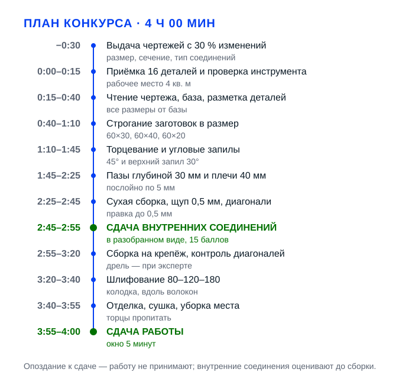
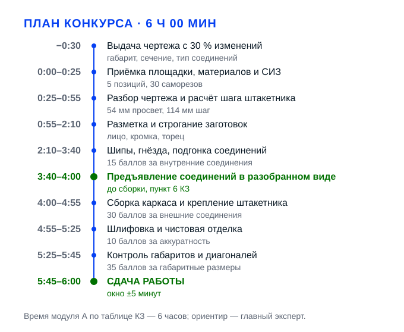
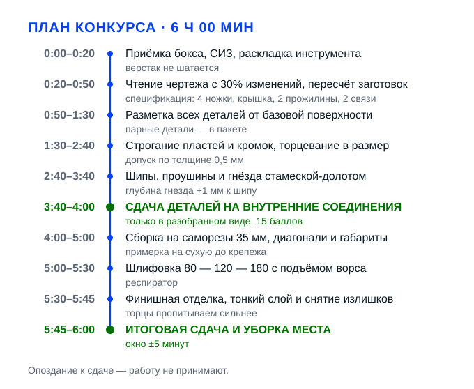

Плотницкое дело (Р)
Задания ниже — официальные файлы «Абилимпикс» (источник: abilympics-russia.ru), разложенные по категориям. Решения написаны по тексту задания, регламенту и критериям оценки; в них указано, что именно проверяет эксперт.
Школьник
14–16 лет, базовый уровень заданияВ официальном файле категории не разделены отдельными разделами — приводим задание целиком; различия по категориям смотрите в таблице модулей.
Пошаговое решение
Задание категории «Школьники» — изделие «Стропильная система» по модулю А: за четыре часа нужно выполнить подготовительные, заготовительные и разметочные работы, определить базовые поверхности деталей, ручным инструментом сформировать соединения, собрать изделие и провести чистовую отделку. По спецификации это шестнадцать деталей: четыре стропила 450 на 60 на 30 мм, два бруса 450 на 60 на 40 мм, два мауэрлата 400 на 60 на 40 мм и восемь досок обрешётки 450 на 60 на 20 мм. Оценивают пять критериев: внутренние соединения — 15 баллов, габаритные размеры — 15, внешние соединения — 40, отклонения от чертежа — 20, аккуратность отделки и чистота — 10. Электроинструмент применяется только под наблюдением эксперта, а детали до сборки предъявляются на оценку внутренних соединений в разобранном виде; обновлённые чертежи с 30 % изменений выдают за 30 минут до старта.

Задача 1. Подготовить рабочее место, принять заготовки и разметить деталиМодуль А · база для 20 баллов за отклонения от чертежа
Первая задача не даёт ни одного балла сама по себе, но она определяет, откуда возьмётся всё остальное. Пока заготовка не проверена, а базовая пласт не помечена, любая линия разметки висит в воздухе: пила идёт по карандашу, карандаш — от произвольной кромки, и к моменту сборки выясняется, что детали разные по сечению. Поэтому здесь мы сначала приводим в порядок место и инструмент, затем принимаем шестнадцать деталей по спецификации, потом читаем чертёж и только после этого берём карандаш. Отдельно помните про 30 % изменений: общий размер, сечение заготовок и тип соединений могут отличаться от привычного чертежа, а обновлённые листы выдают за 30 минут до старта.
Действие 1.1. Привести рабочее место и инструмент в состояние «готов к старту»
Шаг 1.1.1
Ставим верстак так, чтобы подходить к нему можно было с двух сторон, а заготовка ложилась вдоль рабочей доски. Площадь рабочего места по компетенции — 4 кв. м, и всё, что не влезает в эти четыре квадрата, будет мешать вам же: снимаем лишние вещи с подверстачья, освобождаем проход шириной не меньше 1,5 м. Проверяем устойчивость: верстак не должен качаться, клинья и винты подтягиваем до упора. Свет включаем до начала разметки и ставим его слева и спереди, чтобы тень от руки не ложилась на линию карандаша.
Критерий «Отклонения от чертежа» стоит 20 баллов, и большая часть этих отклонений появляется не от кривого пиления, а оттого, что деталь сдвинулась в тисках на 2–3 мм вместе с линией разметки. Качающийся верстак добавляет к этому уход пропила вкось. Организация места входит и в инструкцию по охране труда, которую вы подписали до старта, — неисправный верстак по правилам вообще повод остановить работу и позвать главного эксперта.
Кладём ладонь на крышку верстака и нажимаем поочерёдно на все четыре угла — качки нет, стыки не скрипят. Зажимаем заготовку в тисках и толкаем от себя и в сторону: деталь стоит мёртво, кромка не завалена, губки не перекашивают брусок. Проход за спиной свободен на всю ширину шага.
Самая частая ошибка — работать на ходящем верстаке и придерживать деталь левой рукой вместо упора. Ножовку ведёт, пропил уходит вкось на 1,5–2 мм, деталь укорачивается, и на габарите 450 мм это уже не припуск, а нехватка, которую ничем не закрыть.
Эксперт обходит площадку в первые десять минут и смотрит на устойчивость верстака, освещённость, свободный проход между рабочими местами и на то, не лежит ли инструмент на полу. Отдельно он отмечает, подкладывает ли участник обрезок под деталь, чтобы не портить лицевую пласть о крышку верстака.
Шаг 1.1.2
Раскладываем инструмент по постоянным местам: справа от тисков — режущий (ножовка, стамески, рубанок), слева — измерительный (линейка, угольник, малка, транспортир-угломер, циркуль), в лотке — крепёж, карандаш и шило. Каждый инструмент проверяем до первого реза: у ножовки полотно натянуто и не имеет трещин у ручки, развод зубьев равномерный, у стамески лезвие без зазубрин, у рубанка лезвие выставлено и не сколото. Тупую стамеску и рубанок с заваленной кромкой сразу меняем через эксперта.
Тупой инструмент — это не медленнее, а опаснее: он требует большего усилия, срывается с линии и оставляет рваную кромку, то есть мшистость и вырывы, которые потом снимаются шлифованием вместе с размером. Кроме того, часть инструмента по инструкции используется под наблюдением эксперта или ответственного старше 18 лет — ножовки, рубанки, стамески и дрель-шуруповёрт; линейка, угольник, малка, циркуль, струбцины и киянка — самостоятельно.
Проведите полотном ножовки по обрезку: стружка снимается ровно, без подпрыгивания и без увода в сторону. Стамеска при лёгком движении от руки снимает тонкую ровную стружку, а не пыль. Рубанок на обрезке даёт непрерывную стружку, а не рваные куски. Угольник, приложенный к поверочной линейке, не даёт просвета.
Работать тем, что дали, даже если полотно рвёт волокно: вы потом потратите двадцать минут на зачистку задиров и всё равно не получите ровной плоскости. Второй промах — оставить инструмент на краю верстака: он падает, лезвие выкрашивается, а время на замену уходит из ваших четырёх часов.
Эксперт смотрит на исправность и заточку инструмента до старта, фиксирует замену и следит, чтобы участник не брал стамеску и ножовку без его присутствия: по инструкции этот инструмент используется под наблюдением ответственного старше 18 лет.
Шаг 1.1.3
Надеваем всё, что требует инструкция: спецодежду, обувь с металлическим носком, защитные очки, наушники или беруши, респиратор для шлифования. Волосы убираем под головной убор, рукава застёгиваем или подворачиваем так, чтобы манжета не свисала к полотну ножовки. Кольца, часы и браслеты снимаем: они цепляются за струбцины и оставляют следы на отшлифованной поверхности. Очки надеваем до первого включения дрели, а не после того, как стружка полетела в лицо.
Пилению и долблению сопутствует мелкая стружка и пыль, а при работе стамеской лезвие идёт в сторону корпуса. Требования охраны труда в конкурсном задании перечисляют очки, наушники, респиратор и обувь с металлическим носком прямо, и нарушение этого пункта может закончиться остановкой работы, а не снижением баллов. Для школьников это ещё и условие допуска: к работе допускаются участники от 14 лет, прошедшие инструктаж.
Проверьте себя в отражении витрины или попросите волонтёра: очки на глазах, а не на лбу, беруши вставлены, манжеты не болтаются, обувь закрытая и сухая, волосы убраны. Стружка на полу не мешает шагу, а респиратор лежит рядом с местом шлифования, а не в сумке.
Классика — надеть очки на лоб с мыслью «потом надену» и получить стружку в глаз на первом же запиле: работа останавливается, участника ведут к медику, и время конкурса уже не вернуть. Вторая ошибка — длинный свисающий рукав: он цепляется за ручку ножовки и тянет руку прямо к полотну.
Эксперт проверяет СИЗ до старта и в течение всей работы, отдельно отмечая моменты, когда участник снимает очки или беруши. Нарушение этого пункта обсуждается с главным экспертом до того, как участник продолжит работу.
Шаг 1.1.4
Держим рабочую зону чистой с самого начала: стружку сметаем щёткой в совок и в контейнер для отходов, а не в общую кучу под верстаком. Обрезки складываем отдельно от стружки, потому что короткие обрезки ещё пригодятся как подкладки под струбцины. Инструмент после каждой операции возвращаем на своё место: стамеска не лежит на верстаке лезвием вверх, ножовка не кладётся зубьями на металл.
Порядок на столе — это скорость. Когда карандаш, угольник и стамеска лежат на постоянных местах, рука идёт к ним не глядя, и на сорока операциях это экономит десятки минут из четырёх часов. Уборка мусора руками запрещена инструкцией: только щётка и совок, иначе порез о тонкую стружку гарантирован.
Поверхность верстака свободна настолько, что на ней помещается деталь 450 мм целиком. Стружка только в контейнере, пол в рабочей зоне сухой и чистый, обрезки сложены отдельно, инструмент на своих местах, лезвия закрыты чехлами или повёрнуты от вас.
Оставить стружку на верстаке: она попадает под заготовку при разметке, деталь ложится с перекосом в 1–2 мм, и все размеры, снятые от такой базы, уходят. Второй промах — сметать стружку рукой, о которую потом порезаться.
Эксперт оценивает аккуратность рабочего места и то, убирает ли участник стружку по ходу работы, а не только в конце. Отдельно фиксируется, лежит ли стамеска лезвием вверх и сметается ли мусор рукой вместо щётки.
Действие 1.2. Принять и проверить заготовки
Шаг 1.2.1
Сверяем комплект по спецификации чертежа школьников: четыре стропила 450 на 60 на 30 мм, два бруса 450 на 60 на 40 мм, два мауэрлата 400 на 60 на 40 мм и восемь досок обрешётки 450 на 60 на 20 мм — всего шестнадцать деталей, позиции с первой по шестнадцатую. Раскладываем их по группам и пересчитываем вслух, отмечая каждую позицию карандашом на торце. Сечения проверяем линейкой в трёх местах каждой заготовки, а не в одном.
Приёмка — единственный момент, когда недостачу ещё можно закрыть: после старта замена идёт только через главного эксперта и только при уважительной причине. Кроме того, именно здесь вы ловите последствия 30 % изменений — сечение заготовок входит в список того, что меняется, и если вы принесли в голове старые 60 на 30, а в лотке лежит другое сечение, дальше поедет вся разметка.
Шестнадцать деталей на месте, количества по группам совпадают: четыре стропила, два бруса, два мауэрлата, восемь досок обрешётки. Сечение каждой заготовки одинаковое по всей длине и совпадает с чертежом с точностью до 1 мм. Расхождения записаны карандашом на листке и показаны эксперту до старта.
Начать с разметки, не пересчитав комплект: в середине работы выясняется, что одной доски обрешётки нет, а восемь досок — это ровно то, что задано, и заменить её нечем. Вторая ошибка — проверить сечение на одной заготовке и решить, что все одинаковые.
Эксперт при приёмке фиксирует комплектность и качество выданного материала. Спорные детали решаются до старта: после начала работы претензии по количеству и сечению не принимаются, а замена идёт только через главного эксперта.
Шаг 1.2.2
Осматриваем каждую заготовку на пороки: сучки, косослой, трещины, обзол и синеву. Выпадающие и крупные сучки опасны тем, что ножовку уводит в сторону, а стамеска на сучке скалывает лишнее. Косослой даёт задиры при строгании. Трещины по торцу могут уйти вглубь на всю длину детали. Детали с пороками в самой нагруженной зоне — там, где будет шип или паз, — откладываем и показываем эксперту до начала работы.
Порок в зоне соединения — это не косметика: при долблении паза сучок выкрашивается, стенка получается рваной, соединение теряет плотность, и вы теряете баллы по критерию «Внутренние соединения» — 15 баллов, которые набираются только плотной посадкой. Замена заготовки до старта занимает минуту, переделка детали в середине конкурса — сорок минут, которых у вас нет.
Осматриваем по пласти, по кромке и по торцам, отмечая подозрительные места карандашом. Здоровый участок имеет ровный цвет без синих пятен, трещина не идёт глубже 2–3 мм, сучок светлый и сидит плотно, не продавливается ногтем. Заготовки с пороком в зоне будущего паза отложены отдельно.
Пустить в работу заготовку с трещиной по торцу, рассчитывая, что «до паза не дойдёт»: при долблении трещина раскрывается, и стенка паза откалывается целиком. Вторая ошибка — выбросить дефектную заготовку самому, не показав эксперту: замену не выдадут, потому что факт не зафиксирован.
Эксперт смотрит, как участник обращается с пороками: обходит их, выносит на незаметную сторону или молча пилит через сучок. Второе фиксируется как непонимание свойств материала, даже если размер выдержан.
Шаг 1.2.3
Проверяем геометрию заготовок: прямолинейность кромки на просвет от глаза, отсутствие пропеллера по диагоналям, перпендикулярность торцов. Если заготовки даны с припуском на обработку, оставляем по 1–2 мм на строгание и записываем это число рядом с размерами на чертеже. Заготовку, у которой кромка винтом, откладываем в сторону: из неё получится деталь, которая не встанет в соединение без клина.
Пропеллер на детали 450 мм — это перекос до 2 мм по диагонали, и никакая разметка его не исправит: деталь встанет в паз с зазором с одной стороны и натягом с другой. Припуск на строгание тоже нужно держать в голове: если отпилить точно по размеру сразу, то после снятия 1 мм на строгание деталь окажется короче чертежа, а «Габаритные размеры» — это 15 баллов.
Кладём деталь на ровную плиту верстака и прижимаем: качания нет, просвета под серединой нет. Кромку смотрим на просвет против света — линия ровная, без волны. Угольник, приложенный к торцу, не даёт просвета больше 0,5 мм, а припуск на строгание записан рядом с размерами на чертеже.
Строгать заготовку с пропеллером, надеясь вывести её «по ходу»: вы снимете 3–4 мм, уйдёте из сечения 60 мм и всё равно получите перекошенную деталь. Вторая ошибка — дать припуск «на глаз», без записи, и потом не вспомнить, от чего считать размер.
Эксперт проверяет прямолинейность и перпендикулярность выборочно, прикладывая угольник к уже размеченным деталям в момент промежуточной сдачи. Пропеллер на детали он находит, положив её на поверочную плиту.
Шаг 1.2.4
Маркируем детали по позициям чертежа: на нелицевой пласти каждой заготовки пишем номер от 1 до 16 и короткое обозначение — «стр», «брус», «мауэрлат», «обрешётка». Маркер или карандаш выбираем мягкий, чтобы не оставлять вдавленных следов, которые потом придётся снимать шлифованием вместе с волокном. Парные детали помечаем дополнительно: по чертежу элементы 1 и 3 симметричны 2 и 4, и путать их нельзя.
Шестнадцать деталей похожи друг на друга, особенно обрешётка и брусья. Без маркировки вы неизбежно поставите стропило с внутренней стороны наружу, и шлифованная лицевая пласть уйдёт в незаметное место, а наружу выйдет пласть с карандашной разметкой. Симметрия пар важна для критерия «Внешние соединения» — 40 баллов, самого весомого в задании школьников.
На каждой детали читается номер и тип, метка стоит на стороне, которая после сборки не видна. Парные детали лежат зеркально друг к другу, как на чертеже. Вы можете назвать позицию любой детали, не поднимая её со стола, и показать, где у неё лицевая пласть.
Писать номер на лицевой пласти: карандаш уходит в волокно, при шлифовании стирается неравномерно, и на отделанном изделии остаётся серое пятно — минус по «Аккуратности отделки», 10 баллов. Вторая ошибка — маркировать все детали одинаково, «по месту разберёмся».
Эксперт при промежуточной сдаче видит, подписаны ли детали, и по подписям проверяет, совпадает ли ваша нумерация с чертежом. Путаница в позициях сразу отражается на оценке внешних соединений.
Действие 1.3. Прочитать чертёж и зафиксировать базовую поверхность
Шаг 1.3.1
Читаем чертёж по проекциям, а не по картинке целиком: сначала изометрия — она даёт общий порядок сборки, потом вид спереди — там видны углы наклона стропил и запилы, потом вид сверху — по нему понятно расположение восьми досок обрешётки, потом узлы — там размеры пазов. Выписываем на листок рабочие числа: угол наклона стропил, угол верхнего запила, ширину и глубину паза, длины деталей. Помним, что обновлённые листы с 30 % изменений выдают за 30 минут до старта, и именно их числа главные.
Чертёж — единственный источник истины на конкурсе, и «Отклонения от чертежа» — это 20 баллов, которые снимаются за каждое расхождение. Устное объяснение «мне показалось, что так проще» не работает: эксперт прикладывает деталь к чертежу, а не слушает логику. Выписанные числа экономят время ещё и потому, что к чертежу вы будете возвращаться десятки раз, а к своему листку — сотни.
На листке есть все рабочие размеры: длины четырёх групп деталей, сечения, углы запилов, размеры паза и плеч. Вы можете, не глядя в чертёж, назвать, под каким углом пилится верхний торец стропила и какой глубины выбирается паз. Листы с изменениями просмотрены и подписаны вами.
Начать пилить по изометрии, где углы искажены: на изометрии 45 градусов выглядят иначе, чем в жизни, и запил, снятый с картинки, уводит скат. Вторая ошибка — проигнорировать листы с изменениями и работать по запомненному чертежу.
Эксперт проверяет, смотрел ли участник выданные листы с изменениями: на площадке это видно по первым запилам, они либо совпадают с новым углом, либо нет. Вопрос об угле задаётся прямо, и ответ по памяти считается подтверждением.
Шаг 1.3.2
Выбираем базовую поверхность и фиксируем её: у каждой детали это одна пласть и одна кромка, от которых пойдут все размеры. Выбираем ту пласть, которая ровнее и без пороков, — она же станет лицевой после сборки. Помечаем базу условным знаком: две короткие риски на торце, соединённые линией вдоль кромки. Дальше все размеры, углы и линии переносим только от этой базы, а не от произвольного края.
Правило базы — то, что отличает точную деталь от «примерно похожей». Если первый размер вы сняли от одной кромки, второй от другой, а кромки не параллельны на 1 мм, погрешности складываются, и на ширине 60 мм вы получите 2 мм разницы между деталями одной группы. Именно из-за этого потом не сходятся пазы: «Внутренние соединения» — 15 баллов, «Габаритные размеры» — 15 баллов.
Риска базы видна на торце каждой детали, и при проверке вы можете показать, от какой плоскости снят любой размер. Все карандашные линии идут параллельно базовой кромке. На парных деталях база выбрана с одной и той же стороны, чтобы изделие не повело винтом.
Менять базу по ходу работы: начали от одной пласти, потом «удобнее» стало от другой. Это самый распространённый способ получить детали, каждая из которых по отдельности в допуске, а в сборе они не сходятся: пазы смещаются на 1–2 мм, и подгонка занимает остаток времени.
Эксперт при промежуточной сдаче смотрит на риски базы: если их нет, значит, размеры снимались хаотично, и это видно по несимметричным плечам пазов и разной ширине деталей одной группы.
Шаг 1.3.3
Проверяем измерительный инструмент до разметки: угольник прикладываем к поверочной линейке или к заводскому торцу заготовки и смотрим просвет — он должен быть нулевым; малку выставляем по транспортиру-угломеру на нужный угол и затягиваем винт; линейку сверяем с делением на металлической рулетке. Мягкий карандаш затачиваем на конус, а не лопаткой: лопатка даёт линию толщиной 1 мм, и по ней невозможно пилить точно.
Угольник, у которого угол не 90 градусов, тихо портит все детали: каждый торец уходит на одинаковую величину, и заметить это можно только на сборке, когда уже поздно. Малка с нечётко выставленным углом даёт разницу между левым и правым запилом, и конёк не сходится. Проверка инструмента занимает две минуты, переделка четырёх стропил — час.
Угольник, приложенный к базе и к торцу, не даёт просвета. Малка, приложенная к транспортиру, показывает выставленный угол без перекоса и не сбивается при нажатии. Карандашная линия тонкая и одна, а не дорожка из трёх, и грифель не рвёт волокно.
Размечать инструментом, который «вроде нормальный»: проверка занимает две минуты, а ошибка угольника тиражируется на все шестнадцать деталей, стоит 20–25 минут переделки и снимает баллы по габаритам и отклонениям от чертежа одновременно.
Эксперт смотрит, проверяет ли участник угольник и как выставляет углы: по малке с транспортиром или на глаз. Инструмент с проверенным углом он отмечает как признак аккуратной подготовки.
Шаг 1.3.4
Составляем короткий план на бумаге: в каком порядке обрабатываем детали, что делаем первым, где будет промежуточная сдача внутренних соединений. Порядок очевиден из чертежа: сначала строгаем все заготовки в размер, потом торцуем и делаем угловые запилы, потом выбираем пазы и формируем ответные части, потом сухая сборка, сдача соединений в разобранном виде, окончательная сборка и отделка. В плане обязательно отмечаем время сдачи: соединения предъявляются до сборки.
План нужен не для красоты: по условиям задания детали сдаются на оценку внутренних соединений именно в разобранном виде, и если вы соберёте изделие наглухо, эксперт увидит только внешние соединения, а 15 баллов за внутренние останутся без оценки. Кроме того, при четырёх часах на 16 деталей любая перестановка этапов съедает время на подгонку.
На листке порядок этапов с ориентировочным временем: строгание, торцевание, пазы, сухая сборка, предъявление соединений, окончательная сборка, отделка. Отдельной строкой стоит сдача внутренних соединений в разобранном виде, и план совпадает с последовательностью из конкурсного задания.
Собирать изделие до предъявления соединений — самая дорогая ошибка в этой компетенции: разбирать затянутое нельзя, эксперт видит только внешние соединения, и 15 баллов за внутренние вы теряете даже при идеально выполненных пазах.
Эксперт объявляет порядок предъявления перед стартом. Участник, который в этот момент уже закрутил саморезы, оценивается только по внешним соединениям, и это видно по его плану.
Действие 1.4. Разметить детали от базы
Шаг 1.4.1
Разметку ведём от зафиксированной базы: прижимаем угольник пяткой к базовой кромке, карандаш ведём на себя одним движением, наклоняя его так, чтобы грифель касался линии разметки всей боковой поверхностью. Ширину откладываем линейкой в двух точках — у начала и у конца детали, — и только потом соединяем точки линией. Риски наносим шилом только там, где линия должна пережить строгание: у пазов и у запилов.
Линия, проведённая от двух точек, — это единственный способ получить параллельность на детали 450 мм: одна точка даёт перекос до 2 мм на длине. Шило вместо карандаша нужно потому, что карандаш стирается ладонью и стружкой, а вы возвращаетесь к разметке после каждого прохода рубанком. Точность разметки прямо переходит в баллы за габариты и отклонения от чертежа.
Приложите линейку к проведённой линии в трёх местах: расстояние до базовой кромки одинаково с точностью до 0,5 мм. Линия одна, тонкая, не раздвоенная, идёт точно по размеру, а не рядом с ним. Риски шилом видны у пазов и у запилов и не стираются ладонью.
Вести линию «примерно по размеру», с наклоном грифеля: линия получается толщиной 1 мм и со скосом, пила идёт по ближнему краю, и деталь выходит на 1 мм уже. Вторая ошибка — проводить размер от торца, который ещё не отторцован под 90 градусов.
Эксперт смотрит на плотность линий и на наличие рисок у соединений: по ним видно, работал участник от базы или на глаз. Раздвоенные линии он читает как разметку без второго контрольного замера.
Шаг 1.4.2
Размечаем угловые запилы. На стропилах откладываем угол наклона 45 градусов к базовой кромке, а на верхнем торце — запил под 30 градусов, как на виде спереди: два стропила сходятся в коньке, и их торцы должны лечь друг к другу без зазора. Малку выставляем по транспортиру-угломеру и затягиваем, линию ведём по её рабочей кромке. На каждом торце помечаем, какая сторона идёт к коньку, а какая вниз, чтобы не перевернуть деталь при сборке.
Запилы — самая заметная часть изделия: даже при идеальных пазах косо срезанный конёк виден сразу и попадает в критерий «Внешние соединения» — 40 баллов, почти половина оценки школьников. Ошибка в угле на 5 градусов даёт щель в коньке до 4–5 мм, и закрыть её ничем нельзя.
Обе линии на торце сходятся в одной точке, длина запила совпадает на левой и правой детали. Приложите малку к линии: рабочая кромка совпадает с ней по всей длине, без расхождения на концах. На торце читается метка, какая сторона идёт к коньку.
Размечать углы сразу на четырёх стропилах, не проверив первый: если малка сбилась, испорчены все четыре детали, а заготовок на замену нет. И вторая ошибка — забыть пометить сторону к коньку, перевернуть деталь и получить запил не с той стороны.
Эксперт проверяет углы запилов при промежуточной сдаче, прикладывая малку или угольник к торцам. Он отдельно смотрит, одинаковы ли углы на левой и правой детали, потому что конёк собирается из пары.
Шаг 1.4.3
Размечаем пазы и гнёзда под врубку. По узлу на чертеже паз выбирается шириной 220 мм и глубиной 30 мм, по краям остаются плечи по 40 мм — эти числа переносим на деталь от базы и от торца. Сначала рисуем контур паза целиком: две линии дна и две боковые, затем проверяем симметрию относительно середины детали. Шилом продавливаем контур до строгания, чтобы линии не исчезли под стружкой.
Паз задаёт всю геометрию узла: если дно выйдет на 2 мм глубже, стропило сядет ниже, изменится высота конька, и «Габаритные размеры» — 15 баллов — поплывут. Плечи по 40 мм держат деталь от раскалывания: сделать их уже — значит получить скол по волокну при первом же ударе киянкой.
Контур паза замкнут, длина каждой стороны совпадает с расчётом от базы, симметрия относительно середины проверена линейкой с обеих сторон. Плечи по краям равны между собой с точностью до 1 мм, а дно паза размечено на глубину 30 мм от лицевой пласти.
Размечать паз от двух разных баз: одна сторона от торца, другая от середины — и дно получается с перекосом, а стропило садится с зазором с одной стороны. Вторая ошибка — сделать плечи уже 40 мм, чтобы «паз был посвободнее».
Эксперт смотрит именно на плечи и на симметрию пазов: по ним сразу видно, снимались размеры от базы или произвольно. Плечо уже 40 мм он фиксирует как отклонение от чертежа, даже если паз выполнен чисто.
Шаг 1.4.4
Размечаем обрешётку: восемь досок 450 на 60 на 20 мм укладываются на скаты по четыре с каждой стороны, поперёк стропил, с одинаковым шагом. Отмечаем на стропилах места укладки рисками, чтобы доски не пришлось двигать на сборке, и сразу помечаем, какая доска куда идёт: левые и правые скаты зеркальны по чертежу. Торцы досок выравниваем по одной линии с одинаковым свесом с обеих сторон.
Обрешётка — это то, что видно на изделии сверху и что задаёт «Внешние соединения» вместе с коньком: восемь досок с разным шагом читаются как небрежность, даже если каждая доска отпилена идеально. Риски на стропилах снимают целый этап подгонки на сборке, а зеркальность важна потому, что изделие симметрично.
Все восемь досок одной длины, шаг между рисками одинаковый на левом и правом скате, свесы торцов совпадают при прикладывании линейки по краю. Доски не выступают за стропило больше, чем на чертеже, и каждая помечена своей стороной.
Размечать обрешётку без рисок на стропилах и выставлять её на глаз при сборке: шаг получается разный, изделие выглядит перекошенным, и баллы за внешние соединения снимаются сразу по нескольким позициям.
Эксперт на итоговой оценке смотрит на равномерность шага обрешётки и на совпадение свесов — это самые быстрые визуальные признаки аккуратности, по ним он проверяет остальное изделие.
Шаг 1.4.5
Перед первым резом делаем контрольную проверку всей разметки: раскладываем детали в порядке сборки, совмещаем риски пазов с местами установки и смотрим, сходятся ли линии. Проверяем суммы: длина детали минус два плеча должна давать длину паза; угол запила плюс угол наклона должен давать тот угол, который указан на виде спереди. Ошибку, найденную сейчас, исправляем ластиком и линейкой, а не стамеской.
Пять минут контрольной проверки экономят час переделки. Разметка — единственный этап, где ошибка ещё бесплатна; после первого запила она стоит детали, а запасных заготовок на площадке нет. Кроме того, при контрольной раскладке сразу видно, симметричны ли детали 1 и 3 относительно 2 и 4 — а это условие сборки.
При раскладке детали образуют узнаваемый контур изделия: пазы стоят друг против друга, запилы сходятся в коньке, обрешётка ложится на свои риски. Все арифметические проверки сошлись без остатка, а лишних деталей или нехватки не обнаружилось.
Начинать пилить сразу после разметки первой детали, «пока помню»: потом обнаруживается, что паз размечен от чужой кромки, и деталь уходит в брак. Вторая ошибка — проверять только одну деталь из группы, считая остальные копиями.
Эксперт при промежуточной сдаче раскладывает детали так же, как вы на контрольной проверке: если контур не сходится, вопросов к соединениям больше не возникает, и он переходит к следующему участнику.
Задача 2. Обработать заготовки и сформировать соединенияМодуль А · 15 баллов за внутренние соединения и 15 за габариты
Это основная работа руками: шестнадцать деталей нужно привести к одному сечению, отторцевать под прямым углом, снять угловые запилы и выбрать пазы. Всё делается ручным инструментом, и именно здесь набирается большая часть баллов: внутренние соединения стоят 15 баллов, габаритные размеры — 15, отклонения от чертежа — 20. Главное правило этапа — не спешить на первой детали: последовательность операций одинакова для всех шестнадцати, и если вы отработали её на стропиле, остальные пойдут в два раза быстрее. Помните и о том, что соединения будут смотреть в разобранном виде, поэтому подгонять их нужно до сборки, а не по месту.
Действие 2.1. Строгание заготовок в размер
Шаг 2.1.1
Настраиваем рубанок: выдвигаем лезвие на 0,2–0,3 мм над подошвой — это тонкая стружка, которая снимает волокно, но не задирает его. Проверяем на обрезке: рубанок должен идти с усилием, но без рывков, а стружка выходить цельной лентой. Лезвие выставляем строго параллельно подошве: перекос в 0,1 мм даёт разную толщину стружки по краям, и деталь получает клин по ширине. Стружколом прижимаем к лезвию без зазора.
Перекошенное лезвие — причина того, что пласть выходит не плоской, а «ложкой»: с одной стороны снимается больше, и деталь 60 мм по ширине уходит в клин на 1–1,5 мм. Такой брусок не встанет в паз ровно, а «Внутренние соединения» и «Габаритные размеры» — это 30 баллов из ста. Настройка занимает три минуты и экономит всю деталь.
Снимите пробную стружку с обрезка: она сплошная, одинаковой толщины по всей ширине, подошва идёт по поверхности без перекоса. Посмотрите на просвет между лезвием и подошвой — щель ровная по всей длине. Рубанок не забивается, стружка выходит наружу, а не заворачивается под стружколом.
Работать рубанком «как выдал»: лезвие выпущено на 1 мм, рубанок прыгает, вырывает волокно и оставляет ступеньки, которые потом снимаются шлифованием вместе с размером. Вторая ошибка — не прижать стружколом: тонкая стружка забивается под него и заворачивается обратно в деталь.
Эксперт смотрит, настраивает ли участник рубанок перед работой или сразу начинает строгать: по первой же пласти видно, снимается ли стружка ровно. Он также отмечает, есть ли у рабочего места обрезок для пробных проходов.
Шаг 2.1.2
Строгаем лицевую пласть по направлению волокон — от комля к вершине, чтобы волокно не поднималось. Рубанок держим двумя руками: правая на ручке, левая на переднем рожке, корпус чуть над деталью, движение ровное, без нажима в начале и в конце прохода. За один проход снимаем не больше 0,3 мм, идём по всей длине детали, а не отдельными участками. Ширину 60 мм выводим постепенно, проверяя угольником после каждых двух-трёх проходов.
Строгание по волокну даёт гладкую поверхность, а против волокна — задиры и мшистость, которые видны на отделанном изделии и оцениваются в критерии «Аккуратность отделки, чистота» — 10 баллов. Ровная лицевая пласть нужна ещё и как база для разметки пазов: все размеры идут от неё, и любая волнистость переносится в глубину выборки.
Пласть проверяем линейкой на просвет в двух направлениях — вдоль и поперёк: просвета нет. Поверхность на ощупь одинаковая по всей площади, без ступенек и вырывов. Ширина 60 мм по всей длине детали, разница между концами не больше 0,5 мм.
Строгать против волокна и «подгонять» задиры шлифованием: задир не убирается, он заглаживается и поднимается снова после первой пропитки. Вторая ошибка — снимать стружку только в середине детали, где удобно: концы остаются толще, и деталь получается бочкой.
Эксперт проводит ладонью по пласти и смотрит на просвет против света; отдельно отмечает направление строгания по рисунку волокон и задиры у сучков, если они остались.
Шаг 2.1.3
Строгаем кромку под 90 градусов к лицевой пласти: деталь кладём на бок, лицевую пласть прижимаем к упору или к упорному бруску, чтобы не потерять угол. Рубанок ведём вдоль кромки, следя за тем, чтобы подошва шла всей плоскостью, а не наклонялась. Угольник прикладываем после каждых двух проходов: сначала к пласти, потом ко второй кромке. Выводим нужное сечение по чертежу — для стропил 60 на 30 мм, для брусьев и мауэрлата 60 на 40 мм, для обрешётки 60 на 20 мм.
Сечение — это фундамент всех соединений: паз размечается от пласти и от кромки, и если угол между ними не 90 градусов, стенка паза получается с завалом, а стропило садится с перекосом. Прямой угол важен ещё и потому, что детали соприкасаются плоскостями: при завале 1 градус на ширине 60 мм получается зазор 1 мм, который виден на просвет и попадает в оценку внешних соединений.
Угольник, приложенный к пласти и к кромке, не даёт просвета ни в начале, ни в конце детали. Штангенциркуль или линейка в трёх сечениях показывает одинаковые 30, 40 или 20 мм в пределах 0,5 мм. Кромка не имеет ложки на просвет и не завалена к торцам.
Строгать кромку, держа деталь на весу или без упора: рубанок наклоняется, угол уходит на 2–3 градуса, и деталь по сечению становится трапецией. При разметке паза от такой кромки стенка выходит клином, и соединение садится с зазором.
Эксперт прикладывает угольник к деталям при промежуточной сдаче, проверяя именно угол между лицевой пластью и кромкой. Завал кромки он видит и по тому, как деталь садится в паз.
Шаг 2.1.4
Последний проход делаем самым тонким: лезвие выпускаем на 0,1 мм и проходим всю деталь на один проход, без остановок и без нажима. Это снимает поднятое волокно и ворс, который появляется от предыдущих проходов. Кромки слегка притупляем — снимаем фаску 0,5 мм шлифовальной колодкой, чтобы при сборке они не заминались. После строгания проходим мягкой щёткой по волокну и убираем стружку с рабочего места.
Ворс, оставленный после строгания, поднимается от влаги и от первой пропитки, и поверхность становится шершавой уже после отделки — а перешлифовать собранное изделие по всем плоскостям невозможно. Притупленная фаска 0,5 мм сохраняет кромку от замятия при забивании и делает изделие приятнее на ощупь, что тоже входит в «Аккуратность отделки».
Проведите ладонью против волокна — рука скользит, ворс не цепляется. На просвет поверхность ровная, без полос от лезвия. Кромка не острая, но и не завалена больше чем на 0,5 мм, стружка с рабочего места сметена щёткой, а не рукой.
Пропустить финишный проход и сразу перейти к разметке: ворс забьётся в паз, и соединение будет садиться туго, а при подгонке вы снимете лишнее. Вторая ошибка — снимать фаску стамеской «на глаз» и завалить кромку на 1,5 мм, изменив сечение.
Эксперт смотрит на чистоту поверхности после строгания: следы лезвия, полосы и ступеньки фиксируются отдельно, потому что именно они проявятся после первого слоя отделки.
Действие 2.2. Торцевание и угловые запилы
Шаг 2.2.1
Торцуем детали под прямым углом по размеченной риске. Деталь зажимаем в тисках или прижимаем струбциной к упору так, чтобы линия реза была не дальше 20–30 мм от губок — чем дальше вынос, тем сильнее дребезжит конец. Ножовку ставим на линию, начинаем короткими движениями на себя под углом 30–40 градусов к плоскости, пока не образуется устойчивый пропил глубиной 3–4 мм, и только потом переходим к полному размаху. Пилим с припуском 0,5–1 мм до риски и подрезаем стамеской.
Торец под 90 градусов — это то, чем деталь примыкает к другой детали. При завале в 1 градус на ширине 60 мм получается щель 1 мм, которая видна на просвет и попадает в оценку «Внешние соединения» — 40 баллов. Припуск нужен, потому что полотно ножовки всегда уводит на 0,3–0,5 мм, и если пилить прямо по риске, деталь окажется короче расчётной.
Угольник, приложенный к торцу и к кромке, не даёт просвета больше 0,5 мм. Торец чистый, без скола на выходе полотна. Длина детали совпадает с расчётной с учётом припуска, а риска разметки осталась видимой до подрезки стамеской.
Пилить «с плеча» от самого края: полотно прыгает, зубья выкрашивают угол, и торец получается рваным на 2–3 мм. Вторая ошибка — не убрать припуск: деталь выходит короче, и вся группа становится негодной, потому что заготовок на замену нет.
Эксперт проверяет торцы угольником и на просвет, отдельно смотрит на сколы у выхода полотна и на то, оставлен ли припуск: по кромке видно, пилили по риске или рядом с ней.
Шаг 2.2.2
Снимаем угловой запил под 45 градусов — тот, которым стропило ложится на мауэрлат. Малку, выставленную по транспортиру-угломеру, прижимаем к базовой кромке и ведём карандашом по рабочей кромке; линию дублируем шилом. Деталь зажимаем под углом так, чтобы полотно шло вертикально, а не наискось: если пилить, наклонив ножовку, угол запила изменится на 2–3 градуса при внешне ровном резе. Ведём полотно по линии, контролируя его вертикальность вторым угольником.
Угол наклона стропил задан чертежом, и именно он определяет, сойдутся ли скаты. Ошибка в 3 градуса на длине 450 мм даёт смещение около 20 мм — конёк не сходится, и переделать уже ничего нельзя: деталь укорочена. По критерию «Отклонения от чертежа» такой запил снимает баллы сразу по двум-трём позициям.
Малка, приложенная к готовому запилу, совпадает с линией разметки по всей длине. Вертикальность реза проверена угольником сбоку. Запил ровный, без ступеньки посередине, где полотно меняло направление, и без скола на выходе.
Пилить, наклонив ножовку в сторону: снаружи рез выглядит правильно, а плоскость запила повёрнута, и при сборке деталь касается мауэрлата только одним ребром. Вторая ошибка — вести полотно по линии, но с поворотом детали в тисках по ходу реза.
Эксперт прикладывает малку к запилам при промежуточной сдаче и проверяет, одинаковы ли углы на левой и правой деталях. Расхождение в 2–3 градуса он сразу видит по тому, как стропило ложится на мауэрлат.
Шаг 2.2.3
Делаем верхний запил под 30 градусов: по чертежу два стропила сходятся в коньке, и их торцы должны лечь друг к другу всей плоскостью. Разметку ведём от верхней точки, отмеряя 30 градусов от линии, указанной на виде спереди, и помечая на торце сторону, которая идёт к коньку. Пилим с припуском 0,5 мм, затем подрезаем стамеской точно по риске. Пару стропил обрабатываем вместе, чтобы углы совпали.
Стык в коньке — самый заметный узел изделия и одновременно самое слабое место: при расхождении углов между торцами остаётся клиновая щель, которую ни шпатлёвкой, ни подтяжкой крепежа не закрыть. Внешние соединения стоят 40 баллов, и конёк эксперт осматривает первым.
Складываем два стропила запилами друг к другу на ровной поверхности: щели по всей длине стыка нет, торцы касаются без качания. Угол, снятый малкой с готового запила, совпадает с расчётным, а метка стороны к коньку читается на торце.
Запиливать пару по отдельности, «потом подтянем струбциной»: разница в 1–2 градуса даёт щель 3 мм, и струбцина её только увеличит, выгнув деталь. Вторая ошибка — перепутать сторону запила и получить зеркальную деталь, которая не встанет в пару.
Эксперт складывает стропила в коньке на промежуточной сдаче: смотрит на щель и на совпадение плоскостей. Конёк он осматривает первым, потому что это самый заметный узел изделия.
Шаг 2.2.4
Подрезаем запилы и торцы стамеской до риски: стамеску ставим фаской к материалу, киянкой наносим лёгкие удары по ручке, снимая слой 0,5–1 мм за проход. Работаем от края к середине, чтобы не отколоть угол. Движение — поперёк волокон, короткими толчками, придерживая деталь рукой с противоположной стороны от лезвия. После подрезки проходим торцы шлифовальной колодкой, снимая заусенец.
Припуск, оставленный ножовкой, снимается именно стамеской: она даёт плоскую поверхность без скола и позволяет остановиться точно на риске. Без этой операции торцы остаются с наклоном полотна, и при сборке детали примыкают не плоскостью, а ребром — щель видна на просвет, а баллы за внешние соединения снимаются.
Торец плоский, без лестницы и без скола на выходе лезвия. Приложенная к нему линейка не даёт просвета. Риска разметки либо сохранена, либо снята ровно на свою толщину, а заусенец убран шлифовальной колодкой.
Подрезать стамеской от края к середине, но с сильным ударом: угол выкалывается, и деталь укорачивается на 2–3 мм. Вторая ошибка — держать деталь рукой прямо перед лезвием, что опасно и почти всегда заканчивается порезом.
Эксперт смотрит на чистоту подрезки: рваные торцы и сколы видны сразу, особенно на лицевых сторонах, и читаются как небрежность при любой правильной геометрии.
Шаг 2.2.5
Проверяем длины и симметрию после торцевания: четыре стропила должны быть по 450 мм, два бруса по 450 мм, два мауэрлата по 400 мм, восемь досок обрешётки по 450 мм. Кладём парные детали рядом и совмещаем запилы: расхождения быть не должно. Метки пар — левая и правая — переносим на торец, чтобы на сборке не искать деталь по всей площадке. Результат замеров записываем, а не держим в голове.
Разница в длине между деталями одной группы даже в 1 мм даёт перекос изделия, а измеряется она в критерии «Габаритные размеры» — 15 баллов. Симметрия прямо влияет на вид изделия: у стропильной системы левый и правый скат должны быть зеркальны, иначе обрешётка ляжет с разным свесом.
Все длины в группе совпадают в пределах 0,5 мм: стропила и брусья по 450 мм, мауэрлаты по 400 мм, обрешётка по 450 мм. Парные детали совмещаются запилами без просвета, метки пар читаются на торцах, а записанные замеры совпадают с чертежом.
Торцевать все детали «по одной мерке на глаз»: каждая следующая отличается на 1 мм, и к сборке накапливается 3–4 мм перекоса. Вторая ошибка — не помечать пары и на сборке ставить левую деталь на правую сторону.
Эксперт выборочно замеряет длины рулеткой при промежуточной сдаче и сравнивает парные детали между собой. Разница в 1 мм внутри группы он считает отклонением, потому что она даёт перекос изделия.
Действие 2.3. Долбление пазов и формирование ответных частей
Шаг 2.3.1
Перед выборкой паза надрезаем контур: стамеску шириной 10–12 мм ставим фаской внутрь паза, вертикально, и лёгкими ударами киянки заглубляем на 2–3 мм по всей длине боковых линий. Затем проходим по линии дна, держа стамеску под углом 90 градусов к поверхности. Надрез делаем за один-два прохода, не углубляясь сразу на всю глубину: сначала контур, потом выборка.
Надрез контура — это то, что защищает деталь от скола по волокну. Без него первая же выборка отрывает щепу за линию разметки, плечо уменьшается, и «Внутренние соединения» — 15 баллов — теряются вместе с плотностью посадки. Ровный надрез позволяет потом выбирать материал смело, зная, где остановится разрыв.
Контур надрезан по всей длине, линии видны как тонкие канавки, щепа за линию не пошла. Стамеска в надрезе стоит вертикально, без наклона, стенка канавки ровная, а глубина надреза не больше 2–3 мм, чтобы не выйти за дно паза.
Начать выборку без надреза: волокно рвётся за линию на 2–4 мм, плечо становится уже 40 мм, и деталь садится с люфтом, который потом нечем убрать. Вторая ошибка — бить по стамеске сильно, с размаха: лезвие идёт глубже, чем нужно, и дно паза получается рваным.
Эксперт смотрит на кромки паза: рваные края и щепа за линией разметки сразу видны при промежуточной сдаче. Надрез контура он считает базовым признаком владения стамеской.
Шаг 2.3.2
Выбираем паз шириной 220 мм и глубиной 30 мм послойно: снимаем по 5 мм за проход, двигаясь от середины паза к краям, а не наоборот. Стамеску держим фаской вниз, подрезаем слой поперёк волокон короткими толчками, затем убираем его и проверяем глубину линейкой с упором. Каждые 5 мм глубины — контроль: до 30 мм вы должны прийти ровно к линии дна, а не «примерно туда».
Послойная выборка по 5 мм — единственный способ не выйти за глубину: снять сразу 30 мм стамеской невозможно, а попытка выбрать больше за проход приводит к тому, что дно уходит на 3–4 мм глубже, стропило садится ниже, и высота изделия меняется. Габаритные размеры — 15 баллов, и они проверяются рулеткой, а не на глаз.
Глубина паза по всей длине одинаковая — 30 мм с точностью до 0,5 мм, проверено линейкой с упором в трёх точках. Дно ровное, без ступенек и вырывов, ширина 220 мм совпадает на обоих концах паза, а стружка убрана из паза щёткой.
Выбирать паз от краёв к середине: волокно поднимается в центре, и дно получается горбом, деталь качается. Вторая ошибка — не проверять глубину до конца и обнаружить на сборке, что паз на 2 мм мельче и стропило не садится.
Эксперт проверяет глубину и ровность дна щупом и линейкой: неровное дно он фиксирует как дефект внутреннего соединения, даже если деталь садится плотно за счёт затяжки крепежом.
Шаг 2.3.3
Обрабатываем плечи по 40 мм и стенки паза: стенки подрезаем стамеской строго вертикально, снимая следы надреза, дно зачищаем широкой стамеской начисто. Углы паза подчищаем узкой стамеской, потому что именно в углах остаются «гребешки», из-за которых деталь не садится до дна. После выборки проходим по дну шлифовальной колодкой с зерном 80 — только по дну и стенкам, не задевая плечи.
Плечи держат деталь от раскалывания и задают её положение по длине: если одно плечо 40, а второе 37 мм, деталь смещается вдоль оси на 3 мм, и весь узел встаёт с перекосом. Чистые стенки и дно дают плотную посадку без зазора — а плотность посадки и есть основной признак, по которому эксперт оценивает внутренние соединения.
Оба плеча равны 40 мм в пределах 0,5 мм, стенки вертикальны и угольник не даёт просвета. В углах нет гребешков: проведите пальцем — поверхность гладкая, без ступенек. Шлифование по дну не задело плечи, и их размер не изменился.
Зачищать паз стамеской, поставленной под углом: стенка получает завал, и деталь садится с зазором у дна. Вторая ошибка — шлифовать плечи вместе с дном: вы снимете 0,5–1 мм с плеча, и деталь начнёт качаться.
Эксперт осматривает плечи и углы паза при промежуточной сдаче; разница в плечах фиксируется как отклонение от чертежа, а гребешки в углах — как дефект выборки.
Шаг 2.3.4
Формируем ответную часть соединения — ту, которая входит в паз. Работаем по той же логике: сначала надрез контура, затем послойная выборка, затем подгонка. Подгоняем «от себя»: снимаем по 0,2–0,3 мм и проверяем посадку, а не подрезаем сразу на 2 мм. Деталь должна входить с лёгким натягом от руки или с двумя-тремя ударами киянки через подкладку, но без струбцины. Все парные детали подгоняем по первому образцу.
Плотная посадка без зазора и без натяга — это и есть «внутренние соединения» на 15 баллов. Если деталь входит от руки слишком свободно, соединение держится только на крепеже и люфтит; если входит со струбциной, при затяжке она раскалывается по волокну. Подгонка по образцу нужна потому, что парные детали должны быть взаимозаменяемы.
Деталь входит в паз до дна, зазор не больше 0,5 мм по щупу, качания нет. Вынутая деталь садится на место повторно так же плотно, без дополнительных ударов, а парная деталь входит в тот же паз с тем же усилием.
Подрезать сразу «на свободно», чтобы наверняка вошло: появляется люфт, и эксперт фиксирует зазор. Вторая ошибка — забивать деталь молотком без подкладки: торец мнётся, волокно сминается, и соединение уже не восстановить.
Эксперт на промежуточной сдаче пробует соединения рукой: качает деталь, смотрит на зазор по щупу и на следы замятия от ударов молотком без подкладки. Плотность посадки — главный признак для 15 баллов.
Шаг 2.3.5
Снимаем заусенцы после подгонки: проходим по кромкам шлифовальной колодкой, снимая 0,2–0,3 мм, и убираем пыль щёткой. Каждое соединение проверяем на просвет и на качку, а результаты отмечаем на детали: годная — галочка карандашом на нелицевой стороне. Детали, прошедшие проверку, укладываем отдельно от непроверенных, чтобы на сборке не перепутать и не искать дефект заново.
Заусенец в соединении работает как клин: при затяжке крепежа он сминается, и через десять минут после сборки появляется зазор, которого не было. Отметки на деталях нужны из-за промежуточной сдачи: эксперту вы показываете соединения в разобранном виде, и он должен видеть, что вы сами проверили каждое, а не собрали всё подряд.
На всех шестнадцати деталях стоят отметки проверки, ни одно соединение не качается и не даёт просвета больше 0,5 мм. Кромки не имеют заусенцев — рука не цепляется, пыль убрана щёткой, годные и непроверенные детали лежат отдельно.
Пропустить заусенцы и «доработать» их при сборке: зазор появится уже после затяжки, когда разбирать нельзя. Вторая ошибка — проверять соединения выборочно, по одному из группы: дефект в непроверенной детали всплывёт на сдаче.
Эксперт при промежуточной сдаче смотрит на ваши отметки и выборочно проверяет те соединения, которые вы отметили как годные. Несовпадение отметки с фактом он фиксирует отдельно.
Задача 3. Собрать изделие насухо и предъявить внутренние соединенияМодуль А · 15 баллов за внутренние соединения
Между обработкой деталей и окончательной сборкой в задании есть отдельный пункт: детали сдаются на оценку внутренних соединений в разобранном виде. Это не формальность, а этап, который нужно спланировать заранее. Сначала вы собираете изделие насухо, без крепежа, убеждаетесь, что всё сходится и соединения сидят плотно, устраняете дефекты, затем разбираете, раскладываете детали и приглашаете эксперта. Пятнадцать баллов за внутренние соединения начисляются только за то, что эксперт увидел до сборки: после затяжки крепежа оценивать уже нечего.
Действие 3.1. Собрать изделие насухо и проверить геометрию
Шаг 3.1.1
Собираем изделие без единого самореза, в порядке, который задаёт конструкция: сначала на ровной поверхности раскладываем два мауэрлата, в их пазы укладываем четыре стропила, сводим стропила в коньке, затем ставим брусья и в последнюю очередь накладываем восемь досок обрешётки по размеченным рискам. Детали ставим строго по меткам пар и позиций, не подгоняя ударами: если деталь не идёт, значит, есть причина, и её надо найти, а не забить.
Сухая сборка — единственный способ увидеть накопленную ошибку до того, как она станет необратимой. После затяжки крепежа разобрать изделие без повреждения соединений уже не получится, а «Внутренние соединения» оцениваются в 15 баллов и смотрятся именно здесь. Порядок сборки взят из последовательности конкурсного задания: соединения формируются раньше, чем выполняется окончательная сборка.
Все шестнадцать деталей встали на свои места, изделие собрано без крепежа, каждая деталь держится в пазу от руки. Ни одна деталь не требует удара киянкой или струбцины для установки на место, а порядок сборки совпадает с последовательностью из задания.
Собирать сразу на саморезы «чтобы держалось»: крепёж стягивает детали и маскирует зазоры, а разбирать потом нельзя — внутренние соединения останутся неоценёнными. Вторая ошибка — ставить детали без меток и путать пары.
Эксперт подходит к участнику, когда изделие собрано насухо, и смотрит на посадку: качается ли деталь в пазу, есть ли зазор. Сухую сборку он считает подготовкой к промежуточной сдаче и оценивает её организацию.
Шаг 3.1.2
Проверяем каждое соединение щупом и рукой: щуп 0,5 мм не должен входить в стык между дном паза и деталью; деталь, взятая двумя пальцами, не должна качаться в пазу. Отдельно проверяем конёк: два стропила, сведённые вместе, должны касаться друг друга по всей плоскости запила. Там, где щуп входит, ставим карандашную метку — эти места пойдут в доработку.
Щуп 0,5 мм — это тот предел, который ещё считается плотной посадкой; всё, что шире, эксперт видит как зазор и снимает баллы за внутренние соединения. Качка опаснее зазора: она означает, что деталь держится на одном ребре, и при затяжке крепежа соединение либо разойдётся, либо расколется.
Щуп 0,5 мм не входит ни в один стык, все детали сидят неподвижно, конёк касается по всей плоскости запила. Метки дефектов нанесены карандашом на нелицевую сторону, и их немного — две-три, а не пятнадцать, иначе причина не в подгонке, а в разметке.
Проверять «на глаз» и не пользоваться щупом: зазор 0,7 мм глазом не виден, а на оценке фиксируется, и вы теряете баллы за соединения, которые считали годными. Вторая ошибка — проверять только внешние соединения, потому что они на виду, а пазы остаются непроверенными.
Эксперт при промежуточной сдаче пользуется щупом и покачивает детали рукой — результат фиксируется по каждому соединению отдельно, а не одной общей оценкой за всё изделие.
Шаг 3.1.3
Проверяем геометрию собранного изделия: габарит по длине и по ширине рулеткой, высоту по коньку, диагонали по крайним точкам основания. Диагонали мерим одной рулеткой и записываем оба числа: расхождение больше 2 мм означает перекос, и его причина — разная длина деталей или смещённые пазы. Дополнительно кладём уровень на мауэрлат и смотрим, не выведена ли конструкция винтом.
Диагонали — самый быстрый способ поймать перекос: при разнице 3 мм изделие уже стоит ромбом, и это видно на фотографии оценки. «Габаритные размеры» стоят 15 баллов, «Отклонения от чертежа» — 20, и оба критерия проверяются именно такими замерами, а не осмотром.
Диагонали совпадают в пределах 2 мм, габарит по длине и ширине соответствует чертежу, уровень на мауэрлате показывает отсутствие завала. Замеры записаны на листке, а не только запомнены, чтобы сравнить их с финальными после сборки.
Мерить диагонали разными инструментами или «на глаз по фотографии»: расхождение в 3–4 мм вы не увидите, а на сборке оно превратится в перекошенную обрешётку и разный свес с двух сторон, то есть в потерю баллов за габариты и внешний вид.
Эксперт при итоговой оценке первым делом берёт рулетку и проверяет габарит и диагонали. При промежуточной сдаче он смотрит только посадку соединений, поэтому замеры на этом этапе — ваша собственная страховка.
Шаг 3.1.4
Устраняем найденные дефекты: там, где щуп входил в стык, снимаем 0,2–0,3 мм с ответной части стамеской и снова проверяем; где деталь качалась — подрезаем дно паза или плечо, но не больше 0,5 мм за один раз. Если дефект требует снять больше 1 мм, деталь придётся переделать, и об этом нужно сразу сказать эксперту. После доработки собираем изделие повторно и снова проверяем диагонали.
Подгонка «по чуть-чуть» сохраняет размер: снять 0,2 мм и проверить дешевле, чем снять 2 мм и получить люфт, который уже нечем закрыть. Повторная сборка после доработки обязательна: любое вмешательство в паз меняет посадку, и без проверки можно уйти на сдачу с новым дефектом.
После доработки щуп не входит, качания нет, диагонали в допуске 2 мм. Метки дефектов стёрты, места подрезаны ровно, без скола, и снятый слой не превысил 0,5 мм за проход. Изделие собрано повторно, и зазоры проверены на всех соединениях заново.
Снимать дефект «на один сильный проход» стамеской: вместо 0,3 мм уходит 2 мм, появляется люфт, и соединение теряет плотность. Вы меняете один дефект на другой, более заметный, и при этом расходуете время, которого до сдачи остаётся немного.
Эксперт видит следы доработки и оценивает, насколько аккуратно она сделана: рваные подрезки читаются как небрежность, а снятый лишний миллиметр — как потеря плотности соединения.
Действие 3.2. Предъявить внутренние соединения эксперту
Шаг 3.2.1
Разбираем изделие аккуратно, без ударов: вынимаем обрешётку, снимаем брусья, разводим стропила, вынимаем их из пазов мауэрлата. Детали раскладываем на столе или на свободной части верстака в порядке позиций, лицевой стороной вверх, соединениями к эксперту. Протираем щёткой пыль и стружку из пазов, чтобы дно и стенки были видны чистыми. Рядом кладём чертёж и свой листок с замерами.
Порядок на столе — это то, что видит эксперт в первые секунды. Разложенные по позициям детали читаются как работа мастера, куча в углу — как спешка. Чистые пазы нужны потому, что стружка в дне паза не даёт увидеть, как выполнена выборка, и эксперт оценивает то, что видно, а не то, что есть на самом деле.
Все шестнадцать деталей разложены по позициям, пазы чистые, соединения обращены к эксперту, чертёж и листок с замерами рядом. Вы можете сразу показать любую деталь, которую он попросит, не перебирая всю раскладку.
Оставить детали в куче и подавать их по одной «как спросят»: пока вы ищете нужную позицию, эксперт уже прошёл дальше и поставил оценку по тому, что успел увидеть, а не по тому, что у вас на самом деле сделано.
Эксперт подходит по объявлению и смотрит прежде всего на организацию предъявления: разложено ли, подписано ли, чистые ли пазы. По этому он понимает, готовился участник к сдаче или нет.
Шаг 3.2.2
Приглашаем эксперта, когда всё готово: не раньше, чем детали разложены и вы сами проверили каждое соединение. Показываем соединения коротко и по делу: называем позицию, говорим, какой размер выполнен, показываем плечи и дно паза. На вопросы отвечаем числами, а не оценками: не «получилось хорошо», а «глубина 30 мм, плечи по 40 мм, щуп 0,5 мм не входит».
Промежуточная сдача — это единственный момент, когда 15 баллов за внутренние соединения вообще выставляются: по условиям задания детали сдаются в разобранном виде до сборки. Спокойный и точный показ работает на оценку: эксперт видит, что участник понимает, что именно он сделал, а не просто выполнил операции по инструкции.
Эксперт осмотрел все предъявленные соединения, ваши ответы совпали с фактическими размерами, и он поставил отметку о сдаче. Время сдачи записано вами в план, а оставшееся до конца время вы себе представляете ясно.
Звать эксперта, когда половина деталей ещё не разложена: он оценит то, что увидел, и второй раз к этому этапу не вернётся. Вторая ошибка — отвечать «примерно так, как на чертеже»: неточный ответ снижает доверие ко всем остальным размерам.
Эксперт фиксирует результаты промежуточной сдачи в оценочном листе по каждому соединению и в этот момент смотрит на плотность, чистоту выборки и симметрию плеч. Второй раз к этому этапу он не возвращается.
Шаг 3.2.3
После сдачи сразу собираем изделие обратно, не оставляя детали лежать: пока порядок в голове, сборка идёт в два раза быстрее. Сверяем метки позиций и пар, ставим детали в том же порядке, что и при сухой сборке, и снова проверяем диагонали — после разборки и сборки они могут измениться на 1–2 мм. Детали, которые вы снимали для показа, возвращаем на свои места, ничего не оставляя на столе.
Вторая сборка занимает меньше времени, чем первая, но именно в ней чаще всего теряют деталь или ставят её не той стороной: эксперт уже ушёл, и подсказать некому. Проверка диагоналей после сборки нужна потому, что при разборке детали могли поменяться местами, а парные элементы не взаимозаменяемы.
Изделие собрано в том же порядке, диагонали в допуске 2 мм, ни одна деталь не осталась лишней на столе. Метки позиций совпадают с чертежом, а парные детали стоят на своих сторонах, как при сухой сборке.
Собирать после сдачи «как получится», торопясь к отделке: перепутанные пары дают перекос в 2–3 мм, который обнаруживается на итоговом замере, когда исправлять уже нечего и разбирать изделие нельзя. Вторая беда — оставить деталь на столе: лишняя деталь на сдаче выглядит так же плохо, как недостающая.
Эксперт на итоговой оценке сравнивает собранное изделие с тем, что видел при промежуточной сдаче: если соединения после сборки разошлись, это заметно по зазорам, которых не было на показе.
Задача 4. Собрать изделие на крепёж, отделать и сдатьМодуль А · 15 баллов за габариты и 10 за чистоту отделки
Финальная треть работы решает, как изделие выглядит и сходятся ли его размеры. Здесь важно не ускоряться: крепёж ставится после проверки геометрии, шлифование идёт по возрастанию зерна, отделка наносится на обеспыленную поверхность, а сдача — заранее, с запасом по времени. Габаритные размеры стоят 15 баллов, аккуратность отделки и чистота — 10, отклонения от чертежа — 20, и все три критерия проверяются на последних минутах, когда возможности что-то переделать уже нет. Поэтому замеры и контроль делаются по ходу, а не в конце.
Действие 4.1. Собрать изделие на крепёж
Шаг 4.1.1
Ставим крепёж по чертежу и по указанию эксперта: под каждый саморез сначала сверлим направляющее отверстие диаметром на 1 мм меньше тела самореза, на глубину чуть больше длины ввинчивания. Сверлим строго перпендикулярно поверхности, по отметке шилом, чтобы сверло не ушло по волокну. Дрель-шуруповёрт по инструкции используется только под наблюдением эксперта или ответственного старше 18 лет, поэтому работу с ним начинаем после того, как эксперт подошёл к рабочему месту.
Отверстие на 1 мм меньше тела самореза — это гарантия от раскалывания: без него саморез работает как клин, и брусок 60 мм расщепляется по волокну, особенно у торца. Перпендикулярность важна потому, что наклонный саморез стягивает деталь в сторону и уводит геометрию, за которую начисляют 15 баллов. Наблюдение эксперта — требование охраны труда, а не формальность.
Отверстия расположены по разметке, сверло входило без наклона, стружка выходит равномерно с обеих сторон. На деталях нет трещин у торцов и скола на выходе сверла, а эксперт находился рядом в момент работы с дрелью.
Ввинчивать саморез без отверстия «на малых оборотах»: брусок 60 на 40 мм у торца лопается, деталь приходится менять, а запасной нет. Вторая ошибка — сверлить, наклонив дрель, чтобы «удобнее подлезть»: отверстие уходит вбок и выходит на лицевую сторону.
Эксперт наблюдает за работой с электроинструментом и проверяет наличие направляющих отверстий при осмотре сборки. Работу без наблюдения он фиксирует как нарушение требований охраны труда.
Шаг 4.1.2
Собираем в порядке, обратном разборке: мауэрлат, стропила, брусья, обрешётка. Перед затяжкой каждое соединение поджимаем струбциной с подкладкой из обрезка, чтобы детали не сдвинулись, пока вы закручиваете крепёж. Затягиваем поочерёдно: сначала наживляем все саморезы в узле от руки или на малых оборотах, затем подтягиваем крест-накрест, по половине оборота. Не затягиваем один саморез до упора, пока остальные не наживлены.
Струбцина держит узел в том положении, в котором вы его проверили насухо; без неё деталь сдвигается на 1–2 мм от вибрации и давления самореза, и зазор, которого не было, появляется. Поочерёдная затяжка крест-накрест распределяет усилие: если вогнать один саморез сразу, узел перекашивается, и щель открывается с противоположной стороны.
Узел собран без зазора, детали не сдвинулись относительно рисок разметки, головки саморезов стоят ровно, без перекоса. После затяжки изделие не качается на ровной поверхности, а подкладки струбцин не оставили вмятин.
Затягивать сразу до упора, без наживления остальных: узел перекашивается, и в соединении появляется клиновая щель до 1 мм. Вторая ошибка — собирать без струбцин, придерживая деталь рукой: сдвиг на 2 мм убивает геометрию, которую вы выверяли час.
Эксперт смотрит на сборку в процессе: наличие струбцин, порядок затяжки крест-накрест, отсутствие следов от подкладок на лицевых поверхностях. Перетянутый узел он видит по раскрытой щели с другой стороны.
Шаг 4.1.3
Контролируем геометрию по ходу сборки, а не после: после каждого узла прикладываем угольник к стыку и проверяем, не ушёл ли угол; раз в два узла мерим диагонали рулеткой. Если диагонали разошлись больше чем на 2 мм, ослабляем крепёж этого узла, выправляем положение и затягиваем снова. Уровень кладём на мауэрлат после установки стропил и проверяем, что конструкция не встала винтом.
Ошибку, пойманную на этом этапе, ещё можно исправить: крепёж ослабляется, узел возвращается на место. Через двадцать минут, когда изделие собрано и отшлифовано, любая правка означает разборку и потерю отделки. Габаритные размеры и отклонения от чертежа вместе — 35 баллов, и они набираются именно этим контролем.
Диагонали в допуске 2 мм после каждого второго узла, углы стыков не изменились, уровень не показывает завала. Все промежуточные замеры записаны, и по ним видно, на каком узле геометрия начала уходить.
Собирать всё до конца и мерить один раз в финале: если перекос есть, его причина уже закрыта крепежом и отделкой, найти её за пять минут до сдачи невозможно, а разборка стоит всей выполненной отделки.
Эксперт при итоговой оценке проверяет диагонали и уровень. Наблюдая за работой, он отмечает, мерил ли участник геометрию по ходу сборки или узнал о перекосе только в конце.
Шаг 4.1.4
Утапливаем головки саморезов на 1–2 мм ниже поверхности, чтобы они не выступили после шлифования: осаживаем их керном или бородком, придерживая деталь с обратной стороны. Углубления заделываем шпатлёвкой по дереву в цвет материала, излишки снимаем шпателем заподлицо и даём высохнуть по времени, указанному на банке. Следы подкладок и случайные вмятины от киянки поднимаем влажной тряпкой и легким прогревом, а не шлифованием.
Выступающая головка самореза при шлифовании рвёт шкурку и оставляет вокруг себя металлическую пыль, которая потом ржавеет под отделкой. Шпатлёвка в цвет материала нужна, чтобы углубления не читались как тёмные точки на светлой поверхности: это прямая «Аккуратность отделки, чистота» — 10 баллов, и они складываются из таких мелочей.
Головки ниже плоскости на 1–2 мм, углубления заполнены заподлицо, после высыхания шпатлёвка не просела. На поверхности нет вмятин и следов от подкладок струбцин, а тон шпатлёвки совпадает с цветом материала.
Утапливать головку сильным ударом молотка без подкладки: вокруг образуется вмятина, волокно сминается, и после шлифования остаётся тёмное пятно, которое уже не поднять. Такие пятна эксперт видит первыми.
Эксперт осматривает лицевые поверхности на предмет следов крепежа и вмятин — это самое заметное место для оценки чистоты, и он проверяет его при наклонном свете.
Действие 4.2. Отшлифовать и отделать изделие
Шаг 4.2.1
Шлифуем вручную колодкой с наждачной бумагой зерна 80: колодка нужна, чтобы не продавить поверхность пальцами и не сделать ям. Движение — строго вдоль волокон, равномерно по всей плоскости, без сильного нажима, по 8–10 проходов на участок. Кромки шлифуем отдельно, снимая фаску 0,5 мм, но не заваливая угол. Торцы шлифуем только мягко, чтобы не разбить линию запила.
Зерно 80 снимает следы стамески, ступеньки от рубанка и поднятое волокно, но не меняет геометрию: при нажиме на колодку вы снимете 0,5 мм и уйдёте из размера. Шлифование поперёк волокон оставляет царапины, которые проявятся после первой пропитки и уже невозможно будет убрать без повторной шлифовки.
Поверхность без ступенек и следов стамески, царапины идут вдоль волокон, а не поперёк. Кромки не острые, но и не завалены: угольник, приложенный к грани, показывает ровный угол, а фаска снята на 0,5 мм.
Шлифовать «на пальцах», без колодки: поверхность получается волнистой, и после отделки на ней видны пятна. Вторая ошибка — давить на колодку, чтобы быстрее: снимается лишний материал, и кромки заваливаются на 1 мм.
Эксперт проводит рукой по поверхности и смотрит на царапины: поперечные следы фиксируются как дефект отделки, а волнистость от шлифования без колодки видна на отражении света.
Шаг 4.2.2
Переходим на зерно 120, затем на 180, каждый раз меняя направление на перпендикулярное предыдущему и заканчивая вдоль волокон. Между переходами убираем пыль щёткой, иначе крупное зерно остаётся под мелким и оставляет борозды. На зерне 180 проходим поверхность легко, без нажима, и проверяем её на просвет под углом к свету: мелкие риски видны только под наклонным освещением.
Последовательность 80–120–180 нужна потому, что каждое следующее зерно убирает следы предыдущего; пропуск ступени оставляет царапины, которые проявятся после пропитки, когда исправлять уже нельзя. Контроль под наклонным светом — единственный способ увидеть риски до отделки: при прямом свете они не читаются.
На поверхности нет рисок от предыдущего зерна, цвет ровный по всей плоскости, поверхность на ощупь как бархат. Под наклонным светом нет блестящих полос и борозд, а пыль между переходами убрана щёткой.
Пропустить зерно 120 и перейти сразу с 80 на 180: царапины от крупного зерна не убираются, и после пропитки поверхность становится полосатой. Вторая ошибка — шлифовать без удаления пыли между переходами, тогда крупное зерно работает как наждак под мелким.
Эксперт смотрит поверхность под углом к свету — так видны все огрехи шлифования. Отдельно он проверяет труднодоступные места у соединений, где чаще всего остаётся крупное зерно.
Шаг 4.2.3
Обеспыливаем изделие: снимаем пыль щёткой, затем протираем слегка влажной, хорошо отжатой тряпкой и даём полностью высохнуть — обычно 10–15 минут при комнатной температуре. Затем поднимаем ворс: проходим поверхность мелким зерном 180 ещё раз, после чего снова снимаем пыль. Грунт или пропитывающий состав наносим тонким слоем вдоль волокон, кистью или тампоном, не оставляя луж в углах и у соединений.
Пыль, оставшаяся на поверхности, смешивается с составом и превращается в грязные пятна, которые уже не убрать. Ворс, поднятый после первой пропитки, делает поверхность шершавой — поэтому его снимают до нанесения состава, а не после. Ровный тон без пятен и потёков — это и есть «чистота», за которую дают 10 баллов.
Поверхность равномерно матовая или полуматовая, без пятен, потёков и пропусков. В углах соединений нет скоплений состава, через указанное на банке время поверхность не липнет, а ворс после первой пропитки снят.
Наносить состав на пыльную поверхность: пыль собирается в комочки, и после высыхания получается «песчаная» фактура. Вторая ошибка — налить много состава в угол соединения: там он не высыхает и остаётся липким.
Эксперт смотрит на равномерность тона и на отсутствие потёков у соединений — это видно с расстояния шага. Пятна от пыли под составом он читает как нарушение подготовки поверхности.
Шаг 4.2.4
Наносим финишный слой по указаниям на упаковке: обычно два тонких слоя с просушкой между ними и лёгкой шлифовкой зерном 240–320 после первого. Работаем вдоль волокон, не возвращаясь по мокрому слою, кисть ведём в одном направлении и не давим. Кромки и торцы пропитываем чуть обильнее, потому что они впитывают больше. Излишки сразу снимаем сухой кистью, не давая им загустеть.
Тонкие слои сохнут равномерно и не дают «апельсиновой корки», которая появляется от толстого слоя и портит впечатление от всей работы. Торцы и кромки впитывают состав сильнее плоскостей: если их не пропитать, они останутся светлее и будут выделяться полосами — это самый частый минус по критерию чистоты отделки.
Тон ровный по всему изделию, включая торцы и кромки; поверхность без пузырей, потёков и пыли под слоем. Через время сушки по упаковке поверхность не липнет и не оставляет следов от пальца, а кромки не светлее плоскостей.
Наносить толстый слой, чтобы «быстрее закрыло»: состав не высыхает, собирает пыль и даёт липкие пятна, которые невозможно заполировать за оставшееся время. Изделие сдаётся мокрым, и на нём остаются отпечатки.
Эксперт оценивает отделку на итоговой сдаче: равномерность тона, отсутствие потёков, состояние торцов и кромок. Мокрый слой он отличает от высохшего сразу — по блеску и липкости.
Действие 4.3. Проверить габариты и сдать изделие
Шаг 4.3.1
Делаем финальные замеры: длину и ширину изделия рулеткой по крайним точкам, высоту по коньку, толщины деталей в контрольных точках, диагонали основания. Мерим одной рулеткой, каждое число записываем на листок и подписываем, что именно измерено. Сравниваем с чертежом и с замерами сухой сборки: расхождение покажет, что ушло при затяжке крепежа и отделке.
«Габаритные размеры» — это 15 баллов, которые эксперт проверяет рулеткой, а не глазами; ваши собственные замеры за минуту до сдачи позволяют успеть что-то поправить, если расхождение появилось. Сравнение с сухой сборкой ещё и объясняет причину: если размер ушёл после затяжки, значит, узел стянут с перекосом.
Замеры совпадают с чертежом в пределах допуска, диагонали в пределах 2 мм, разница с замерами сухой сборки не больше 1 мм. Все числа записаны на листке рядом с чертежом, и вы можете назвать их без подглядывания.
Мерить «на глаз» или по одной стороне: перекос в 3 мм глазом не виден, а на оценке фиксируется сразу. Вторая ошибка — не записывать замеры и на сдаче не помнить, что получилось, хотя сравнение с сухой сборкой объясняет причину ухода размера.
Эксперт на итоговой оценке замеряет габарит и диагонали сам, сверяя с чертежом. Расхождения фиксируются по каждой позиции, поэтому ваши замеры нужны не ему, а вам — чтобы успеть поправить.
Шаг 4.3.2
Проходим по чертежу позиция за позицией и проверяем отклонения: совпадают ли длины, сечения, углы запилов, размеры пазов и плеч, одинаков ли шаг обрешётки и свесы с двух сторон. Проверяем симметрию изделия: детали 1 и 3 должны быть зеркальны 2 и 4, левый и правый скаты — одинаковы. Всё, что расходится с чертежом, отмечаем и решаем сразу: что можно подправить, а что уже нет.
«Отклонения от чертежа» — самый крупный после внешних соединений критерий, 20 баллов, и он проверяется именно сравнением с чертежом по позициям, а не общим впечатлением. Симметрия важна для стропильной системы по определению: несимметричное изделие выглядит перекошенным даже при идеальных соединениях.
Все позиции сверены с чертежом, расхождений больше допустимых нет либо они зафиксированы и объяснены. Свесы обрешётки с двух сторон одинаковы, шаг равномерный, парные детали стоят зеркально. Спорные позиции вы отметили и решили до сдачи, а не оставили на объяснения.
Проверять только то, что видно с лицевой стороны: отклонения в пазах и на внутренних плоскостях эксперт всё равно найдёт, а вы потеряете время на исправление видимого и не успеете то, что действительно даёт баллы.
Эксперт сравнивает изделие с чертежом по позициям, прикладывая рулетку и угольник. Симметрию он проверяет визуально с торца: несимметричное изделие выглядит перекошенным даже при идеальных соединениях.
Шаг 4.3.3
Убираем рабочее место до сдачи: стружку и пыль сметаем щёткой в совок, обрезки — в контейнер, инструмент чистим и убираем на место, стамески и ножовки — лезвиями от себя. Протираем верстак. Снимаем и очищаем средства защиты, убираем их в установленное место. Если по ходу работы замечали неисправность инструмента, говорим об этом техническому эксперту до сдачи, а не после.
Уборка входит в требования охраны труда по окончании работ и одновременно влияет на впечатление от работы: изделие на заваленном стружкой верстаке читается хуже, а эксперт подходит к рабочему месту, а не только к изделию. Кроме того, убранный инструмент — это отсутствие порезов на последних минутах, когда все торопятся.
Верстак чистый, пол в рабочей зоне свободен, инструмент на местах, лезвия повёрнуты от вас, отходы в контейнере. Средства защиты сняты и убраны, а неисправности инструмента, если они были, доложены техническому эксперту.
Оставить уборку на после сдачи: времени на неё не будет, а стружка на верстаке рядом с готовым изделием и разбросанный инструмент читаются как незавершённая работа, из-за чего страдает впечатление от всей работы.
Эксперт отмечает состояние рабочего места на итоговой сдаче. Неубранная стружка и инструмент, разбросанный по верстаку, читаются как незавершённая работа, даже если изделие сделано хорошо.
Шаг 4.3.4
Сдаём изделие заранее — за 5–10 минут до окончания времени, а не в последнюю секунду: опоздание к сдаче означает, что работу не принимают. Ставим изделие на стол для оценки, рядом кладём чертёж и листок с замерами. Коротко называем, что сделано: шестнадцать деталей, соединения выполнены и предъявлены в разобранном виде, габарит такой-то, отделка такая-то. На вопросы отвечаем числами и не спорим с оценкой.
Время сдачи — жёсткое условие конкурсного задания, и пять минут запаса нужны на то, чтобы изделие перенести, поставить и не уронить на последнем шаге. Спокойный доклад по делу помогает эксперту быстро увидеть то, что вы сделали: он оценивает пять критериев и часто ограничен временем.
Изделие стоит на столе для оценки, чертёж и замеры рядом, время сдачи не нарушено и осталось хотя бы пять минут запаса. Вы можете назвать габарит и размеры соединений без подглядывания, а отделка к моменту сдачи высохла.
Доделывать отделку в последнюю минуту и сдавать на бегу: состав не успевает высохнуть, изделие переносят мокрым, на поверхности остаются отпечатки — и 10 баллов за чистоту отделки теряются уже после того, как всё было сделано правильно.
Эксперт оценивает изделие по пяти критериям: внутренние соединения, габаритные размеры, внешние соединения, отклонения от чертежа и аккуратность отделки. Мокрое изделие с отпечатками он отмечает отдельно.
Студент
учащиеся колледжей и техникумовВ официальном файле категории не разделены отдельными разделами — приводим задание целиком; различия по категориям смотрите в таблице модулей.
Пошаговое решение
Студенческое задание по компетенции «Плотницкое дело» — это изделие «Декоративный забор» из одиннадцати штакетников 550×60×20 мм, двух стоек 550×50×30 мм, двух прожилин 1200×50×20 мм и двух ножек 350×50×30 мм, собранное ручным инструментом и посаженное на тридцать саморезов 35 мм. По таблице модулей конкурсного задания на модуль А отведено шесть часов, по пункту 2.4 за тридцать минут до старта выдаётся чертёж с тридцатью процентами изменений — меняются габарит изделия, сечение заготовок и тип соединений, — а часть деталей приходит уже с готовыми шипами. Оценка складывается из пяти критериев: габаритные размеры 35 баллов, внешние соединения 30, внутренние соединения 15, отклонения от чертежа 10 и аккуратность отделки 10. Ниже — весь путь по шагам: от приёмки материалов до сдачи изделия экспертам, с размерами, допусками и признаками того, что операция действительно выполнена.

Задача 1. Принять площадку, разобрать чертёж и настроить инструментМодуль А · 6 ч 00 мин · старт задания
Студенческое задание крупнее школьного: изделие «Декоративный забор» собирается из одиннадцати штакетников, двух стоек, двух прожилин и двух ножек, а по таблице модулей на всю работу отведено шесть часов. Первые сорок минут решают, уложитесь ли вы в эти шесть часов: пока не прочитан чертёж с тридцатью процентами изменений, выданный за тридцать минут до старта, нельзя ни размечать, ни строгать, потому что именно этот чертёж меняет габарит изделия, сечение заготовок и тип соединений. Поэтому здесь всё делается в жёстком порядке: место, средства защиты, приёмка материалов, расчёт разметки по чертежу, настройка инструмента — и только потом первая карандашная линия.
Действие 1.1. Принять рабочее место и материалы по спецификации
Шаг 1.1.1
Начинаем с габарита: по разделу 5 конкурсного задания на участника приходится 4 м², зона 3000×1900 мм и проход между рабочими местами 1,5 м. Верстак ставим так, чтобы до соседней зоны оставалось не меньше полутора метров. Качание проверяем ладонью в четырёх углах: если столешница отзывается нажатием хотя бы на миллиметр, подкладываем прокладку под ножку или просим другой верстак — строгать и долбить на качающейся плите бессмысленно. Инструмент раскладываем тремя зонами: справа режущий, слева разметочный, на дальнем краю струбцины и киянка, а лоток с саморезами — отдельно от стружки.
Организация рабочего места записана в пункте 2.3 КЗ первым номером и в инструкции по охране труда — отдельным требованием: инструмент должен лежать так, чтобы исключить его падение. Но важнее другое: прожилина длиной 1200 мм на узком верстаке ложится со свесом, а свес пружинит под рубанком, и кромка получается волной. Критерий «Габаритные размеры» стоит 35 баллов из ста, и половина этих баллов теряется не на разметке, а на вибрации заготовки.
Проверьте два числа рулеткой: от края верстака до границы соседней зоны — не меньше 1500 мм, свободная длина столешницы — не меньше 1300 мм, чтобы прожилина 1200 мм лежала целиком. Нажмите на углы и посмотрите на просвет между столешницей и подставленной линейкой: просвета быть не должно. Проверьте, что ни один инструмент не лежит лезвием к вам.
Типичная ошибка — занять верстак «как встал» и работать в проходе, выставив заготовку в общий коридор: эксперт делает замечание по охране труда, а сосед задевает вашу деталь. Вторая ошибка — сложить весь инструмент в одну кучу: на поиск стамески уходит по минуте, за шесть часов это час, вычтенный из разметки и подгонки.
Эксперт обходит площадку в первые минуты и смотрит именно на это: соблюдены ли 1,5 м прохода, свободен ли верстак, лежит ли инструмент упорядоченно. Замечание фиксируется сразу, а не «потом учтём».
Шаг 1.1.2
Надеваем то, что требует раздел 3.1 и пункт 1.3 инструкции: комбинезон или куртку с длинным рукавом, обувь с металлическим носком, защитные очки. Очки не снимаем до конца работы, даже когда строгаем «тихую» сосну: стружка летит в лицо именно на выходе рубанка из заготовки. Наушники или беруши надеваем перед шлифовкой и перед работой шуруповёртом, респиратор — при шлифовании и при работе с пылью от старой древесины. Рукава застёгиваем или подворачиваем выше локтя, чтобы манжета не попала под пилу.
Средства индивидуальной защиты перечислены в инструкции по охране труда отдельным списком, и их отсутствие — не минус балл, а основание не допустить к работе: при нарушении требований эксперт останавливает участника и вызывает главного эксперта. Обувь с металлическим носком нужна из-за падения заготовки: стойка 550×50×30 мм весит немного, но падает с верстака прямо на носок, и это самая частая травма на плотницких площадках.
Осмотрите себя перед стартом: очки на лице и не сползают при наклоне головы, обувь закрытая и сухая, рукава не висят над кистью, перчатки сняты — за станком и с рубанком работать в перчатках нельзя, они тянут руку к лезвию. Волосы убраны под головной убор, если он есть.
Частая ошибка — начать работу в очках, а через полчаса снять их «мешают, запотевают»: именно в этот момент стружка и попадает в глаз. Вторая — работать в перчатках на шуруповёрте: бита цепляет ткань и выкручивает кисть.
Эксперт проверяет экипировку до старта и отмечает её состояние по ходу работы: снятые очки и подвёрнутые «кое-как» рукава фиксируются как нарушение требований охраны труда.
Шаг 1.1.3
Принимаем материалы строго по спецификации КЗ и считаем каждую позицию вслух: штакетник 550×60×20 мм — 11 штук, стойка 550×50×30 мм — 2 штуки, прожилина 1200×50×20 мм — 2 штуки, ножка 350×50×30 мм — 2 штуки, саморез по дереву 35 мм — 30 штук. Каждую доску осматриваем с торца и с пласти: трещины, выпадающие сучки, синева, коробление. Заготовки с трещиной по кромке откладываем сразу и показываем эксперту до старта. Отдельно выясняем, какие детали выданы готовыми: по примечанию КЗ часть деталей приходит с уже сформированными шиповыми соединениями, и их не строгают, а только подчищают.
Спецификация — это не справочная таблица, а баланс материала: одиннадцати штакетников хватает ровно на комплект, лишнего штакетника на площадке нет, и испорченная деталь превращается в дефицит. Замена идёт только через главного эксперта, и то если он признает причину уважительной. Готовые детали с шипами экономит вам около часа работы, но и цена ошибки выше: срезанный шип восстановить нечем, а критерий «Внутренние соединения» — это 15 баллов.
Пересчитайте комплект дважды — по числу и по размерам: 11 штакетников по 550 мм, 2 стойки по 550 мм, 2 прожилины по 1200 мм, 2 ножки по 350 мм. Проверьте сечение линейкой на трёх участках доски: расхождение больше 1 мм означает, что строгать в размер придётся по-разному. Саморезы пересчитайте поштучно: тридцать — это точная цифра, а не «примерно».
Ошибка — принять материалы «на глаз» и обнаружить нехватку штакетника на сборке: тогда придётся ставить реже шаг, и чертёж разойдётся с изделием, а «Отклонения от чертежа» — 10 баллов. Вторая ошибка — начать подгонять готовую деталь с шипами под себя, не разобравшись, что она уже в размер: снятый миллиметр превращает посадку в болтанку.
Эксперт подходит при приёмке и смотрит, считает ли участник детали или берёт «сколько есть». Отдельно фиксируется, показаны ли дефектные заготовки до начала работы.
Действие 1.2. Прочитать чертёж с 30 % изменений и пересчитать разметку
Шаг 1.2.1
Чертёж с изменениями выдают за тридцать минут до старта, и это самое дорогое время: читаем его с карандашом. Выписываем на щиток пять чисел: общий габарит изделия, сечение штакетника, сечение прожилины, расстояние между осями стоек и тип соединения. По пункту 2.4 КЗ меняются ровно три вещи — общий размер, сечение заготовок и тип с размером соединений, поэтому сначала ищем их, а уже потом мелочи вроде фасок. Числа сверяем с той спецификацией, которая выдана на площадке: если чертёж обещает прожилину 1200 мм, а в руках 1150 мм, писать нужно по факту и сразу сказать об этом эксперту.
Смысл тридцатиминутного окна — дать вам возможность пересчитать разметку до того, как первая линия ляжет на доску. Кто читает чертёж на ходу, тот размечает по памяти и получает изделие, которое «похоже на забор, но не тот». Критерий «Отклонения от чертежа» — 10 баллов, и они снимаются за любое расхождение с листом, а не только за грубое.
Признак того, что чертёж разобран: вы можете, не подглядывая, назвать пять чисел и объяснить, какой шип в какое гнездо идёт. Проверьте себя вопросом «что здесь изменилось по сравнению с базовым вариантом» — если ответа нет, читайте лист заново, время ещё есть.
Типичная ошибка — начать с красивых видов и изометрии, а размерные цепочки пропустить: именно в цепочках спрятаны изменения. Вторая — не записать числа, положиться на память: через два часа вы будете помнить «примерно 550» и промахнётесь на 10 мм.
Эксперт может подойти и задать вопрос по чертежу — «какое сечение у прожилины, какой зазор между штакетниками». Ответ по памяти и по делу сразу показывает, читал участник лист или нет.
Шаг 1.2.2
Считаем раскладку штакетника на прожилине. При ширине 60 мм и одиннадцати штуках суммарная ширина набора — 660 мм; на прожилине 1200 мм остаётся 540 мм, которые делятся на десять промежутков, то есть по 54 мм. Шаг между осями — 114 мм. Если изменённый чертёж даёт другую длину прожилины или другое число штакетников, пересчитываем той же арифметикой: сумма ширин вычитается из длины, остаток делится на количество промежутков. Разметку ведём рейсмусом или рулеткой от одного базового торца, а не «от каждого штакетника по очереди».
Раскладка — единственное место, где арифметика видна на изделии целиком: если считать от каждого предыдущего штакетника, погрешность в полмиллиметра накапливается и последний просвет оказывается 40 или 70 мм вместо 54. Такое расхождение читается как небрежность и попадает сразу в две графы: «Габаритные размеры» (35 баллов) и «Отклонения от чертежа» (10 баллов).
Проверьте сумму на бумаге до разметки: 11 умножить на 60 плюс 10 умножить на 54 должно дать ровно длину прожилины. Потом промерьте первый и последний промежуток на размеченной прожилине рулеткой: они должны быть одинаковыми, а сумма всех промежутков — совпадать с расчётной в пределах 1 мм.
Ошибка — размечать «на глаз, красиво» и получить разный шаг: изделие выглядит кривым даже при идеальных соединениях. Вторая — забыть, что крайние штакетники могут быть вровень с торцами прожилины или с отступом по чертежу: этот отступ тоже входит в габарит.
Эксперт на разметке почти не стоит, но на готовом изделии сразу проверяет равномерность шага: смотрит на просветы против света и промеряет два-три промежутка подряд.
Шаг 1.2.3
Распределяем тридцать саморезов по точкам крепления до начала сборки, чтобы не искать их в спешке. Одиннадцать штакетников крепятся к двум прожилинам по два самореза — это двадцать два; на ножки и стойки остаётся восемь, то есть по два на каждую из четырёх точек. Считаем на бумаге и держим лоток с запасом в одном месте: если изменённый чертёж добавил точку крепления, вы это увидите сразу и попросите добавку у эксперта до сборки, а не после. Саморез 35 мм при толщине штакетника 20 мм входит в прожилину на 15 мм — это расчётная глубина для двадцатки, и менять длину самовольно нельзя.
Тридцать саморезов в спецификации — не приблизительная норма, а точный баланс под одиннадцать штакетников и четыре узла. Кончились саморезы в середине сборки — работа встала, а простой в шестичасовом модуле нечем компенсировать. Кроме того, слишком длинный саморез при толщине 20 мм пробивает штакетник насквозь и выходит наружу: это видимый дефект по критерию «Внешние соединения», где стоит 30 баллов.
Пересчитайте вслух перед сборкой: двадцать два плюс восемь равно тридцать, лоток полон, бита подходит к головке. Проверьте на обрезке, что саморез 35 мм не выходит с обратной стороны двадцатки: заверните один в пробную доску и посмотрите на торец.
Ошибка — взять саморезы «какие есть» длиной 45–50 мм: они пробивают штакетник и портят внешний вид, а выкрутить их без скола уже не получится. Вторая — крепить по одному саморезу на штакетник «для экономии»: штакетник проворачивается вокруг точки и встаёт по косой.
Эксперт осматривает крепёж на готовом изделии, считает выход саморезов на изнанке и отмечает, есть ли следы выкрученных и переставленных саморезов — это признак переделки.
Действие 1.3. Настроить ручной инструмент под породу и сечение
Шаг 1.3.1
Готовим рубанок: проверяем выпуск железки над подошвой — на сосне достаточно 0,2–0,3 мм, это видно на просвет между линейкой и лезвием; ставьте линейку на подошву ребром вдоль лезвия и смотрите против света. Железка должна стоять без перекоса: если один край выходит больше другого, кромка заготовки получится с уступом. Стружколом прижимаем к лезвию с зазором около 1 мм — тогда стружка ломается, а не забивает леток. Проверяем на обрезке той же породы: стружка должна выходить ровной лентой, а не «пылью» и не щепой.
Настройка рубанка — разница между строганием и вырыванием волокон. Тупое лезвие или большой выпуск даёт отщипы и «мшистость» на выходе, а это прямой брак по критерию «Аккуратность отделки, чистота» (10 баллов) — дефект не убирается шлифовкой, потому что волокна уже вырваны. С другой стороны, слишком тонкий выпуск превращает работу в бесконечное шлифование поверхности, а время модуля ограничено шестью часами.
Стругаем обрезок поперёк волокон и смотрим на просвет: поверхность должна быть ровной, без ступенек и без «волны». Проведите ладонью против волокон — заноз и шершавости быть не должно. Если рубанок «клюёт» на входе, уменьшите выпуск железки.
Частая ошибка — работать тупым рубанком «пока тянет»: лезвие скользит по поверхности, и вместо строгания получается приминание волокон. Вторая — выставить железку на 1 мм «чтобы быстрее»: за один проход снимается слишком много, рубанок заклинивается, углы заготовки скалываются.
Эксперт смотрит рубанок в руках участника в начале работы: как держит, как проверяет стружку, подтянута ли железка клином. Настройка инструмента — часть профессиональной оценки, а не подготовительная мелочь.
Шаг 1.3.2
Проверяем разметочный инструмент — он определяет точность больше, чем глаз. Угольник прикладываем к заводской кромке заготовки и проводим линию, затем переворачиваем его той же стороной на другую половину линии: если линии совпали, угол прямой, если разошлись на просвет — угольник сбит, и им нельзя размечать шипы. Малку и транспортир-угломер выставляем по чертежу на нужный угол и затягиваем барашек. Стамеску проверяем на глаз: фаска ровная, без выколов на кромке, ширина совпадает с размером гнезда по чертежу. Ножовку осматриваем на развод: полотно не должно зажимать в пропиле.
Сбитый угольник даёт косую разметку, а косая разметка — косой шип: он входит в гнездо с зазором с одной стороны и с натягом с другой, и соединение «гуляет». Это прямое попадание в критерий «Внутренние соединения» (15 баллов) и в «Габаритные размеры» (35 баллов), потому что перекос стоек уводит диагонали всего изделия. Проверка угольника занимает полминуты, а исправление косого изделия — полчаса, которых в модуле нет.
Проверенный угольник оставляем на верстаке как эталон и больше не двигаем. Линию, проведённую им, проверяем вторым способом — откладываем от кромки одинаковое расстояние в двух точках и смотрим, совпадает ли разметка с линейкой. Стамеска должна входить в размеченное гнездо без перекоса.
Ошибка — размечать «на глаз» и потом удивляться, что изделие стоит с перекосом: плотницкая работа держится на двух прямых углах и одной базовой кромке. Вторая — использовать стамеску с выколотой кромкой: она рвёт волокна в гнезде, и посадка шипа становится неплотной.
Эксперт может попросить показать, как вы проверяете угол: демонстрация проверки угольника переворотом ценится выше, чем слова о том, что инструмент хороший.
Шаг 1.3.3
Шуруповёрт по инструкции используется под наблюдением эксперта, поэтому до старта согласовываем работу с ним и проверяем оснастку: патрон затянут, бита PH2 без сработанных граней, сверло 3 мм для направляющих отверстий вставлено ровно, аккумулятор заряжен. Пробное засверливание и пробное вкручивание делаем на обрезке двадцатки: сверло 3 мм при саморезе 35 мм даёт нормальную посадку без расщепления, сверло 4 мм — уже болтанку. Крутящий момент ставим на среднее положение, чтобы не срывать головки и не продавливать древесину вокруг шляпки.
Двадцать две точки крепления штакетника в тонкой двадцатке без направляющего отверстия дают трещину почти гарантированно, особенно у торца доски. Трещина — это не только минус по критерию «Внешние соединения» (30 баллов), но и потеря прочности: штакетник отваливается при первой же проверке на устойчивость. Кроме того, работа шуруповёртом разрешена только под наблюдением, и самовольное включение — нарушение инструкции.
Проверьте на обрезке: отверстие 3 мм, саморез входит с усилием, шляпка утопает вровень с плоскостью, с обратной стороны нет ни трещины, ни выхода острия. Прокрутите патрон рукой — бита не должна качаться. Убедитесь, что эксперт рядом и в курсе, что вы начинаете работу с шуруповёртом.
Ошибка — вкручивать саморез сразу, без засверливания: двадцатка лопается по кромке. Вторая — сверлить насквозь и навылет, а потом удивляться следу сверла на лицевой стороне штакетника. Третья — работать без очков у самого лица: стружка от биты летит прямо в глаз.
Эксперт присутствует при работе с электроинструментом по инструкции и отмечает, соблюдены ли требования: очки, устойчивая заготовка, никого в зоне вылета стружки.
Задача 2. Разметить заготовки и вывести базовые поверхностиГабаритные размеры · 35 баллов
Здесь закладывается то, что потом не исправить никакой подгонкой. Пока деталь не имеет выверенных лица, кромки и торца, любой шип и любое гнездо будут размечаться от случайной плоскости, и изделие соберётся «в перекос». По последовательности КЗ это пункты третий и четвёртый: сначала разметка деталей, затем обработка заготовок — строгание, долбление, торцевание. Критерий «Габаритные размеры» у студентов самый весомый, 35 баллов из ста, и он проверяется рулеткой по готовому изделию: диагонали, высота, ширина набора. Работа идёт по правилу трёх базовых плоскостей: сначала лицо, от лица кромка, от лица и кромки торец, и все размеры откладываются только от них.
Действие 2.1. Назначить базовые поверхности и разметить детали
Шаг 2.1.1
Раскладываем заготовки на верстаке и выбираем у каждой лицо: та пласть, где меньше сучков, нет синевы и волокна идут ровно. Кладём её вверх и больше не переворачиваем — на светлой сосне лицо помечаем карандашом с торца одной чертой, чтобы через час не гадать. Затем выбираем кромку: ту, что ровнее и ближе к прямому углу с лицом, помечаем двумя чертами. Торец, от которого будем откладывать длину, помечаем тремя чертами. Такая метка «одна-две-три» — плотницкая классика, она работает без бумаги.
Правило базовых поверхностей — единственный способ получить прямоугольную деталь: все дальнейшие размеры откладываются от лица и кромки, а не от случайных сторон. Если размечать от разных пластей, у шипа получится перекос в двух плоскостях, и при сборке стойка встанет с наклоном. Именно наклон стоек и даёт разницу диагоналей, из-за которой теряется большая часть из 35 баллов по габаритам.
Проверьте метки на всех заготовках до начала строгания: у каждой должно быть по три метки, и они не должны быть на разных сторонах у деталей одного типа. Положите одиннадцать штакетников лицом вверх и убедитесь, что все риски смотрят в одну сторону — это признак того, что вы размечаете систему, а не отдельные доски.
Ошибка — размечать «с любой стороны, лишь бы размер сходился»: кромка и лицо окажутся не взаимно перпендикулярны, и шип сядет с зазором по диагонали. Вторая ошибка — забыть метки и через сорок минут начать путать лицо с изнанкой, особенно на штакетнике, где обе пласти выглядят одинаково.
Эксперт смотрит на метки на заготовках, когда проходит по площадке: система пометок читается как признак школы, а её отсутствие — как работа «на глаз».
Шаг 2.1.2
Размечаем размеры с припуском на строгание: к толщине 20 мм прибавляем 1–1,5 мм, к ширине 60 мм — 1 мм, длину 550 мм размечаем с припуском 5–10 мм на торцевание. Разметку ведём рейсмусом или рулеткой от базового торца, а не цепочкой: каждое следующее деление откладываем от того же нуля, а не от предыдущей риски. Линию ведём карандашом ТМ или шилом по волокну — шило даёт тонкую риску, которая не стирается при строгании, но шило нельзя вести поперёк волокон, оно уходит в волокно.
Припуск — это страховка: доска после приёмки почти всегда имеет коробление в пределах миллиметра, и если разметить ровно в чистый размер, строгание пойдёт «в минус» уже на втором проходе. Цепочка вместо откладывания от нуля даёт накопление погрешности: на пяти переходах по 0,3 мм получается 1,5 мм, а для соединения шип-гнездо это уже разница между натягом и болтанкой.
Проверьте припуск на одной детали: промерьте расстояние между рисками и сравните с расчётным — толщина 21–21,5 мм, ширина 61 мм, длина 555–560 мм. Убедитесь, что риски идут параллельно базовой кромке: расстояние между риской и кромкой в начале и в конце должно совпадать в пределах половины миллиметра.
Ошибка — разметить точно в чистый размер и потом обнаружить, что доска «винтом» и снять нечего. Вторая — вести рейсмус от изогнутой кромки: риска повторит изгиб, и деталь получится равной по разметке, но кривой по факту.
Эксперт смотрит на риски в момент разметки: параллельность, отсутствие цепочек, наличие припуска. Заготовка, размеченная «в ноль», выдаёт новичка. Ему важно видеть, что разметка сделана рейсмусом, а не «по линейке на глаз».
Шаг 2.1.3
Размечаем соединения. Если по чертежу шип идёт в гнездо, переносим центры с лица на кромку и на противоположную пласть через угольник, а не «на глаз»: толщина стойки 30 мм, толщина прожилины 20 мм, и гнездо должно быть по центру сечения. Малкой или транспортиром-угломером выставляем угол, заданный чертежом, и проводим линии на обеих сторонах детали, чтобы пропил шёл навстречу. Разметку соединений делаем парой: сначала на стойке, потом прикладываем прожилину и переносим ответную часть по месту — так исключается расхождение в половину миллиметра.
Соединение размечается на двух сторонах не для красоты: пила и стамеска работают с наклоном, и если линия есть только с одной стороны, инструмент уводит вкось, и пропил выходит с уступом на обратной пласти. По критерию «Внутренние соединения» (15 баллов) оценивают именно плотность и симметрию посадки. Парная разметка «по месту» даёт ту самую точность, за которую дают максимум.
Проверьте симметрию: расстояние от края гнезда до кромки с одной стороны и с другой должно совпадать в пределах 0,5 мм. Проложите детали друг к другу по разметке без запила и посмотрите на просвет — линии должны совпадать. Отдельно промерьте глубину гнезда по чертежу и отметьте её на стамеске изолентой.
Ошибка — разметить шип шире гнезда «пусть лучше плотнее»: при подгонке придётся снимать лишнее, и кромка шипа станет рваной. Вторая — не отметить глубину на стамеске и пробить гнездо насквозь: наружу выйдет щель, которую видно по критерию «Внешние соединения» (30 баллов).
Эксперт подходит на этапе разметки соединений и проверяет парность: если линии на детали и на ответной детали совпадают по факту, это видно сразу и без вопросов.
Действие 2.2. Прострогать заготовки в размер по сечению
Шаг 2.2.1
Строгаем лицо рубанком по направлению волокон, а не против: смотрим на боковую пласть, где волокна выходят на поверхность, и ведём рубанок от комля к вершине. Первый проход делаем «на черновик» — снимаем примерно половину припуска и смотрим, где поверхность ещё вогнута. Второй и третий проходы — короткими ходами по всей длине, без остановки на середине: остановка оставляет поперечный уступ. Заготовку фиксируем струбциной или упором, чтобы не ехала под рубанком.
Направление волокон определяет, будет ли поверхность чистой: против волокон рубанок вырывает пучки, и получается мшистость — прямой дефект по критерию «Аккуратность отделки, чистота». Такой дефект не убирается шлифовкой полностью, потому что волокна уже вырваны с корнем, а шлифование только заглаживает впадины. По 550 мм длины штакетника разница между «по волокну» и «против» видна невооружённым глазом.
Проверяйте прямоту на просвет: приложите ребро линейки или второй заготовки к простроганной пласти и посмотрите против света — просвет должен быть равномерным, без светлой полосы посередине или у краёв. Проведите ладонью вдоль волокон: поверхность должна быть гладкой, а не «в мелкую рябь».
Ошибка — строгать «туда-сюда» без учёта волокон: половина поверхности выйдет чистой, половина рваной. Вторая — не закреплять заготовку: она подпрыгивает, рубанок идёт по дуге, и на пласти остаётся волнистый след.
Эксперт берёт в руки штакетник и проводит ладонью — это самый быстрый способ увидеть мшистость. Отдельно смотрит торец: если волокна на торце «лохматятся», строгали против волокон.
Шаг 2.2.2
Строгаем кромку в размер по ширине: деталь кладём лицом к упору, кромку ведём до риски, нанесённой рейсмусом. Снимаем по 0,3–0,5 мм за проход и после каждых двух проходов проверяем ширину штангенциркулем в трёх точках — у начала, в середине и в конце. Для штакетника целевая ширина 60 мм, для стойки и ножки 50 мм, для прожилины 50 мм: как только все три промера дают одно число, строгание по ширине закончено. То же делаем по толщине, но толщину контролируем с двух сторон, чтобы не получить клин.
Ширина и толщина в размер — это вход в критерий «Габаритные размеры» на 35 баллов: при разной толщине штакетников лицевая плоскость набора получается ступенчатой, и это видно на изделии как «рассинхрон». Кроме того, сечение 60×20 мм задаёт прочность: перестроганный до 18 мм штакетник при закручивании самореза трескается чаще, а это уже потеря баллов по внешним соединениям.
Промеряйте штангенциркулем, а не «на глаз»: на 60 мм глаз ошибается на 1,5–2 мм уверенно. Проверьте деталь в трёх сечениях по длине — расхождение больше 0,5 мм означает перекос рубанка, и надо снять ещё один проход с той стороны, где размер больше. Риска рейсмуса должна быть едва видна: если она сточена полностью, вы ушли в минус.
Ошибка — «дострогать до риски» на глаз и уйти в минус на 1 мм: деталь уже не исправить, а в изделии она даст уступ. Вторая — не проверять толщину и получить клин, у которого один конец 21 мм, другой 19 мм: при сборке штакетник встанет с наклоном.
Эксперт может выборочно промерить сечение двух-трёх деталей штангенциркулем: расхождение в сечении читается как небрежность обработки. Выборочно он смотрит и кромку на просвет под приложенной линейкой.
Шаг 2.2.3
Проверяем геометрию сечения угольником по всем четырём углам: прикладываем угольник к лицу и кромке и смотрим на просвет. Затем кладём деталь на ровную плиту верстака и смотрим, нет ли «пропеллера» — качания по диагонали; если качается, значит кромки не параллельны и деталь винтом. Винт снимается одним-двумя проходами по выпуклой диагонали, но не более: глубже — и сечение уйдёт из размера. После исправления снова промеряем толщину и ширину.
Прямое сечение — условие плотной посадки: шип, сформированный на кромке с перекосом, входит в гнездо только одной стороной, и на изделии появляется щель, которую видно издалека. Именно щели и зазоры оценивают по критерию «Внутренние соединения». Пропеллер опасен ещё и тем, что при сборке деталь «вытягивает» за собой соседнюю, и изделие начинает качаться на ровном полу.
Угольник должен прилегать к лицу и кромке без просвета по всей длине полки — проверьте на свету. Покачайте деталь на плите: качания быть не должно. Промерьте толщину с обоих торцов — разница не больше 0,5 мм. Сложите две готовые детали лицами друг к другу: щели по всей длине быть не должно.
Ошибка — гнаться за идеальной поверхностью и «вылизать» деталь до 18 мм вместо 20: сечение ушло, а поверхность этого не компенсирует. Вторая — оставить пропеллер и надеяться, что при стяжке саморезами он выправится: он не выправится, а стяжка вырвет волокно вокруг самореза.
Эксперт на этапе обработки смотрит на просвет под угольником и на качание детали на плите: это два быстрых теста, которые он делает машинально. Он сравнивает две готовые детали между собой — так расхождение видно без инструмента.
Действие 2.3. Заторцевать детали в длину и под заданный угол
Шаг 2.3.1
Торцуем ножовкой: деталь кладём на подкладку так, чтобы линия пропила была рядом с краем опоры, а свес не пружинил. Начинаем запил с надреза на себя на 2–3 мм по линии разметки, держа полотно под углом 30–40 градусов к плоскости — так пила не соскакивает. Затем выравниваем полотно до прямого угла и ведём ровными длинными ходами без нажима, придерживая отпиливаемую часть рукой, чтобы она не отломилась и не вырвала волокно на торце. По инструкции по охране труда ручная пила требует прочной опоры — это не формальность, а условие ровного запила.
Надрез решает две задачи: он держит полотно на линии и не даёт скола на выходе. Если пилить сразу на полную глубину, полотно уводит в сторону на 2–3 мм, и торец получается косым — а косой торец у стойки сразу даёт наклон всей конструкции. Кривой торец потом приходится исправлять рубанком, и длина уходит из размера, а длина входит в «Габаритные размеры» (35 баллов).
Проверьте торец угольником в двух плоскостях: и к лицу, и к кромке. Проведите пальцем по кромке торца — задиров и «бороды» быть не должно. Промерьте длину от базового торца: для штакетника 550 мм, для прожилины 1200 мм, для ножки 350 мм. Скос больше 0,5 мм на 60 мм ширины уже виден на сборке.
Ошибка — пилить без надреза и «с разгона»: полотно уходит, торец косой, деталь короче на 2 мм. Вторая — не придерживать отрезаемую часть: она отламывается и вырывает волокно на 10–15 мм, торец приходится перепиливать заново.
Эксперт смотрит торцы на просвет и угольником: ровный торец — визитная карточка плотника, и по нему он делает вывод о всей работе с деталью. Отдельно он смотрит, нет ли скола на самом торце.
Шаг 2.3.2
Торцуем в чистовой размер с учётом припуска: сначала снимаем 3–4 мм с того торца, где припуск больше, затем отмеряем чистовую длину от базового торца и торцуем второй. Длины держим по чертежу: одиннадцать штакетников по 550 мм должны быть одинаковыми до половины миллиметра — иначе линия верха набора получится ступенчатой. Складываем готовые штакетники в стопку торцами к упору и проверяем сразу все: разница видна на просвет между торцами и линейкой.
Одинаковая длина — это и есть «лицо» изделия: по верхней линии набора эксперт сразу видит, держите ли вы размер. Разнобой в 2–3 мм на верхней кромке читается как грубая ошибка, хотя каждая деталь формально «в допуске». Плюс к этому длина входит в габарит: если все штакетники вышли на 555 мм вместо 550, общий размер изделия уже не тот, что на чертеже.
Сложите одиннадцать штакетников торцами в одну сторону на ровную поверхность и приложите линейку к торцам: просвет между линейкой и любым торцом не больше 0,5 мм. Промерьте две крайние детали рулеткой: 550 мм от базового торца. Проверьте прожилины — обе 1200 мм, ножки — 350 мм.
Ошибка — торцевать каждую деталь «до упора» и получить разброс 2–3 мм: на изделии это видно, а исправить можно только укоротив все до самой короткой, что уже не совпадёт с чертежом. Вторая — отмерять длину не от базового торца, а от первого пропила, и накопить погрешность.
Эксперт на готовом изделии промеряет высоту набора в двух-трёх местах: разница между замерами и выдаёт разнобой длины штакетников. Разнобой в линии верха он замечает и без рулетки, одним взглядом вдоль набора.
Шаг 2.3.3
Снимаем задиры после пилы: торец подчищаем рубанком «на весу» или напильником движением от себя, строго от лица к изнанке, чтобы не вырвать волокно на лицевой стороне. Фаску на торце снимаем 0,5–1 мм — она убирает скол и делает торец безопасным на ощупь. Если чертёж требует скоса под углом, проверяем его малкой или транспортиром-угломером и подрезаем стамеской от края к центру, а не наоборот.
Задиры и сколы на торце входят в критерий «Аккуратность отделки, чистота» (10 баллов) и хорошо видны на светлом массиве. Кроме того, скол на торце штакетника при шлифовке разлохмачивается и превращается в заметный дефект. Небольшая фаска нужна и технологически: она снимает напряжение на кромке и не даёт волокну скалываться при вкручивании самореза рядом с торцом.
Проведите пальцем по торцу в обоих направлениях — зацепов быть не должно. Проверьте фаску на просвет: она должна быть одинаковой по всей длине торца, без «провалов» на углах. Приложите угольник к торцу после подчистки — угол не должен уйти.
Ошибка — подчищать торец наждачной бумагой «туда-сюда» поперёк волокон: торец становится ворсистым, и ворс потом поднимается при отделке. Вторая — снимать фаску стамеской на себя: волокно скалывается ниже линии, и на торце остаётся выкол.
Эксперт осматривает торцы при финальной оценке, но первое впечатление у него складывается уже на обработке — по тому, как вы держите рубанок на торце.
Задача 3. Сформировать шиповые соединения и предъявить их экспертуВнутренние соединения · 15 баллов
Пятый пункт последовательности КЗ — формирование соединений, шестой — предъявление деталей на оценку внутренних соединений в разобранном виде. Это единственный момент конкурса, когда изделие смотрят изнутри, и именно здесь видно, работал участник стамеской или «подгонял на глаз». Критерий стоит 15 баллов, но косвенно он тянет за собой ещё тридцать пять за габариты и тридцать за внешние соединения: косой шип разворачивает стойку, развёрнутая стойка уводит диагональ, а щель в посадке видна на лицевой стороне. Работаем по правилу «шип делается по гнезду, а не наоборот»: сначала готовим гнездо, потом под него подгоняем шип, снимая по 0,2 мм за примерку.
Действие 3.1. Запилить шипы и заплечики
Шаг 3.1.1
Запиливаем щёчки шипа ножовкой с мелким зубом. Деталь зажимаем в струбцине под углом 45 градусов к верстаку, чтобы линия пропила была видна сверху и полотно шло строго по риске на обеих сторонах. Начинаем с надпила на 2 мм по дальней риске, затем ведём полотно, не нажимая, и следим, чтобы зубья шли по линии, а не рядом с ней. Толщина полотна около 1 мм, поэтому пропил всегда уводит на половину толщины — компенсируем это тем, что пилим по внешней стороне риски, оставляя её на шипе.
Шип — самая ответственная часть соединения: отклонение в 0,5 мм по толщине превращает посадку либо в тугую, либо в болтающуюся. Критерий «Внутренние соединения» — 15 баллов, и эксперты смотрят на щёчки шипа с двух сторон: они должны быть параллельны и перпендикулярны заплечикам. Кроме того, ровный пропил — условие того, что заплечик ляжет к кромке без щели, а щель на лицевой стороне видна на изделии.
Проверьте пропил на просвет: приложите угольник к щёчке — она должна стоять под прямым углом к заплечику. Толщина шипа промеряется штангенциркулем в двух точках: расхождение больше 0,3 мм означает, что полотно ушло. Риска должна остаться на щёчке в виде тонкой линии — если её нет, вы ушли в минус по толщине.
Ошибка — пилить точно по риске, «съедая» её полотном: шип выходит тоньше на 1 мм, и гнездо уже не исправить. Вторая — пилить с нажимом: полотно уводит в сторону, и щёчка получается клином, у которого основание толще вершины.
Эксперт подходит на формирование соединений и смотрит именно на пропил: как зажата деталь, как держится полотно, есть ли надпил. Это самая показательная операция для оценки владения инструментом.
Шаг 3.1.2
Спиливаем заплечики и убираем лишнее между щёчками. Деталь кладём на подкладку, запиливаем заплечик поперёк волокон по линии разметки, а затем стамеской снимаем перемычку между пропилами движениями от края к центру, чтобы не скалывать кромку. Работаем стамеской фаской вверх, ширину выбираем по размеру перемычки: узкая стамеска рвёт волокна, слишком широкая упирается в щёчки. Киянкой пользуемся только при выборке глубоких мест, лёгкими ударами, а не «от плеча».
Заплечик — это плоскость, которая садится на кромку ответной детали, и от его прямизны зависит, встанет ли соединение без щели. Скол на заплечике не скроешь: он выходит наружу на лицевой стороне и попадает сразу в «Внутренние соединения» и «Внешние соединения». Стамеска, работающая от края к центру, режет волокно чисто, а работающая от центра к краю — выкалывает угол.
Приложите деталь заплечиком к линейке: просвета быть не должно. Проверьте, что перемычка между щёчками выбрана ровно, без «ступеньки» посередине — проведите по ней ногтем. Кромка заплечика должна быть острой, без выколов: осмотрите её на свету, наклоняя деталь.
Ошибка — снимать перемычку узкой стамеской и вырвать волокно на щёчке: шип теряет прочность и цепляет гнездо. Вторая — бить по стамеске сильно и с перекосом: киянка скалывает кромку, и на заплечике остаётся выкол глубиной в миллиметр.
Эксперт смотрит на заплечики в момент предъявления соединений: щель под заплечиком и выкол на кромке — два первых, что он ищет. Заплечик он проверяет, приложив деталь к ребру линейки.
Шаг 3.1.3
Подчищаем шип стамеской и напильником: снимаем «усы» по бокам, убираем след от пилы, слегка притупляем рёбра шипа на 0,3 мм — притупление позволяет шипу войти в гнездо без задирания волокон. Торцевую часть шипа не трогаем: она задаёт глубину посадки. Если по чертежу требуется шип с фаской или скосом, снимаем фаску строго от вершины к основанию, чтобы не выйти за линию на лицевой стороне.
Следы пилы на щёчке при посадке работают как напильник: они сдирают волокна в гнезде, и при повторной примерке посадка становится свободной. Притупление рёбер — приём, который делает посадку предсказуемой: без него шип режет волокно гнезда и «закусывает» на середине. Всё это прямо влияет на 15 баллов за внутренние соединения, потому что оценивается не только зазор, но и аккуратность самой посадки.
Проведите по щёчке ногтем: зацепов быть не должно. Поставьте шип на свет и посмотрите на рёбра — они должны быть слегка заовалены, без острых блестящих граней. Промерьте толщину шипа ещё раз: она не должна измениться после подчистки больше чем на 0,2 мм.
Ошибка — снять фаску слишком глубоко и получить шип с клином, который входит на половину глубины. Вторая — подчищать щёчки наждачной бумагой и округлить кромки: шип начинает «плавать» в гнезде по толщине.
Эксперт оценивает шип на ощупь и на просвет, когда детали разложены перед ним: аккуратно подчищенный шип видно по ровному блеску без царапин. Рваную щёчку он видит по волокну, торчащему из тела шипа.
Действие 3.2. Выдолбить гнёзда и проушины
Шаг 3.2.1
Размечаем гнездо и делаем надрез по контуру: стамеску ставим фаской к центру гнезда, лёгким ударом киянки заглубляем на 2–3 мм по всей линии, сначала по поперечным сторонам, затем по продольным. Глубину помечаем на полотне стамески полоской изоленты — по чертежу она равна толщине шипа плюс 1 мм на выход стружки. Деталь зажимаем струбциной или в упоре, потому что при долблении без фиксации деталь проворачивается и линия уходит.
Надрез по контуру — то, что удерживает волокна от вырыва: без него стамеска отрывает волокно за линию гнезда, и на лицевой стороне появляется скол, который невозможно исправить. Гнездо размечается по толщине шипа с посадкой на клею или без него — по чертежу; ошибка в глубине на 2 мм даёт либо выступающий шип, либо провал ниже плоскости, и то и другое видно на сборке. Критерий «Внутренние соединения» — 15 баллов, и глубина гнезда входит в него.
Проверьте контур надреза на свету: линия должна быть непрерывной по всему периметру, глубина одинаковая. Промерьте глубину по изоленте на стамеске и сравните с толщиной шипа: разница около 1 мм. Наклоните деталь к свету — по контуру не должно быть вырванных волокон за линию.
Ошибка — долбить без надреза и без фиксации: волокно рвётся за разметку, и на лице остаётся скол в 2–3 мм. Вторая — заглубить гнездо больше нужного: шип проваливается, и посадка получается «мягкой», без натяга.
Эксперт в момент предъявления смотрит на кромку гнезда: чистый надрез виден сразу, а рваная кромка читается как работа без разметки. Он наклоняет деталь к свету именно для того, чтобы увидеть кромку гнезда.
Шаг 3.2.2
Выбираем гнездо с двух сторон: сначала от лицевой пласти на половину глубины, затем деталь переворачиваем и выбираем ответную половину. Стамеску держим вертикально, снимаем стружку 2–3 мм за проход, каждый следующий проход начинаем от середины и ведём к краю, чтобы не подрезать стенку. Дно гнезда подчищаем плоской стороной стамески, двигая её от себя, а не на себя. Между проходами вытряхиваем стружку из гнезда, иначе она мешает и стамеска идёт косо.
Выборка с двух сторон даёт симметричное гнездо: если долбить насквозь с одной стороны, на выходе волокна вырываются всегда, независимо от остроты стамески, и обратная сторона получается рваной. Дно, выровненное за один проход, обеспечивает точную глубину посадки, а ровные стенки — ту посадку с натягом, за которую дают максимум по внутренним соединениям.
Проверьте гнездо на просвет с торца: стенки должны быть вертикальными, дно — плоским, без «ступеньки». Вставьте шип без усилия и посмотрите, садится ли он до заплечика; если глубина не хватает, подчистите дно на 0,3 мм, а не углубляйте ударами. Промерьте глубину штангенциркулем или концом линейки.
Ошибка — долбить насквозь с одной стороны и получить рваный выход: щель видна с обратной стороны изделия. Вторая — оставить в гнезде стружку: шип упирается в неё, и кажется, что соединение «село», а на самом деле сидит криво.
Эксперт заглядывает в гнездо при предъявлении: стенки и дно он проверяет на ощупь и на свет, и стружка в гнезде сразу видна. Стружку в гнезде он находит кончиком стамески или концом линейки.
Шаг 3.2.3
Снимаем фаску со стенок гнезда 0,3–0,5 мм и убираем заусенцы: по кромке гнезда проходим стамеской с фаской вниз, наискось, только по кромке, не углубляясь. Если по чертежу гнездо выходит на кромку или образует проушину, дополнительно проверяем параллельность двух стенок штангенциркулем — при долблении стамеской они почти всегда немного сходятся к дну, и этот конус надо убрать до подгонки шипа, а не после.
Фаска на входе гнезда не даёт волокну скалываться при посадке шипа и убирает заусенцы, которые мешают точной примерке. Конусность стенок — вечная проблема ручного долбления: стамеска идёт с наклоном, и на глубине 15 мм гнездо уже на 0,5 мм уже. Такой конус даёт «мёртвую» посадку: шип входит с натягом, а на середине застревает, и усилие при сборке ломает щёчку.
Проверьте ширину гнезда штангенциркулем у входа и на глубине: расхождение не больше 0,2 мм. Проведите пальцем по кромке — заусенцев быть не должно. Вставьте шип на треть глубины от руки: он должен идти с лёгким сопротивлением, но без закусывания.
Ошибка — снять фаску слишком широко и «раскрыть» гнездо: посадка станет болтанкой, и её придётся исправлять клином, что видно. Вторая — оставить заусенец, который при посадке отрывается и попадает под заплечик, образуя зазор.
Эксперт проверяет кромку гнезда ногтем: заусенец чувствуется сразу и считается дефектом обработки, а не только эстетики. Заусенец на кромке он проверяет ногтем, а не глазами.
Действие 3.3. Подогнать соединения и предъявить их в разобранном виде
Шаг 3.3.1
Подгоняем по способу «на краску»: шип натираем мягким карандашом или мелом, вставляем в гнездо до упора и вынимаем. Тёмные следы на стенках гнезда показывают, где посадка тугая: снимаем именно там, стамеской по 0,2 мм, и повторяем примерку. Продолжаем до состояния, когда шип входит от руки на две трети глубины и дальше садится лёгким ударом киянки через подкладку из обрезка. Зазор по щёчке не должен превышать 0,2 мм — это проверяется полоской бумаги: она не должна проходить на глубину больше 3 мм.
Подгонка «на краску» — единственный способ не снимать лишнего: без неё снимают по всей плоскости, и посадка становится свободной. Плотность соединения — центральный пункт критерия «Внутренние соединения» (15 баллов), и оценивают её именно по зазору и по тому, держится ли узел без стяжки. Кроме того, тугая посадка при сборке раскалывает стойку, и это уже необратимо.
Проверьте зазор полоской бумаги по обеим щёчкам и под заплечиком. Вставьте узел без саморезов и покачайте: люфта быть не должно, но и усилия, от которого трещит волокно, тоже. Сфотографируйте или заметьте, сколько сняли — если пришлось снимать больше 1 мм, значит, разметка была неточной.
Ошибка — подгонять «до свободного входа» и получить зазор 1 мм: без клея такое соединение не держит, а клей в задании не предусмотрен. Вторая — добивать тугой шип киянкой: щёчка ломается по волокну, и деталь уходит в брак, а замена материала только через главного эксперта.
Эксперт при предъявлении вставляет и вынимает узлы сам, если это разрешено, и слушает, как садится соединение: глухой звук — натяг, стук — болтанка. Он смотрит, повторяется ли примерка или подгонка шла на глаз, без следов контроля.
Шаг 3.3.2
Раскладываем все детали в разобранном виде на чистой поверхности и показываем узел эксперту — по пункту 6 последовательности КЗ детали сдаются на оценку внутренних соединений до сборки. Порядок раскладки делаем логичным: стойки, прожилины, ножки, штакетники, и у каждого узла соединение обращено к эксперту. Рядом кладём чертёж и рулетку, чтобы можно было сразу показать размеры, а не искать их. Заготовки перед предъявлением обметаем щёткой от стружки и опилок.
Это единственный шанс получить баллы за внутренние соединения: после сборки узлы закрыты, и оценить посадку шипа уже невозможно — эксперт видит только внешний результат. 15 баллов по этому критерию набираются именно на предъявлении, и участник, который «соберу и потом покажу», теряет их целиком, даже если соединения идеальны.
Проверьте перед вызовом эксперта три вещи: все узлы собраны и подогнаны, стружка сметена, чертёж под рукой. Убедитесь, что вам есть что показать по каждому типу соединения — и по шипу в гнездо, и по креплению ножек. Если эксперт занят, дождитесь его, а не начинайте сборку: собрать раньше означает потерять критерий.
Ошибка — начать сборку «пока эксперт не подошёл», а потом показывать собранное изделие: внутренние соединения уже не оцениваются, и 15 баллов уходят. Вторая — предъявить детали в куче, без раскладки: эксперту неудобно, и он оценивает бегло, что почти всегда не в пользу участника.
Эксперт подходит по вызову и осматривает именно внутренние соединения: зазоры, симметрию, глубину посадки, чистоту стенок гнезда. Он фиксирует оценку до сборки, поэтому торопиться с ней нельзя.
Шаг 3.3.3
После предъявления делаем пробную сборку насухо, без саморезов: вставляем прожилины в гнёзда стоек, приставляем ножки и смотрим, как ведёт себя конструкция. Если узел идёт туго, не дожимаем силой — разбираем, находим место натирания и снимаем 0,2 мм. Собранный насухо узел проверяем угольником по всем углам и промеряем диагонали: прямоугольник должен иметь равные диагонали с расхождением не более 2 мм на метр.
Пробная сборка насухо — последняя возможность исправить геометрию до того, как саморезы зафиксируют перекос навсегда. Равные диагонали — главный признак прямоугольности, и именно их проверяют по критерию «Габаритные размеры» (35 баллов). Сила при сборке разрушает то, что было аккуратно подогнано: щёчка шипа ломается по волокну, и узел приходится переделывать из остатков материала.
Промерьте обе диагонали рулеткой от угла до угла: разница не больше 2 мм. Проверьте угольником два противоположных угла. Поставьте конструкцию на ровный пол и посмотрите, не качается ли она: качание означает перекос в соединениях или разную длину ножек.
Ошибка — сразу стягивать саморезами непроверенный узел: перекос фиксируется, и выкрутить саморез без следа уже не получится. Вторая — дожимать тугой узел киянкой: трещина по стойке, и деталь уходит в брак.
Эксперт смотрит на пробную сборку как на этап: аккуратно разобранный и поправленный узел говорит о понимании геометрии больше, чем собранный с первого раза «как попало».
Задача 4. Собрать изделие и закрепить штакетникВнешние соединения · 30 баллов
Седьмой пункт последовательности КЗ — сборка изделия, и у студентов это самая весомая часть после габаритов: критерий «Внешние соединения» стоит 30 баллов из ста. Снаружи видно всё, что было спрятано внутри: ровность линии штакетника, посадку заплечиков, шляпки саморезов, равномерность просветов. К этому моменту тридцать саморезов должны быть распределены по точкам крепления, отверстия засверлены, а узел проверен насухо. Сборка идёт от силового каркаса к декору: сначала стойки с прожилинами, потом штакетник, потом ножки — в обратном порядке вы будете возить готовый набор штакетника по верстаку и неизбежно собьёте шаг.
Действие 4.1. Собрать каркас: стойки и прожилины
Шаг 4.1.1
Собираем каркас на ровной плите верстака: укладываем две прожилины параллельно на расстоянии по чертежу, между ними ставим стойки шипами в гнёзда. Садим соединения по одному, начиная с дальнего от себя угла: сначала наживляем шип от руки на треть глубины, затем осаживаем киянкой через подкладку из обрезка, чтобы не разбить торец. Подкладку ставим строго на заплечик, а не на щёчку шипа. После каждого посаженного соединения проверяем угольником, не ушёл ли угол.
Порядок «от дальнего угла к ближнему» нужен потому, что каждое следующее соединение подтягивает каркас: если начать с ближнего, дальний шип не попадёт в гнездо без разворота всей рамы. Осадка через подкладку — чтобы не размочалить торец, от которого зависит внешний вид узла. Критерий «Внешние соединения» — 30 баллов, и разбитый торец на лицевой стороне читается сразу.
Проверьте после сборки каркаса: углы прямые по угольнику, заплечики сели без зазора, шляпки не выступают. Промерьте расстояние между стойками вверху и внизу — оно должно быть одинаковым, иначе каркас стоит трапецией.
Ошибка — садить соединения по очереди по кругу и потом обнаружить, что последний шип не идёт: рама уже стянута. Вторая — бить киянкой прямо по торцу шипа: волокно сминается, и на лице остаётся вмятина, которую не убрать.
Эксперт осматривает каркас на этапе сборки: ровные заплечики и прямой угол он отмечает как признак правильно подготовленных соединений. Смещённый заплечик он замечает на просвет вдоль кромки.
Шаг 4.1.2
Закрепляем каркас саморезами через стойки в прожилины: засверливаем направляющее отверстие 3 мм на глубину 25 мм, зенкуем вход, затем вкручиваем саморез 35 мм до упора, не продавливая древесину вокруг шляпки. Точки крепления размещаем по чертежу, отступив от кромки не меньше 10 мм, чтобы не расколоть стойку толщиной 30 мм. Вкручиваем на средних оборотах, с одинаковым усилием: шуруповёрт держим двумя руками, биту ставим строго по оси, иначе шляпка срывается и появляется скол.
Саморез в соединении работает не как замена шипу, а как стяжка, которая держит узел до конца конкурса: без неё шип от вибрации выходит из гнезда. Отступ 10 мм от кромки — это правило для тридцатки: ближе к краю волокно не держит, и стойка трескается по всей длине. Критерий «Внешние соединения» оценивает и посадку, и крепёж, поэтому утопленная шляпка и отсутствие скола — это прямые баллы.
Проверьте: шляпка утоплена на 1 мм, древесина вокруг неё не вспучена, с обратной стороны нет выхода острия и трещины. Подтяните узел рукой — он не должен шевелиться. Проверьте, что все четыре самореза каркаса затянуты одинаково: недотянутый даёт зазор, перетянутый — вспучивание.
Ошибка — вкручивать без засверливания и зенковки: шляпка садится на волокно, древесина вспучивается вокруг, и вокруг шляпки появляется светлый ореол. Вторая — перетянуть и провернуть саморез: отверстие разбито, и крепление уже не держит.
Эксперт смотрит на шляпки вблизи, при финальной оценке: утопленность, отсутствие скола и ореола, отсутствие выкрученных ранее саморезов. Следы ранее выкрученных саморезов он считает отдельно от рабочих точек.
Шаг 4.1.3
Проверяем каркас на прямоугольность и плоскостность: укладываем его на плиту и смотрим, лежат ли обе стойки и обе прожилины без качания. Если каркас «вертится» по диагонали, значит, одно из соединений посажено с перекосом — разбирать не нужно, достаточно ослабить два самореза, выставить диагонали и затянуть заново. Диагонали промеряем рулеткой от внутренних углов, расхождение допускаем не более 2 мм на метр длины.
Прямоугольный и плоский каркас — условие того, что штакетник встанет ровно: на перекошенной раме просветы между штакетниками будут разными, а линия верха пойдёт уступом. Расхождение диагоналей идёт прямо в критерий «Габаритные размеры» (35 баллов) и в «Отклонения от чертежа» (10 баллов), потому что габарит изделия измеряется по крайним точкам.
Положите каркас на плиту и нажмите поочерёдно на все четыре угла: качания быть не должно. Промерьте диагонали от угла до угла — разница не больше 2 мм. Приложите угольник к двум противоположным углам и убедитесь в отсутствии просвета. Приложите линейку к прожилине вдоль — прогиба нет.
Ошибка — считать, что «саморез всё стянет»: стянет, но вместе с перекосом, и потом диагонали уже не выправить. Вторая — проверять на глаз, без рулетки: перекос в 5 мм глазом не виден, а на габарите это уже заметно.
Эксперт на готовом изделии промеряет диагонали в первую очередь: это самый быстрый и объективный тест прямоугольности из всех, что у него есть. Диагонали он промеряет дважды, чтобы исключить случайный результат.
Действие 4.2. Закрепить штакетник с расчётным шагом
Шаг 4.2.1
Размечаем точки крепления на прожилинах по рассчитанному шагу: 114 мм между осями при ширине штакетника 60 мм и просвете 54 мм. Разметку ведём от одной базовой риски, нарастающим итогом, а не «от предыдущего штакетника»: 0, 114, 228, 342, и так до одиннадцатой позиции. Каждую точку накалываем шилом на 1 мм, чтобы карандашная риска не потерялась. Затем на штакетниках размечаем две точки крепления — по одной на каждой прожилине, отступив от кромки 20 мм, чтобы саморез не вышел за торец.
Нарастающий итог от одной базы — единственный способ не накопить погрешность: при разметке «от предыдущего» ошибка в 0,5 мм на десяти переходах даёт 5 мм, и последний просвет отличается от первого заметно. Разномерность просветов — это то, что эксперт видит на изделии сразу, и это входит в критерий «Внешние соединения» (30 баллов) и в «Отклонения от чертежа».
Проверьте разметку на прожилине рулеткой: первая точка на нуле, последняя на расчётном расстоянии, промежутки между соседними точками одинаковы. Посмотрите на размеченную прожилину под углом, прищурившись: глаз хорошо ловит сбитый шаг именно так. Убедитесь, что точки на обоих прожилинах стоят строго друг против друга.
Ошибка — размечать шаг «на глаз» и получить разные просветы: изделие выглядит кустарным даже при идеальных соединениях. Вторая — размечать точки на штакетниках у самого края: саморез выходит на торец и скалывает кромку.
Эксперт смотрит на изделие с расстояния двух метров: сбитый шаг читается как ритм просветов, и это первое, что бросается ему в глаза при оценке внешних соединений.
Шаг 4.2.2
Крепим штакетник парами саморезов: сначала приставляем штакетник по риске, проверяем вертикальность угольником (или по отвесу, если он есть), затем засверливаем 3 мм через штакетник в прожилину и вкручиваем саморез 35 мм до утопления шляпки. Второй саморез ставим после проверки вертикали, иначе штакетник развернётся вокруг первого крепления. Затягиваем без нажима, на средних оборотах, и после каждого штакетника сметаем стружку с прожилины, чтобы она не попала под следующую деталь.
Два самореза вместо одного — потому что один работает как ось: штакетник проворачивается и встаёт по косой, а при случайном касании просто разворачивается. Крепление через засверливание исключает трещину в двадцатке, которая почти всегда идёт от торца. Критерий «Внешние соединения» — 30 баллов, и в него входит ровность линии и отсутствие сколов вокруг крепежа.
Проверьте после каждого штакетника: вертикальность по угольнику, шляпки утоплены ровно, просвет до соседа 54 мм (проверяйте шаблоном из обрезка нужной ширины — это быстрее рулетки). Пройдите вдоль изделия и посмотрите на линию верха: все торцы должны лежать на одной линии.
Ошибка — крепить штакетник, не проверив вертикаль, и получить «забор с веером»: на глаз это видно сразу. Вторая — не сметать стружку: попавшая под деталь щепка даёт зазор, и штакетник стоит с наклоном.
Эксперт проходит вдоль изделия и смотрит линию верха на просвет: даже один наклонный штакетник выделяется на общем ряду. Наклонный штакетник он находит, присев и посмотрев вдоль ряда.
Шаг 4.2.3
Контролируем набор в целом: промеряем общую ширину набора по крайним штакетникам, пересчитываем число штакетников и сверяем с чертежом, проверяем все просветы шаблоном. Если один просвет «убежал» на 2–3 мм, не переставляйте весь набор: ослабьте два самореза на проблемном штакетнике, сдвиньте его и затяните заново. Перестановка детали с уже вкрученными саморезами всегда оставляет следы старых отверстий, поэтому лучше довести шаг до сборки, а не после.
Общая ширина набора и число деталей — прямая проверка по критерию «Габаритные размеры» (35 баллов) и «Отклонения от чертежа» (10 баллов). Лишний или недостающий штакетник сразу меняет габарит на 114 мм, и это уже не «допуск», а невыполнение чертежа. Кроме того, следы переставленных саморезов эксперт замечает при осмотре, и они снижают оценку за аккуратность.
Пересчитайте штакетники поштучно, промерьте общую ширину набора и сравните с расчётной 1200 мм (или с размером по изменённому чертежу). Пройдите шаблоном по всем десяти просветам подряд и отметьте карандашом на прожилине те, что не прошли: так видно, где именно нужно поправить.
Ошибка — оставить «один просвет на 5 мм больше, всё равно не видно»: на светлом массиве при боковом свете это первое, что видно. Вторая — переставлять штакетник, не ослабив оба самореза: он разворачивается и оставляет рваное отверстие.
Эксперт при финальной оценке промеряет общую ширину набора и считает детали: расхождение с чертежом фиксируется по графе «Отклонения от чертежа». Число деталей он сверяет с чертежом поштучно, а не «на глаз».
Действие 4.3. Поставить ножки и проверить устойчивость
Шаг 4.3.1
Ставим ножки 350×50×30 мм: размечаем места крепления по чертежу, прикладываем ножку к стойке, выставляем угол малкой или транспортиром-угломером и фиксируем струбциной, не затягивая до упора. Проверяем угол ещё раз уже на зажатой детали — струбцина часто сдвигает заготовку на миллиметр. Засверливаем два отверстия 3 мм и вкручиваем саморезы 35 мм поочерёдно, по половине глубины каждый, чтобы деталь не увело в сторону при затяжке.
Ножки держат изделие под наклоном и определяют его устойчивость: перекос ножки на 2 градуса даёт качание на ровном полу и заметный наклон всей рамы, а это видно и по габаритам, и по внешнему виду. Поочерёдная затяжка двух саморезов — правило для любых парных креплений: сначала оба на половину, потом оба до конца, иначе деталь разворачивается вокруг первого самореза. Критерий «Внешние соединения» — 30 баллов, и крепление ножек входит в него.
Проверьте угол малкой на уже затянутой ножке и сравните с чертежом. Проверьте, что обе ножки стоят симметрично: расстояние от торца стойки до ножки одинаковое слева и справа. Покачайте изделие на полу — качания быть не должно.
Ошибка — зажать струбциной «на глаз» и не проверить угол после затяжки: ножка встаёт на 3–4 градуса иначе, и изделие заваливается на бок. Вторая — затянуть один саморез полностью, а второй «потом»: ножка разворачивается, и отверстие разбивается.
Эксперт проверяет устойчивость изделия, поставив его на ровную поверхность: качание — это дефект сборки, а не мелочь. Устойчивость он проверяет, покачав изделие за верхнюю прожилину.
Шаг 4.3.2
Проверяем изделие в сборе на ровной плите: ставим его так, как оно будет стоять, и смотрим сбоку на линию ножек и на вертикальность стоек. Стойки проверяем уровнем или отвесом, углы — угольником, диагонали — рулеткой. Все проверки делаем до отделки: после шлифовки и покрытия исправлять геометрию уже поздно, а следы разборки на отделанной поверхности видны гораздо сильнее.
Геометрия готового изделия — это 35 баллов за габариты плюс 10 за отклонения от чертежа, то есть почти половина оценки. Проверка в сборе отличается от проверки каркаса: теперь к перекосам добавляются ножки, и одно качание может означать не перекос рамы, а разную длину ножек. Различать эти причины нужно до отделки, потому что лечится это по-разному.
Замерьте высоту изделия в двух точках, ширину набора, диагонали — все числа запишите и сравните с чертежом. Поставьте изделие на пол и покачайте за верх: качания нет. Приложите уровень к прожилине и к стойке: пузырёк в допуске, а если уровня нет — сравните расстояния от пола до верхних углов.
Ошибка — проверять изделие, держа его в руках: любая проверка геометрии имеет смысл только в том положении, в котором изделие будет стоять. Вторая — оставить проверку на после отделки: поправить уже ничего нельзя.
Эксперт на финальной оценке ставит изделие на плиту и промеряет габариты: качание и разница диагоналей фиксируются как есть. Все замеры он делает при участнике, чтобы потом не было споров о цифрах.
Шаг 4.3.3
Подтягиваем все крепления перед отделкой: проходим по каждому саморезу и проверяем, не ослаб ли он после примерок и переносок. Ослабший саморез подтягиваем на четверть оборота, а не до упора: перетянутый срывает волокно и оставляет ореол. Одновременно убираем карандашные риски ластиком или срезаем их тонкой стружкой рубанком, если они глубокие, и сметаем стружку из всех углов и соединений — под отделкой пыль и стружка превращаются в неубираемые следы.
Ослабшее крепление — скрытый дефект: изделие выглядит собранным, но при проверке на устойчивость ведёт себя как расшатанное, и эксперт это чувствует. Карандашные риски после покрытия проступают тёмными линиями и портят вид готового изделия, то есть бьют по критерию «Аккуратность отделки, чистота» (10 баллов). Стружка в углах соединений под слоем отделки выглядит как сор, вклеенный в поверхность.
Пройдите по всем тридцати точкам и отметьте каждую (например, касанием биты). Проверьте изделие на свету под углом: карандашных линий не должно остаться ни на лице, ни в соединениях. Потрясите изделие за верх — ни один узел не должен отзываться стуком.
Ошибка — подтягивать «на всякий случай» все саморезы до упора: часть из них срывает волокно, и вокруг шляпок появляются светлые вспучины. Вторая — оставить карандашные линии: под маслом или лаком они проступают и выглядят как грязь.
Эксперт осматривает крепление и чистоту поверхности перед отделкой и после неё: следы карандаша под покрытием считаются дефектом отделки. Ослабленный саморез он находит, покачав узел рукой.
Задача 5. Отшлифовать, отделать и сдать изделиеОтклонения от чертежа 10 + аккуратность отделки 10
Восьмой пункт последовательности КЗ — изделие сдаётся на итоговую оценку экспертам, а перед этим идут шлифовка и чистовая отделка. Здесь набираются последние двадцать баллов: десять за отклонения от чертежа и десять за аккуратность и чистоту. Шлифовка — самая недооценённая операция конкурса: её делают в последние полчаса, наспех, и именно она выдаёт всю экономию времени. Порядок жёсткий: сначала шлифовка по зернистости и только потом отделка, потому что под плёнкой отделочного состава любая риска от 80-й шкурки видна как царапина, а снять её уже нельзя, не сняв покрытие.
Действие 5.1. Отшлифовать изделие по зернистости
Шаг 5.1.1
Начинаем с зернистости 80: шлифуем только вдоль волокон, короткими ходами по 15–20 см, с равномерным нажимом, оборачивая шкурку вокруг деревянного бруска. Круглые и профильные места шлифуем без бруска, пальцами, чтобы не сгладить ребро. Задача этого прохода — не «сделать гладко», а снять следы строгания, ступеньки и поднятый ворс. Затем смахиваем пыль щёткой, протираем поверхность слегка влажной тряпкой и даём высохнуть две-три минуты: поднявшийся ворс станет виден и снимется следующим номером.
Шлифовка поперёк волокон оставляет риски, которые не убираются даже 180-й шкуркой: они просто становятся тоньше и под отделкой проступают как муар. Смачивание и просушка поднимают ворс — приём, который на сосне решает всё качество финиша, и он напрямую работает на критерий «Аккуратность отделки, чистота» (10 баллов). Без него после первого слоя отделки поверхность становится шершавой, и участник начинает шлифовать уже покрытие.
Проведите ладонью против волокон: до смачивания шершавость почти не чувствуется, после смачивания и просушки она проявляется явно. Посмотрите на поверхность под углом к свету — риски от шкурки должны идти вдоль волокон, а не поперёк. Ступеньки от рубанка проверяются на просвет по ребру линейки.
Ошибка — шлифовать круговыми движениями «как удобнее»: поперечные риски видны на готовом изделии и не убираются. Вторая — сразу начинать со 120-й, минуя 80-ю: ступеньки от строгания остаются, и 120-я шкурка их только заглаживает.
Эксперт смотрит поверхность на свету под острым углом: поперечные риски и «муар» читаются именно так, и это одна из самых частых причин снятия баллов за аккуратность.
Шаг 5.1.2
Проходим 120-й и затем 180-й зернистостью, каждый раз вдоль волокон и с полной сменой направления не допуская. После 120-й снимаем ворс и слегка притупляем все рёбра: 0,5–1 мм фаски на торцах штакетника, на прожилинах и на стойках. Притупление делаем движением шкурки по ребру под углом 45 градусов, снимая одинаково с обеих сторон, чтобы ребро получилось симметричным, а не «с одной стороны больше». После 180-й поверхность должна быть ровной на ощупь, без единой шероховатости.
Притупление рёбер необходимо по двум причинам: открытое острое ребро при отделке не держит покрытие и обнажается через месяц, а на конкурсе оно просто опасно — о него режутся руки при сборке и переноске. Симметричная фаска выглядит как заводская обработка, а несимметричная читается как небрежность. Критерий «Аккуратность отделки, чистота» — 10 баллов, и кромки входят в него целиком.
Проведите пальцем по каждому ребру вдоль всей длины: зацепов быть не должно. Посмотрите на ребро в торец — фаска должна быть видна как ровная полоска одинаковой ширины по всей длине. Проверьте, что фаски на всех одиннадцати штакетниках одинаковые: разница в 0,5 мм уже видна в ряду.
Ошибка — не притуплять рёбра: при отделке покрытие на острой кромке не держится, и через день кромка светлеет. Вторая — снимать фаску только с лицевой стороны: изделие выглядит обработанным с одной стороны, а с изнанки остаётся острая кромка.
Эксперт проводит тыльной стороной ладони по кромкам и торцам: заусенец или острое ребро фиксируется как дефект обработки даже при хорошей плоскости поверхности.
Шаг 5.1.3
Шлифуем труднодоступные места: внутренние углы соединений, зоны вокруг шляпок саморезов, торцы в гнёздах. Здесь работаем сложенной шкуркой или узкой полоской, намотанной на деревянную палочку, чтобы не заовалить кромку гнезда. Вокруг шляпок проходим аккуратно, стараясь не задеть сам крепёж: шкурка по металлу шляпки оставляет блестящие царапины, которые потом видны на фоне дерева. Заканчиваем полной обеспыливающей проходкой: щётка, затем пылесос или влажная тряпка, затем сухая безворсовая салфетка.
Пыль — главный враг отделки: она смешивается с составом и превращает гладкую поверхность в шершавую. Особенно много пыли остаётся в углах соединений и вокруг крепежа, и именно эти места не шлифуют, потому что «неудобно». Критерий «Аккуратность отделки, чистота» (10 баллов) оценивает изделие целиком, включая изнанку и внутренние углы, — их эксперт осматривает наклоняя изделие.
Проведите по внутреннему углу соединения ватной палочкой или белой салфеткой: следов пыли быть не должно. Посмотрите на шляпки саморезов — на них не должно быть царапин от шкурки. Наклоните изделие и осмотрите изнанку: там должна быть такая же обработанная поверхность, как на лице.
Ошибка — шлифовать только лицевую сторону, оставив изнанку и внутренние углы: эксперт осматривает изделие со всех сторон, и разница видна сразу. Вторая — не убрать пыль перед отделкой: поверхность получается шершавой, и исправить это можно только полной перешлифовкой.
Эксперт наклоняет изделие и смотрит изнанку и внутренние углы: это стандартный приём при оценке аккуратности, и он быстро выявляет «одностороннюю» работу.
Действие 5.2. Выполнить чистовую отделку
Шаг 5.2.1
Отделку делаем тем составом, который выдан на площадке, и по той технологии, которая указана на упаковке или в задании: если это масло — наносим тонким слоем кистью или тампоном вдоль волокон, если лак — наносим в два-три слоя с промежуточной сушкой и шлифовкой 240-й шкуркой между слоями. Первый слой всегда делаем «насыщающим» и thinner, чем последующие: он впитывается неравномерно, и после него поверхность кажется пятнистой — это нормально. Работаем в респираторе и очках, в проветриваемой зоне, состав держим закрытым.
Отделка — финальный критерий на 10 баллов, и оценивают в ней равномерность, отсутствие подтёков и «сухих» пятен. Неравномерно впитанный первый слой на сосне даёт пятна, которые невозможно убрать без полной перешлифовки. Промежуточная шлифовка между слоями убирает поднявшийся ворс и обеспечивает сцепление: без неё второй слой ложится на «пух» и отслаивается. Респиратор и очки — требование инструкции по охране труда при работе с составами.
Проверьте равномерность на свету под углом: не должно быть тёмных и светлых пятен, полос от кисти и капель. Проведите тыльной стороной ладони — поверхность должна быть одинаково прохладной и гладкой, без липких мест. Проверьте, что торцы и кромки покрыты: они впитывают больше и требуют отдельного прохода.
Ошибка — нанести толстый слой «чтобы точно хватило»: он не высыхает равномерно, остаётся липким и собирает пыль. Вторая — не покрыть торцы: именно торцы впитывают влагу и первыми начинают темнеть и трескаться.
Эксперт смотрит отделку на свету и на ощупь: пятна, полосы от кисти и непокрытые торцы — три вещи, которые он отмечает первыми. Отделку он смотрит и на изнанке, наклоняя изделие к свету.
Шаг 5.2.2
Даём покрытию высохнуть столько, сколько указано на упаковке, и не трогаем изделие руками: отпечаток пальца на недосохшем слое остаётся навсегда. Пока идёт сушка, убираем рабочее место и инструмент, а не садимся рядом. После сушки осматриваем изделие: подтёки снимаем тонкой шкуркой 240-й и заполировываем тем же составом местно, пыль от шлифовки между слоями убираем безворсовой салфеткой.
Сушка — часть технологии, а не пауза: у масла и лака разное время до отлипа, и работа «на глаз» по недосохшему слою портит всё, что было сделано. Использование паузы на уборку — практический приём экономии времени: за двадцать минут сушки успевает высохнуть и верстак, и инструмент, и вам не придётся делать это в окно сдачи. Подтёк, снятый вовремя, не виден; подтёк, застывший под следующим слоем, виден как тёмная полоса.
Проверьте покрытие через указанное время: палец не оставляет отпечатка, поверхность не липнет, запах ослаб. Посмотрите на изделие под углом к свету и найдите подтёки — они дают характерный блеск по кромке. Проверьте, что все поверхности покрыты равномерно и нет пропусков в соединениях.
Ошибка — начать сборку или переноску, не дождавшись сушки: отпечатки ладоней и царапины на мягком слое. Вторая — снимать подтёк грубой шкуркой: остаётся светлое пятно, которое потом не заполировать. Третья — сушить изделие у открытого окна: сквозняк даёт неравномерную матовость.
Эксперт смотрит на отделку в момент сдачи: свежие отпечатки и подтёки он видит сразу, а снять их уже нет времени. Отпечаток пальца на недосохшем слое он находит сразу, без увеличительного стекла.
Действие 5.3. Проконтролировать изделие и сдать работу
Шаг 5.3.1
Проходим по изделию с чек-листом из пяти критериев КЗ и проверяем всё по порядку: внутренние соединения (15 баллов) — зазоры и посадка, габаритные размеры (35 баллов) — высота, ширина набора и диагонали против чертежа, внешние соединения (30 баллов) — ровность линии, шляпки и крепление ножек, отклонения от чертежа (10 баллов) — число деталей, шаг и сечение, аккуратность и чистота (10 баллов) — поверхность и кромки. Каждое число записываем на щиток и сравниваем с чертежом, а не с памятью.
Проверка по критериям перед сдачей — это то, что эксперт сделает сразу после вашего «готово», только у него не будет возможности что-то исправить. Сто баллов распределены неравномерно, и приоритет очевиден: габариты и внешние соединения — шестьдесят пять баллов из ста. Если время поджимает, сначала доводим то, что стоит дорого, и только потом занимаемся мелочами вроде лишнего мазка масла.
Промерьте диагонали и сравните между собой — расхождение не больше 2 мм на метр. Проверьте общую ширину набора и высоту по чертежу. Посмотрите линию верха на просвет, приложив линейку к торцам всех одиннадцати штакетников. Проверьте, что ни один саморез не вышел на изнанку и ни одно ребро не осталось острым.
Ошибка — отдать изделие, не промерив диагонали: расхождение в 5 мм уносит часть из 35 баллов, а времени исправить уже нет. Вторая — заниматься мелочами, упустив линию верха: ровность набора видна издалека и оценивается раньше всего остального.
Эксперт сдаёт оценку по пяти позициям и промеряет габариты инструментом: ваша проверка заранее должна совпадать с его цифрами, иначе будут вопросы. Его цифры должны совпасть с вашими до миллиметра, иначе начнутся уточняющие вопросы.
Шаг 5.3.2
Убираем рабочее место до состояния, в котором его не стыдно показать: стружку и опилки сметаем щёткой в совок, а не рукой — так требует инструкция по охране труда, потому что в стружке бывают щепки и обрезки саморезов. Верстак протираем, инструмент очищаем от смолы и укладываем на место, струбцины снимаем, саморезы и остатки материала сдаём по описи. Если что-то сломалось или не хватило — говорим техническому эксперту сразу, до ухода с площадки.
Порядок на рабочем месте входит в оценку организации работы и фиксируется отдельно от изделия: грязный верстак и разбросанный инструмент читаются как незавершённая работа. Уборка щёткой — прямое требование инструкции по охране труда, нарушение которого фиксируется экспертом. Честный доклад о поломке или недостаче нужен вам же: обнаруженное после вас повреждение инструмента переносится в личное дело участника.
Проверьте три зоны: верстак пустой и сухой, пол вокруг без стружки, инструмент на своих местах и очищен. Проверьте, что лоток с остатками саморезов сдан и посчитан. Окиньте взглядом площадку так, как её увидит эксперт при обходе.
Ошибка — смести стружку с верстака на пол «пусть уберут»: это нарушение и по инструкции, и по оценке организации. Вторая — уйти, не сказав о сломанном инструменте: вопрос всплывёт при приёмке площадки и будет неприятным.
Эксперт обходит площадку после сдачи изделия: чистота верстака и наличие инструмента на местах — часть итоговой оценки. Он смотрит и на пол вокруг верстака, а не только на столешницу.
Шаг 5.3.3
Сдаём изделие в объявленное окно, а не «когда доделаю»: ставим его на отведённое место для оценки, кладём рядом чертёж и поднимаем руку, чтобы эксперт видел, что работа готова. Коротко и по делу называем изделие, число деталей и размеры, которые получились, — это помогает эксперту сверить и показывает, что вы владеете своими цифрами. До объявления результатов изделие с места оценки не уносим и ничего в нём не поправляем.
Сдача в окно и по процедуре — единственный способ, чтобы работа вообще попала в оценку: изделие, поданное после закрытия окна, не принимают, и никакие баллы за него уже не начисляются. Названные вслух размеры совпадают с тем, что видит эксперт, и это снимает вопросы по «Отклонениям от чертежа» (10 баллов). Попытки поправить изделие после сдачи воспринимаются как вмешательство в оценку.
Проверьте перед вызовом: изделие стоит устойчиво, чертёж рядом, рабочее место убрано, руки вымыты, очки сняты и убраны. Убедитесь, что вы называете те размеры, которые действительно получились, а не те, что на чертеже, — расхождение эксперт проверит рулеткой в ту же минуту.
Ошибка — тянуть до последней минуты и сдавать в спешке, уронив или поцарапав изделие: любая царапина на отделке снимает баллы за аккуратность. Вторая — назвать размеры «по чертежу», не промерив изделие: расхождение выглядит как попытка ввести в заблуждение.
Эксперт принимает изделие и сразу промеряет его при участнике: названные цифры, устойчивость и внешний вид сверяются на месте. Изделие он принимает ровно в объявленное время, без «подождите минуту».
Специалист
работающие профессионалыВ официальном файле категории не разделены отдельными разделами — приводим задание целиком; различия по категориям смотрите в таблице модулей.
Пошаговое решение
Категория «Специалисты» — шесть часов ручной работы, один модуль и сто баллов по оценочному листу: внутренние соединения 15, габаритные размеры 15, внешние соединения 40, отклонения от чертежа 20, аккуратность отделки и чистота 10. Нужно по чертежу изготовить изделие «Козлы строительные»: выполнить подготовительные и разметочные работы, определить базовые поверхности, сформировать соединения ручным инструментом, собрать изделие на саморезы и провести чистовую отделку. Часть деталей выдаётся готовой, с уже сформированными шипами — это компенсация сложности. Чертёж с тридцатью процентами изменений выдают за тридцать минут до старта: меняются общий размер изделия, сечение заготовок, тип и размер соединений. Порядок работы: место и чертёж, строгание и разметка, соединения с промежуточной сдачей в разобранном виде, затем сборка, шлифовка, отделка и сдача.

Задача 1. Собрать рабочее место и разобрать чертёж до последней цифрыМодуль А · отклонения от чертежа 20 и габаритные размеры 15 из 100
На площадке у вас шесть часов и ручной инструмент, а изделие — строительные козлы на саморезах. Прежде чем брать рубанок, нужно превратить бокс в рабочее место: устойчивый верстак, разложенный по зонам инструмент, надетые средства защиты и понятый чертёж. Всё, что сделано в первые сорок минут, работает на два дорогих критерия — двадцать баллов за отклонения от чертежа и пятнадцать за габариты. Ошибка в чтении чертежа стоит не минут переделки, а целой детали: заготовки штучные. Поэтому сначала глазами и карандашом, потом инструментом.
Действие 1.1. Принять бокс и надеть защиту
Шаг 1.1.1
Обходим свой участок по периметру и проверяем, что он соответствует норме: по конкурсному заданию рабочее место участника — 3000 на 1900 мм при ширине прохода между местами 1,5 м, то есть верстак стоит так, чтобы при пилении вы не задевали локтем соседа и чтобы носилки с заготовкой можно было развернуть. Кладём ладонь на угол верстака и качаем его в двух направлениях: люфт больше пары миллиметров означает, что под ножку надо подложить клин. Сразу проверяем свет: тень от вашей руки не должна падать на линию разметки, иначе полмиллиметра на карандаше превратятся в миллиметр на детали.
Устойчивый верстак — условие не только безопасности, но и точности: при пилении на шатающемся верстаке полотно уводит в сторону, и торец уходит от прямого угла на градус-два. А отклонения от чертежа — это двадцать баллов из ста, самая дорогая позиция после внешних соединений. Переставить верстак или подклинить ножку можно за три минуты до старта, а переделывать деталь потом нечем: заготовки в комплекте штучные.
Проверяем тремя движениями: качаем верстак на угол — не шатается; кладём на столешницу уровень — пузырёк в пределах риски; встаём на своё место и делаем два шага в стороны — ни до стены, ни до соседа не достаём. Если все три признака сходятся, бокс принят.
Типичная ошибка — сразу начать размечать первую доску на верстаке, который стоит криво или шатается. Тогда вся партия запилов повторяет перекос верстака, а заметите вы это на сборке, когда изделие встанет на пол с завалом и потеряет баллы за габариты.
Эксперт проходит по площадке в первые минуты и отмечает, принял ли участник место и устранены ли очевидные риски — шатающийся верстак, инструмент на краю, провода под ногами.
Шаг 1.1.2
Надеваем полный комплект средств защиты, который требует инструкция по охране труда: комбинезон или куртку с застёгнутыми манжетами, обувь с металлическим носком, защитные очки, наушники или беруши. Респиратор держим рядом и надеваем перед шлифовкой, а не в начале работы, чтобы не мешал дышать при разметке. Очки надеваем до первого включения дрели-шуруповёрта, а не после того, как из-под сверла полетела стружка.
Обувь с металлическим носком и очки — не формальность: в задании есть долбление стамеской и работа ножовкой, а отлетевшая щепа или упавшая заготовка длиной 900 мм — это травма, после которой конкурс для участника заканчивается. Кроме того, нарушение требований охраны труда фиксируется главным экспертом отдельно и может стоить не баллов, а допуска к продолжению работы.
Проверяем себя по четырём пунктам: манжеты застёгнуты, очки на лице и не мешают смотреть вниз на разметку, обувь закрытая, беруши вставлены. Отдельно проверьте, что рукава не висят над вращающимся сверлом — ткань наматывается быстрее, чем вы успеваете убрать руку.
Самая частая ошибка — снять очки «на минутку», чтобы лучше видеть карандашную линию. Именно в эту минуту при долблении гнезда стамеска выбивает щепу на уровне глаз. Вторая ошибка — работать в открытой обуви: стружка на полу площадки лежит слоем, и подошва на ней скользит.
Эксперт смотрит на средства защиты до старта и в течение работы, а нарушения по охране труда фиксирует отдельным протоколом. Отдельно фиксируется, работают ли в очках при сверлении, а не только при пилении.
Шаг 1.1.3
Раскладываем инструмент по зонам, а не кучей: справа от верстака — режущий (ножовка, стамески, рубанок), слева — измерительный (угольник, линейка, транспортир-угломер, малка, циркуль), сзади на подставке — струбцины и киянка, дрель-шуруповёрт с заряженным аккумулятором на краю стола так, чтобы провод и корпус не мешали движению заготовки. Проверяем каждый инструмент до работы: у ножовки — натяжение полотна и развод зубьев, у стамески — целостность жала и плотность ручки, у рубанка — выход ножа за подошву и свободный ход клина.
Раскладка по зонам экономит не эстетику, а секунды, из которых за шесть часов набегают десятки минут: когда инструмент на своём месте, вы не ищете угольник в стружке. Проверка исправности — прямое требование инструкции: при неисправности инструмента работа прекращается и об этом сообщают главному эксперту, а тупая ножовка гарантированно уводит рез от разметки, что сразу бьёт по критерию отклонений.
Признаки готовности простые: ножовка режет сосновую рейку за пять-шесть движений без нажима и не уводит полотно в сторону; стамеска снимает с торца стружку толщиной с бумажный лист, а не крошит волокна; рубанок даёт непрерывную стружку, а не пыль. Дрель-шуруповёрт проверяем на холостом ходу — патрон не бьёт.
Ошибка новичка — взять инструмент как есть, «в конкурсе всё новое». Тупое полотно уводит рез на 1–2 мм на глубине 40 мм, и торцевой запил приходится перепиливать, а припуск на заготовке уже израсходован. Вторая ошибка — оставить стамеску жалом к себе на краю верстака: при падении жала инструмент идёт в переточку, а жало — в брак.
Эксперт оценивает организацию рабочего места в течение всего конкурса и отдельно отмечает случаи работы неисправным инструментом. Проверяет, лежит ли режущий инструмент кромкой от себя, а не навстречу руке.
Действие 1.2. Прочитать чертёж и поймать тридцать процентов изменений
Шаг 1.2.1
Чертёж с изменениями выдают за 30 минут до старта — это прямо оговорено в конкурсном задании, и эти полчаса надо потратить на чтение, а не на разговоры. Раскладываем лист на верстаке, находим главный вид и записываем в столбик габариты изделия: общую длину, высоту, ширину разведения ножек. Затем читаем спецификацию пиломатериалов: в комплекте специалиста это крышка 900 на 100 на 40 мм одна штука, заготовка 900 на 90 на 40 мм, две прожилины 900 на 60 на 20 мм, две короткие связи 400 на 60 на 20 мм и четыре ножки 800 на 60 на 40 мм.
Тридцать процентов изменений по КЗ касаются именно общего размера изделия, сечения заготовок и типа соединений — то есть тех величин, которые вы только что выписали. Если читать чертёж по памяти с тренировки, легко пронести в работу старый размер и потерять двадцать баллов за отклонения от чертежа целиком, потому что несовпадение габаритов видно линейкой за десять секунд.
Проверяем себя так: закройте чертёж и по своей записи назовите вслух длину крышки, длину ножки, сечение ножки и количество ножек. Если хотя бы одна цифра вызывает сомнение — откройте лист и сверьте ещё раз. Запись должна лежать на верстаке весь конкурс, а не в кармане.
Типичная ошибка — читать чертёж один раз «по диагонали» и работать по общим представлениям о козлах: мол, всё равно четыре ноги и перекладина. На 30 процентах изменений как раз меняется то, что кажется очевидным, — например, сечение ножки или угол её установки, и вся разметка идёт под другой размер.
Эксперт подходит к участнику в начале модуля и смотрит, лежит ли чертёж на рабочем месте открытым и сверяется ли участник с ним по ходу работы. Отмечает, выписаны ли размеры на лист: по нему видно, читал участник чертёж или листал.
Шаг 1.2.2
Пересчитываем выданный комплект заготовок по спецификации, раскладывая детали в том же порядке, что в таблице: крышка, вторая длинная заготовка, две прожилины, две короткие связи, четыре ножки. Каждую заготовку перемеряем рулеткой или линейкой по длине и штангенциркулем по сечению, а результат пишем карандашом на торце — так видно, что уже проверено. Отдельно отмечаем детали, которые по примечанию к заданию выданы готовыми с уже сформированными шиповыми соединениями.
Комплектация — единственное, что нельзя исправить своими силами: лишней доски на площадке нет, а замена идёт только через главного эксперта и только при уважительной причине. Пересчёт сразу показывает и нехватку, и брак заготовки — сучок на кромке, трещину, косослой, — и даёт время заявить об этом до старта, а не в середине работы, когда половина деталей уже в размер.
Проверка простая: количество деталей каждого типоразмера совпадает с таблицей, длина и сечение отличаются от указанных не больше чем на 1–2 мм припуска, торцы помечены карандашом. Всё, что не совпало, записано на листе и показано эксперту до старта.
Частая ошибка — принять комплект «на глаз» и обнаружить нехватку одной ножки на сборке. Тогда приходится либо перекраивать конструкцию, либо останавливать работу и искать эксперта, а время модуля уже израсходовано.
Эксперт видит, пересчитал ли участник комплект и заявил ли о расхождениях до старта; поздние претензии по комплектации не рассматриваются. Пометки на торцах он тоже смотрит: по ним видно, что комплект проверен.
Шаг 1.2.3
Размечаем на чертеже карандашом то, что предстоит делать своими руками: обводим детали, которые выданы готовыми, и отдельным цветом помечаем соединения, которые формируете вы. На этом же листе записываем, какие соединения по чертежу идут на саморезах, а какие — шиповые, потому что изделие собирается на саморезы, но часть шипов задана конструкцией и уже выполнена на выданных деталях.
Такая пометка снимает главную путаницу категории специалистов: по примечанию к заданию часть деталей выдана готовой именно для компенсации сложности. Если вы начнёте долбить гнездо в детали, где оно уже выбрано, или станете выбирать шип там, где предусмотрен стык на саморезах, вы испортите готовую деталь и потеряете баллы и за внутренние соединения, и за внешние.
Проверяем так: на чертеже каждый узел помечен, и напротив каждой пометки вы можете сказать, что именно делаете — «здесь гнездо уже выбрано, я только подгоняю», «здесь сверлю два отверстия под саморезы 35 мм». Если объяснение не находится, узел не понят, и его надо разобрать с экспертом до начала работы.
Ошибка — начать долбить гнездо в готовой детали, приняв выданный шип за припуск. Деталь с уже сформированным соединением испорчена безвозвратно, и замены на площадке нет — это минус значительная часть баллов за внутренние соединения.
Эксперт обращает внимание на то, различает ли участник готовые узлы и узлы, которые формирует сам. Спрашивает, какое соединение участник формирует сам, а какое получил готовым.
Действие 1.3. Выбрать базовую поверхность и отсортировать заготовки
Шаг 1.3.1
Берём каждую заготовку в руки и осматриваем со всех четырёх сторон на свет: сучки, косослой, трещины, синеву, следы обзола. Лицевую сторону выбираем по правилу — та, что после строгания даст ровную поверхность без вырывов, то есть без крупных сучков и без выходящего на пласть косослоя. Лицевую и следующую за ней кромку помечаем карандашом знаком в виде уголка — это ваши базы, от которых пойдёт вся разметка.
Понятие базовой поверхности — основа точности: любой размер, отложенный от случайной стороны, тянет за собой погрешность этой стороны. Каждая ножка и каждая прожилина должны иметь одну и ту же базу, тогда при сборке детали встают в одну плоскость без подкладок и подшлифовок. Именно это проверяют по критерию отклонений от чертежа и по габаритам, где в сумме тридцать пять баллов.
Признак правильного выбора: положите заготовку базовой пластью на поверочную плиту или на ровную столешницу и покачайте — просвет по краям не больше 1 мм, заготовка не «играет». Кромка, помеченная второй, при прикладывании угольника даёт просвет не больше 0,5 мм на длине 300 мм.
Ошибка — размечать деталь от той стороны, которая первой попалась под руку, а потом строгать другую. В результате после строгания все размеры съезжают на снятую толщину, и деталь уходит из размера на 1–2 мм, что для посадки соединения уже критично.
Эксперт смотрит, помечены ли у участника базы и одинаковая ли логика разметки на всех однотипных деталях. Базы, помеченные одинаково на всех деталях, он считает признаком грамотной разметки.
Шаг 1.3.2
Проверяем геометрию заготовок до разметки: прикладываем угольник к базовой пласти и кромке в трёх точках — у начала, в середине и у конца, и смотрим просвет на свет. Затем кладём заготовку на ровную поверхность и смотрим на просвет под ней: продольная выгнутость, или «пропеллер», видна как зазор под серединой или под углами. Результат помечаем на торце: прямую заготовку оставляем без знака, кривую отмечаем крестом и откладываем в сторону.
Заготовка с перекосом кромки не даёт ни прямого торца, ни ровной посадки: при пилении под угольник полотно идёт по кривой кромке, и торец получается косым. Если такая деталь попадёт в ножку, изделие встанет с завалом, а на критерий габаритных размеров это действует напрямую — 15 баллов, и проверяются они линейкой и угольником по готовому изделию.
Хорошая заготовка: просвет между угольником и кромкой не больше 0,5 мм, «пропеллер» не больше 1 мм на длине 900 мм, торцы опилены. Всё, что хуже, идёт на короткие детали — связи 400 мм, где кривизна не так заметна и её можно убрать строганием.
Ошибка — пустить в работу первую попавшуюся заготовку, не проверив кривизну. Выгнутую доску вы не выправите строганием: снимете 3 мм с пласти, а ножка всё равно встанет с зазором в соединении. Проверка на просвет занимает полминуты и сохраняет деталь.
Эксперт оценивает, как участник обращается с материалом: отложены ли кривые заготовки и есть ли вообще входной контроль. Отложенные заготовки он тоже осматривает: видно, по какому признаку шла отбраковка.
Шаг 1.3.3
Распределяем заготовки по деталям так, чтобы качество материала соответствовало нагрузке: на ножки — самые прямые бруски 800 на 60 на 40 мм без крупных сучков в средней трети, потому что ножка работает на изгиб; на крышку — заготовку 900 на 100 на 40 мм с чистой лицевой пластью, поскольку она видна на итоговой оценке; на прожилины и связи — то, что осталось, лишь бы волокно шло вдоль детали. Раскладываем детали на верстаке кучками по назначению и подписываем торцы: Н-1…Н-4, КР, П-1, П-2, С-1, С-2.
Сучок в средней трети ножки — это не косметика, а место будущего излома: при затяжке самореза вокруг сучка волокна скалываются, и трещина идёт по детали. Обозначение деталей экономит ошибки на сборке: перепутать прожилину со связью легко, они отличаются длиной вдвое, но стоят рядом и на глаз в стружке выглядят одинаково.
Проверяем по раскладке: четыре ножки лежат вместе и у всех волокно идёт вдоль, на торцах подписи, крышка отдельно, две прожилины и две связи отдельно. Сверяем количество с записью из спецификации — сходится.
Ошибка — взять под ножку брусок с сучком «потому что он ближе лежит». При сборке именно в этом месте пойдёт трещина, а если она выйдет на клеевой шов или на соединение, эксперт зафиксирует дефект по внешним соединениям, где сорок баллов.
Эксперт при итоговой оценке осматривает торцы и кромки на предмет сколов и трещин, и сучок в нагруженном месте виден сразу. Подписанные торцы помогают и на сдаче: эксперт видит, что детали не перепутаны.
Действие 1.4. Спланировать шесть часов и подготовить оснастку
Шаг 1.4.1
Делим модуль на окна и записываем план на листе, который кладём на видное место. Рабочая раскладка под шесть часов: 0:00–0:20 приёмка места и защиты, 0:20–0:50 чтение чертежа и пересчёт заготовок, 0:50–1:30 разметка всех деталей, 1:30–2:40 строгание и торцевание, 2:40–3:40 формирование соединений, 3:40–4:00 сдача деталей на оценку внутренних соединений в разобранном виде, 4:00–5:00 сборка на саморезы, 5:00–5:30 шлифовка, 5:30–5:45 отделка, 5:45–6:00 итоговая сдача и уборка.
Шесть часов кажутся большим запасом ровно до момента, когда выясняется, что на шлифовку и отделку нужно не пятнадцать минут, а сорок, а сдача внутренних соединений по регламенту идёт отдельным этапом и требует, чтобы изделие было в разобранном виде. План спасает от классической ловушки: три часа на соединения и полчаса на всё остальное, включая финиш, за который дают десять баллов.
Проверяем план на реальность по одному признаку: к моменту 4:00 изделие должно стоять собранным, а не «почти собранным». Если по ходу работы вы видите, что к 3:40 соединения не готовы, план пересматривается сразу, а не в 5:30.
Ошибка — не планировать вовсе и идти по принципу «сначала сделаю красиво, потом посмотрю на часы». На категории специалистов изделие крупное и многоэтапное, и без плана отделка почти всегда делается в последние десять минут, что сразу стоит баллов за аккуратность и чистоту.
Эксперт не требует предъявлять план, но по темпу работы видно, управляет ли участник временем; срыв этапа сдачи внутренних соединений фиксируется. Сдача изделия в последнюю минуту видна по темпу задолго до самого момента сдачи.
Шаг 1.4.2
Готовим оснастку, без которой ручная работа идёт медленно и неточно: две подкладные доски толщиной 20–25 мм, чтобы пилить на весу и не резать верстак, клинья из обрезков для расклинивания заготовки, две-три струбцины для фиксации при долблении, упорную рейку, прикрученную к верстаку струбциной как продольный упор, и деревянную накладку на губки струбцины, чтобы не оставлять вмятин на чистовых деталях.
Пиление на подкладках и фиксация струбциной — это не удобство, а точность: заготовка, которая ездит под полотном, уводит рез на 1–2 мм, а при долблении гнезда сдвиг детали на пару миллиметров превращает прямой паз в клин. Накладка на губки струбцины спасает лицевую пласть от вмятин, которые потом не убрать без снятия лишнего слоя.
Проверяем оснастку на месте: зажимаем обрезок в струбцину и пробуем сдвинуть рукой — не двигается; прикладываем угольник к упорной рейке — угол прямой. Подкладные доски лежат под рукой, а не ищутся по площадке в момент первого запила.
Ошибка — пилить прямо на столешнице верстака и без упора: полотно зажимает в пропиле, заготовка уходит, торец получается косым, а на верстаке остаётся борозда, за которую потом отвечать по чистоте рабочего места.
Технический эксперт следит за состоянием оборудования и верстаков, а эксперты по компетенции оценивают аккуратность обращения с оснасткой. Вмятины от струбцин на чистовых деталях он отмечает отдельно.
Шаг 1.4.3
Уточняем у эксперта порядок промежуточной сдачи, потому что по регламенту задания перед сборкой детали предъявляются на оценку внутренних соединений в разобранном виде. Записываем себе три вещи: куда складывать детали перед предъявлением, в каком виде их показывать — очищенными от стружки, с открытыми шипами и гнёздами, и в какое время подходить. Вопрос задаём коротко и точно, в первые полчаса, чтобы не отвлекать эксперта в момент оценки.
Промежуточная сдача — это пятнадцать баллов за внутренние соединения, которые ставятся до сборки, когда видно посадку шипа, зазоры и чистоту выборки. После того как изделие собрано на саморезы, часть соединений закрыта накладками и оценить их уже нельзя — значит, предъявлять надо вовремя и в правильном виде.
Признак того, что порядок понят: вы можете назвать время предъявления, место и то, что именно показываете. Если эксперт отвечает уклончиво, всё равно фиксируйте для себя ориентир 3:40–4:00 из плана и подходите с готовыми деталями.
Ошибка — дождаться полной сборки и только потом предложить эксперту посмотреть соединения. Их уже не видно, и оценка идёт по внешнему виду, где зазоры и поднутрения читаются как брак. Восстановить закрытое соединение можно только разбором.
Эксперт фиксирует внутренние соединения именно на промежуточной сдаче; пропуск этапа означает оценку по тому, что видно снаружи. Время предъявления он записывает в протокол вместе с результатом.
Задача 2. Выстрогать заготовки и разметить их в размерМодуль А · габаритные размеры 15 из 100
После разметки баз начинается работа кромками и пластями: строгание, разметка, торцевание. Задание выполняется ручным инструментом, и здесь закладывается геометрия изделия — прямоугольность деталей, одинаковость сечений, чистота поверхности. Пятнадцать баллов за габаритные размеры начисляются по готовому изделию, но зарабатываются в этой задаче: перекос кромки в полмиллиметра к сборке превратится в завал стойки на несколько миллиметров. Работаем партиями: сначала все детали одного типоразмера, потом следующего.
Действие 2.1. Выстрогать базовые пласть и кромку
Шаг 2.1.1
Кладём заготовку на подкладки и зажимаем струбциной через накладку так, чтобы она выступала над верстаком на 30–40 мм, а волокно шло слева направо. Берём рубанок двумя руками: правая на задней ручке, левая на переднем рожке, и делаем первый проход по всей длине детали без нажима, снимая не больше 0,3–0,5 мм. Строгаем в направлении волокна, а не против: при встречном движении волокна поднимаются и поверхность получается ворсистой.
Строгание вдоль волокна даёт чистую поверхность и точную плоскость, а это база для всей дальнейшей разметки. Снимать сразу по 1,5–2 мм нельзя: рубанок срывается, даёт ступеньку, и вместо плоскости вы получаете волну, которую потом придётся сводить, теряя толщину детали. Полмиллиметра за проход — это режим, при котором поверхность остаётся под контролем.
Проверяем после каждых двух-трёх проходов: прикладываем к пласти линейку ребром вдоль детали и смотрим на просвет — он не должен быть больше 0,5 мм ни в середине, ни по краям. Поверхность должна быть матовой, шелковистой, без полос от ножа и без вырывов.
Ошибка — строгать против волокна «чтобы быстрее снять». Поверхность выходит рваной, и при отделке морилка или масло лягут пятнами, а ворс поднимет брак по чистоте. Вторая ошибка — давить на переднюю ручку: нос рубанка задирается, и начало детали выстрогано в клин.
Эксперт осматривает пласти на свет сбоку — так видно и волну, и вырывы, и следы ножа, которые не убираются отделкой. Он также смотрит, не осталось ли на пласти полос от фуганка или цикли.
Шаг 2.1.2
Переходим на кромку: деталь ставим на ребро и зажимаем так, чтобы кромка шла горизонтально. Строгаем кромку в одну сторону от торца к торцу, проверяя угольником через каждые три-четыре прохода — сначала у одного торца, потом у другого, потом в середине. Угол между базовой пластью и кромкой должен выйти ровно 90 градусов: прикладываем угольник колодкой к пласти и смотрим, куда уходит просвет.
Прямая кромка под 90 градусов к базовой пласти — это вторая база, от которой размечаются все поперечные размеры и от которой зависит, встанут ли ножки вертикально. Перекос кромки на один градус на длине 800 мм даёт отклонение 14 мм на конце — это уже не полмиллиметра, а полный провал по габаритам и по внешним соединениям.
Кромка считается готовой, если угольник приложен к пласти и к кромке без просвета по всей длине, а на просвет вдоль кромки нет волнистости. Проверьте оба торца: частая картина — у начала кромка прямая, а к концу завалена на глаз незаметно.
Ошибка — строгать кромку «на глаз», без угольника. Глаз не видит перекос в 0,5–1 градус, а на длине ножки он превращается в несколько миллиметров, и деталь встаёт с завалом. Второй промах — не переносить проверку на оба конца детали.
Эксперт при оценке габаритов прикладывает угольник к изделию и смотрит на просвет по кромкам; перекос ножки заметен сразу. Перекос в один градус он проверяет угольником у обоих торцов детали.
Шаг 2.1.3
Строгаем вторую пласть в размер по толщине: откладываем штангенциркулем нужную толщину и помечаем её рисками по обоим краям, а затем снимаем материал до рисок с двух сторон, поворачивая деталь после каждых двух проходов. Контролируем толщину штангенциркулем в трёх точках по длине и в двух по ширине. Для ножки по чертежу это 40 мм на 60 мм, для прожилины — 20 мм на 60 мм, допуск держим в пределах одного миллиметра.
Равномерная толщина нужна не для красоты: при сборке на саморезы тонкое место не держит крепёж, а толстое выпирает из плоскости и портит внешний вид узла, за который дают сорок баллов. Если толщина гуляет на 2 мм по длине, струбцина при стяжке перекашивает деталь, и щель в соединении остаётся даже после затяжки.
Толщина по всей длине отличается не больше чем на 0,5 мм, риски сняты, обе пласти параллельны: приложите деталь к ровной поверхности — она лежит без качания. Штангенциркуль показывает размер в пределах одного миллиметра от чертёжного.
Ошибка — снять материал до риски только с одной стороны, оставив вторую пласть как есть. Деталь уводит в клин, и соединение по толщине не садится. Вторая ошибка — строгать до риски «с запасом», оставляя напуск: его потом снимают уже на собранном изделии и заваливают плоскость.
Эксперт проверяет толщину деталей штангенциркулем при промежуточной сдаче и на собранном изделии по кромкам. Разницу толщины в миллиметр он читает как отклонение от чертежа.
Действие 2.2. Разметить детали по чертежу
Шаг 2.2.1
Разметку начинаем от базы: прикладываем угольник колодкой к выстроганной кромке и проводим карандашом ТМ или твердым шилом линию поперёк детали, прижимая колодку к кромке без зазора. Линию ведём одним движением от дальней кромки к себе, а не «дорисовываем» по частям. Размер откладываем рулеткой или металлической линейкой, остриё карандаша держим строго у деления и наклоняем его так, чтобы грифель шёл по линии, а не рядом с ней.
Разметка от одной базы на всех деталях — единственный способ получить изделие, которое собирается без подгонки. Погрешность разметки в 1 мм на каждой детали при сборке складывается: две ножки с разметкой в разные стороны дают перекос в 2 мм, а это уже видно на габаритах и на зазорах внешних соединений.
Проверяем каждую линию сразу: отложите размер от противоположного торца и сравните с первым измерением — расхождение больше 0,5 мм означает, что линия проведена косо. Угольник, приложенный к линии в двух точках, не должен показывать просвет.
Ошибка — размечать, держа карандаш наклонно и ведя линию «толщиной в миллиметр»: при пилении вы ориентируетесь на середину этой полосы, и торец уходит на полмиллиметра в каждую сторону. Вторая — переносить размер цепочкой от предыдущей линии: погрешность накапливается.
Эксперт смотрит на разметку в процессе: видны ли линии, от какой базы они идут и есть ли на детали лишние, зачёркнутые размеры. Линию, проведённую в два приёма, видно по излому у середины детали.
Шаг 2.2.2
Размечаем места соединений: на ножках — положение шипов и отверстий под саморезы, на прожилинах и связях — ответные гнёзда и точки крепления. Все парные детали размечаем одновременно, сложив их базовыми пластями друг к другу и зажав струбциной: тогда линии переносятся на обе детали одним проходом угольника, и левая с правой получаются зеркально одинаковыми. Углы и скосы откладываем транспортиром-угломером или малкой, сняв угол прямо с чертежа.
Симметрия разметки — залог того, что изделие не поведёт при сборке: если отверстия на левой и правой ножке смещены на 2 мм, прожилина встанет с перекосом, и козлы будут стоять с завалом на одну сторону. Пятнадцать баллов за габариты снимаются по трём измерениям готового изделия, и перекос виден именно на них.
Признак правильной разметки: приложите детали друг к другу размеченными сторонами — линии совпадают, при перевороте одной детали линии зеркальны. Расстояние между парными отверстиями на левой и правой детали одинаковое с точностью до 1 мм.
Ошибка — разметить левую и правую деталь по отдельности «по памяти». Разница в полмиллиметра на каждой детали даёт перекос узла, а исправить его можно только рассверливанием отверстий, что сразу снижает оценку внешних соединений.
Эксперт при осмотре разметки обращает внимание, размечались ли парные детали в пакете или по одной. Он проверяет, не осталось ли на деталях зачёркнутых размеров.
Шаг 2.2.3
Переносим линии на все четыре стороны детали, а не только на лицевую пласть: угольник прикладываем поочерёдно к каждой пласти и к кромке, и линии смыкаются на рёбрах. Для разметки глубины гнёзд и шипов используем рейсмус или штангенциркуль с выставленной глубиной: проводим риску по кромке и по пласти на одинаковом расстоянии от базы, чтобы выборка шла на заданную глубину с обеих сторон.
Линия, доведённая до рёбер, — это страховка: при долблении и пилении вы видите, где остановиться, не переворачивая деталь и не теряя ориентации. Замкнутая разметка снижает риск запилить шип глубже, чем нужно, а перепиленный шип не подлежит восстановлению — деталь уходит в брак.
Проверяем: линии на противоположных сторонах детали находятся на одном расстоянии от базы, при взгляде на торец линии смыкаются в углах. Рейсмус, проведённый дважды от одной базы, даёт одну и ту же риску.
Ошибка — размечать глубину только с одной стороны и пилить «до середины» на глаз: пропил выходит на противоположную пласть со смещением и портит лицевую сторону детали, которая видна на итоговой оценке.
Эксперт проверяет, замкнута ли разметка и одинакова ли глубина выборки на симметричных деталях. Незамкнутая разметка — самая частая причина пропила насквозь.
Действие 2.3. Отторцевать детали в размер
Шаг 2.3.1
Укладываем деталь на подкладные доски, прижимаем струбциной и делаем запил по линии разметки: полотно ставим на линию так, чтобы зубья касались её, а не перекрывали, и ведём первые движения коротко, на себя и от себя, пока полотно не заглубится на 5–10 мм. Дальше пилим полной длиной полотна под углом около 45 градусов к плоскости детали, без сильного нажима вниз. В конце поддерживаем отрезаемый кусок рукой или подставляем подкладку, чтобы он не отломился.
Короткий старт без нажима не даёт полотну соскочить с линии — самая частая причина косого торца. Работа полной длиной полотна распределяет износ зубьев и держит направление: пиление «носиком» уводит рез в сторону. Поддержка отрезаемого куска нужна потому, что на выходе волокна скалываются, и торец получается рваным на последних 10 мм.
Торец проверяем угольником по двум направлениям — от пласти и от кромки: просвет не больше 0,5 мм. Смотрим на торец на свет: он должен быть ровным, без ступеньки от двойного запила и без скола на выходе полотна.
Ошибка — давить на полотно и пилить быстро: рез уводит на 1–2 мм на глубине детали 40 мм, торец выходит косым, и деталь теряет размер по длине. Вторая — не поставить подкладку под выход полотна: на обороте выкалывается щепа, и лицевая сторона испорчена.
Эксперт осматривает торцы на сколы и на прямоугольность — это первые миллиметры, которые видны на собранном изделии. Он также смотрит, нет ли на торце двойного пропила и следа от повторного запила.
Шаг 2.3.2
После запила снимаем с торца заусенцы рубанком, поставленным на бок, или шлифовальным бруском, держа инструмент под углом к торцу и двигая его от края к центру, чтобы не отколоть угол детали. Затем снимаем фаску 1–1,5 мм по периметру торца: это убирает острое ребро, которое скалывается при сборке, и уменьшает риск задиров на соединении. Фаску снимаем до шлифовки, иначе она выйдет неровной.
Снятая фаска делает торец устойчивым к сколам и убирает острое ребро, о которое участник режет руку при сборке. Кроме того, на внешних соединениях, где сорок баллов, эксперт смотрит именно на аккуратность кромок: рваный торец с заусенцем читается как небрежность, даже если размер выдержан.
Проверяем пальцем в перчатке — ребро не режет, фаска равномерная по всему периметру, не «пропадает» на углах. Торец гладкий на ощупь, без задиров и бахромы волокон. На углах фаска должна быть такой же ширины, без уширения.
Ошибка — снимать фаску стамеской «на глаз», упирая её в торец: инструмент скалывает волокно и делает вырыв глубиной в миллиметр. Вторая — снять фаску только на видной стороне, оставив острую кромку на обороте.
Эксперт проводит рукой по кромкам изделия и отмечает задиры и острые рёбра по критерию аккуратности отделки. Он также смотрит, не завалена ли фаска на углах торца.
Шаг 2.3.3
Отторцевав все детали, укладываем их в пакет по типоразмерам и проверяем длину каждой: ножки по чертежу 800 мм, прожилины 900 мм, короткие связи 400 мм, крышка 900 мм — цифры берём из спецификации пиломатериалов своего комплекта, с поправкой на тридцать процентов изменений, которые выданы отдельным чертежом. Разницу записываем на торце карандашом, чтобы на сборке брать детали с одинаковым отклонением в один узел.
Проверка партии в сборе, а не по одной детали, ловит системную ошибку: если вы отложили размер от неверной базы, все четыре ножки окажутся, например, на 803 мм вместо 800. По одной детали это незаметно, а в пакете видно сразу. Габаритные размеры изделия оцениваются в пятнадцать баллов, и такая системная ошибка снимает их целиком.
Детали одного типоразмера лежат стопкой, длина отличается не больше чем на 1 мм внутри партии, торцы выставлены заподлицо. Все детали в размере с чертежом или в пределах допуска, который вы себе задали.
Ошибка — отторцевать детали и не проверить пакет, а потом на сборке обнаружить, что прожилина длиннее проёма между ножками на 2 мм: тогда либо подрезать уже собранный узел, либо оставить зазор, который виден эксперту.
Эксперт на промежуточной сдаче измеряет длину деталей и сравнивает с чертежом; расхождение в пакете видно без разбора изделия. Пакет с подписанными торцами проверяется быстрее, чем по одной детали.
Задача 3. Сформировать шиповые соединения и предъявить их до сборкиМодуль А · внутренние соединения 15 из 100
Соединения — сердце плотницкого дела: по заданию участник формирует шипы, проушины и гнёзда ручным инструментом, а перед сборкой предъявляет детали экспертам в разобранном виде. Это отдельный этап с оценкой на пятнадцать баллов, и он единственный, где видно качество посадки: после сборки на саморезы часть соединений закрыта. Часть деталей выдана с готовыми шипами, и тратить время на повторную выборку там, где всё выбрано, нельзя. Работаем стамесками, долотами, ножовкой и киянкой под наблюдением эксперта.
Действие 3.1. Разметить соединения и проверить готовые узлы
Шаг 3.1.1
Начинаем с ревизии готовых узлов: берём детали, которые выданы с уже сформированными шиповыми соединениями, и проверяем их штангенциркулем и угольником — толщина шипа, длина, перпендикулярность заплечиков. Результат записываем на бумаге рядом с чертежом: эти цифры станут эталоном, по которому вы будете подгонять ответные гнёзда на своих деталях. Сверяем по записи, а не по памяти.
Готовая деталь задаёт размер соединения: если шип на выданной ножке имеет толщину 19,5 мм, то гнездо в прожилине надо выбирать под 19,5, а не под «двадцать по чертежу». Подгонка под фактический размер вместо номинального — это и есть плотницкая посадка, и именно она даёт баллы за внутренние соединения.
Проверяем тремя измерениями: толщина шипа в трёх точках по длине, ширина заплечика с двух сторон, перпендикулярность торца шипа к его пластям. Все три цифры записаны и отличаются от чертёжных не больше чем на 0,5 мм — иначе готовая деталь бракуется, и об этом надо сказать эксперту до начала выборки.
Ошибка — принять готовую деталь как есть и вырубать гнездо строго по номиналу чертежа: шип войдёт с зазором или не войдёт вовсе. Вторая — обнаружить дефект готовой детали на сборке, когда исправлять уже нечем.
Эксперт при промежуточной сдаче сверяет посадку шипа в гнезде и смотрит, подгонялся ли размер под фактическую деталь. Он также проверяет, записаны ли замеры готовой детали рядом с чертежом.
Шаг 3.1.2
Размечаем ответные гнёзда и проушины на своих деталях: от базовой кромки рейсмусом или штангенциркулем откладываем половину толщины детали, а от торца — длину шипа плюс 1 мм на глубину гнезда. Центр гнезда намечаем шилом, а не карандашом: точка от шила не стирается стружкой и остаётся там, где поставлена. Контур гнезда обводим по угольнику, доводя линии до рёбер с обеих сторон.
Глубина гнезда на 1 мм больше длины шипа — обязательное правило: если сделать гнездо ровно по длине шипа, он упрётся в дно, и между заплечиками и деталью останется щель, которая сразу читается экспертом как неплотность соединения. Миллиметр запаса позволяет шипу сесть до заплечика и даёт плотную посадку.
Проверяем разметку до первого удара стамеской: линии на противоположных сторонах детали совпадают, расстояние от базы одинаковое, глубина отложена с припуском 1 мм. Ошибка в разметке на этом этапе исправляется стиранием, а после выборки — только вставкой вставки.
Ошибка — размечать гнездо по центру «на глаз», без деления толщины пополам: смещение в 1 мм на каждой детали даёт перекос узла, и ножка встанет не под тем углом, который задан чертежом. На длине ножки градус перекоса даёт сантиметр на конце.
Эксперт смотрит на разметку до начала выборки, если подходит в этот момент, и на симметричность гнёзд при сдаче. Он проверяет, отложены ли размеры от базы, а не цепочкой.
Шаг 3.1.3
Отдельно размечаем углы и скосы: прикладываем малку или транспортир-угломер к чертежу, снимаем угол и переносим его на деталь, проводя линию по кромке. Для повторяющихся скосов делаем шаблон из обрезка фанеры или картона — один раз выпиливаем угол по чертежу и дальше размечаем все однотипные детали по нему, прикладывая шаблон к базе. Шаблон храним рядом с чертежом, но не вместо линейки.
Шаблон снимает главную проблему ручной разметки углов: каждый перенос транспортиром даёт свою погрешность, и четыре ножки получают четыре слегка разных угла. С шаблоном угол у всех деталей один и тот же, а значит, изделие собирается без подгонки и стоит ровно — это прямо влияет на габариты и на отклонения от чертежа.
Проверяем шаблон до использования: прикладываем его к детали, к которой он подогнан, и к чертежу — линии совпадают. Все размеченные по шаблону детали имеют одинаковый угол, что видно при наложении деталей друг на друга.
Ошибка — выпилить шаблон «примерно» и разметить по нему всю партию: погрешность шаблона тиражируется на четыре детали, и исправлять её придётся на каждой отдельно, уже с потерей размера. Выправить угол на готовой детали можно только подрезкой, и она уводит размер.
Эксперт обращает внимание на одинаковость углов у однотипных деталей — это признак технологичного подхода. Шаблон из фанеры он считает признаком серийного подхода к ручной работе.
Шаг 3.1.4
Проверяем, что все соединения разобраны по типам и не перепутаны: шиповые узлы, которые вы формируете сами, отмечаем на деталях одной меткой, готовые узлы — другой. Складываем детали так, чтобы размеченные гнёзда были видны и не закрывались соседними деталями: выборка идёт по открытой разметке, и если детали лежат в куче, вы работаете по памяти. Метки не стираем до конца работы.
Метки и порядок на верстаке экономят не время, а ошибки: при ручной выборке легко взять соседнюю деталь и вырубить гнездо не с той стороны. Деталь с гнездом не с той стороны — это брак, и заменить её нечем, потому что комплект штучный. Потеря одной детали стоит дороже любой экономии времени.
Признак порядка: на верстаке лежат только детали текущего узла, остальные убраны в сторону, метки читаются, разметка не затёрта стружкой. Перед каждым ударом стамеской вы можете назвать, какое соединение делаете.
Ошибка — работать в куче деталей и по памяти: через час такой работы обязательно находится деталь с гнездом с изнанки, и её приходится маскировать шпаклёвкой, что видно на отделке. Шпаклёвка на соединении видна под любым покрытием.
Эксперт отмечает организацию работы с деталями и отсутствие следов исправлений на соединениях. Он также смотрит, лежат ли детали по узлам, а не общей кучей.
Действие 3.2. Выбрать гнёзда и проушины стамеской и долотом
Шаг 3.2.1
Ставим деталь на подкладную доску и зажимаем струбциной через накладку. Берём стамеску шириной, равной ширине гнезда, или на 1–2 мм уже, и ставим её фаской к центру гнезда, а не к разметке. Первый удар киянкой — лёгкий, на 2–3 мм глубины, по линии поперёк волокна, затем второй с другой стороны гнезда, и только после этого выбираем середину. Киянку держим за конец ручки, а не у головки.
Фаска к центру — правило, которое держит кромку точно по линии: если повернуть стамеску фаской к разметке, инструмент «уползает» за линию и гнездо получается шире на миллиметр с каждой стороны. Сначала надрезаем волокна по контуру, потом выбираем середину: так волокна не откалываются за пределы гнезда, и заплечики остаются целыми.
Проверяем после первого прохода: стенки гнезда вертикальные, кромка по разметке не срезана, волокна не вырваны за контур. Глубина первого прохода 2–3 мм — не больше, иначе стамеска идёт по волокну и выкалывает щепу на противоположной стороне детали.
Ошибка — сразу бить сильно и глубоко, «чтобы быстрее»: стамеска раскалывает деталь по волокну, и трещина выходит на торец, что видно на итоговой оценке. Вторая — работать стамеской шире гнезда: заплечики срезаются, и посадка получается с зазором.
Эксперт смотрит на целостность заплечиков и на отсутствие сколов вокруг гнезда при промежуточной сдаче. Сколы у кромки гнезда он отмечает как дефект выборки, даже если посадка плотная.
Шаг 3.2.2
Выбираем гнездо послойно: снимаем 3–5 мм, подрезаем стенки по разметке, снова снимаем. Стамеску держим вертикально, контролируя угол наклона взглядом вдоль полотна, а глубину — по риске, нанесённой на полотно или на деталь. Середину гнезда выбираем чуть глубже, чем края, а к стенкам подходим с минимальным съёмом, чтобы не задеть разметку. Стружку из гнезда вытряхиваем на подкладку, а не на детали.
Послойная выборка — это контроль: на каждом слое видно, куда идёт стенка, и можно остановиться до того, как гнездо станет шире нужного. Гнездо, выбранное за один заход, почти всегда имеет конусность и сколы по краям, а значит, шип садится неплотно — это минус по критерию внутренних соединений, где пятнадцать баллов.
Проверяем после каждого слоя: стенка стоит по разметке без просвета, дно ровное, глубина соответствует риске с точностью до 0,5 мм. Поперёк гнезда проходит штангенциркуль с одинаковым размером у входа и в середине — конусности нет.
Ошибка — ковырять гнездо стамеской с наклоном, подрезая стенку «под себя»: гнездо получается с поднутрением внизу, и шип садится только до половины, а вытащить его без повреждения уже нельзя. Поднутрение не исправляется ни подгонкой, ни клеем.
Эксперт проверяет гнездо на просвет и на конусность, вставляя шип и покачивая его в посадке. Он также проверяет, не осталось ли на дне гнезда следа от удара киянкой.
Шаг 3.2.3
Зачищаем гнездо: снимаем задиры со стенок, подрезая их стамеской движением от дна к поверхности, и убираем сколы по кромке. Углы гнезда подчищаем узкой стамеской на 6–8 мм, доводя их до прямого угла, потому что именно в углах остаются «пеньки» от волокон, которые не дают шипу сесть до конца. Углы проходим, пока шило не начнёт упираться в дно гнезда.
Чистые углы гнезда — то, что отличает плотную посадку от «садится и ладно»: оставшийся в углу пенёк волокна толщиной в полмиллиметра не даёт шипу дойти до заплечика, и соединение остаётся с зазором, который эксперт сразу видит и оценивает как неплотность.
Проверяем углы шилом: остриё проходит в угол без упора, дно чистое, стенки гладкие после стамески. Сдуваем или сметаем стружку и смотрим гнездо на свет — в нём не должно остаться крошки и обломков волокон.
Ошибка — оставить стружку в гнезде и посадить шип: соединение сядет с упором в стружку, а при высыхании древесины появится люфт. Вторая — зачищать стенки наждачной бумагой на палочке: она скругляет кромку гнезда, и посадка становится неплотной по краю.
Эксперт смотрит гнездо изнутри при промежуточной сдаче и проверяет, нет ли в нём стружки и сколов. Он смотрит также, не скруглены ли кромки гнезда подрезкой.
Шаг 3.2.4
Проушины, то есть открытые гнёзда с трёх сторон, выбираем в той же последовательности, но с дополнительным контролем боковых щёчек: сначала надрезаем волокна по разметке с обеих сторон проушины, затем выбираем середину, а щёчки подрезаем в последнюю очередь, тонкими слоями по 1–2 мм, проверяя толщину штангенциркулем. Щёчки проверяем штангенциркулем после каждого слоя, а не только в конце.
Щёчки проушины — самое хрупкое место соединения: если снять лишнее, шип будет болтаться, а если оставить, он не войдёт. Припуск в 0,2–0,3 мм на каждой щёчке снимается при подгонке, уже по факту посадки шипа, и это единственный способ получить плотность без риска перебрать.
Проверяем: толщина обеих щёчек одинаковая с точностью до 0,3 мм, кромки прямые, углы проушины без сколов. Шип, вставленный в проушину от руки, входит на две трети длины без удара. Толщина щёчек одинаковая по всей длине, без утоньшения к торцу.
Ошибка — выбрать проушину «до размера шипа по чертежу», не учитывая фактическую толщину: посадка выходит либо тугой, и деталь раскалывается при запрессовке, либо свободной, и соединение держится только на саморезах.
Эксперт проверяет равность щёчек и характер входа шипа — от руки или с усилием. Он же проверяет, не смята ли кромка проушины при примерке шипа, и нет ли скола.
Действие 3.3. Сформировать шипы и подогнать посадку
Шаг 3.3.1
Размечаем шип по толщине детали с делением пополам и выпиливаем заплечики: деталь зажимаем вертикально, ножовку ведём по линии заплечика горизонтально, сначала с одной стороны, затем поворачиваем деталь и повторяем с другой. Пропил доводим строго до линии щёчки, не заходя в тело шипа, и не доходим 0,5 мм до линии, чтобы потом снять остаток стамеской.
Недоведённый до линии пропил — это защита от подреза: если полотно уйдёт за линию, шип станет тоньше, и исправить это можно только наращиванием, то есть браком. Остаток в полмиллиметра снимается стамеской точно и контролируемо, а толщина шипа остаётся в допуске, который определяет плотность посадки.
Проверяем: толщина шипа одинаковая по всей длине, заплечики в одной плоскости, пропил не зашёл в тело шипа. Штангенциркуль по толщине даёт разницу не больше 0,3 мм от одного конца шипа к другому. Пропил заплечика доходит до линии щёчки, но не заходит в неё.
Ошибка — пилить заплечики «одним заходом» от одной стороны до выхода полотна на противоположной: полотно уводит, и шип получается клином. Вторая — перепилить за линию и потом замазывать щель шпаклёвкой.
Эксперт измеряет толщину шипа штангенциркулем и проверяет, не подрезаны ли заплечики. Запил, зашедший в тело шипа, он видит по светлой полосе на щёчке.
Шаг 3.3.2
Спиливаем щёчки шипа: деталь кладём на подкладку и пилим вдоль волокна по линии, ограничивающей щёчку, держа ножовку под углом 10–15 градусов к плоскости детали. Пилим короткими движениями, не нажимая, и следим, чтобы полотно шло по линии, а не рядом. Остаток у основания шипа снимаем стамеской движением от щёчки к заплечику. Ножовку держим двумя руками, левой направляя полотно.
Наклон полотна при спиливании щёчки снижает риск ухода в тело шипа: полотно выходит на свободную сторону, и линия остаётся целой. Короткие движения без нажима держат направление, а остаток у основания — самое частое место скола, поэтому его снимают стамеской, а не пилой.
Проверяем щёчки на просвет: они параллельны друг другу, толщина одинаковая, у основания нет скола и «ступеньки». Шип входит в проушину от руки на две трети длины, без качания в стороны. Ступенька у основания щёчки недопустима: она упирается в дно проушины.
Ошибка — спилить щёчку с заходом в тело шипа и получить шип тоньше нужного: посадка будет свободной, и соединение придётся уплотнять, что видно на отделке. Вторая — оставить у основания ступеньку, которая упирается в дно гнезда.
Эксперт смотрит на параллельность щёчек и на чистоту их поверхности — следы пилы на щёчке читаются как небрежность. Он измеряет толщину щёчки у основания и у торца шипа.
Шаг 3.3.3
Подгоняем посадку: вставляем шип в гнездо и смотрим, где он упирается — по дну, по щёчкам или по заплечикам. Упор по щёчкам снимаем подрезкой стамеской тонкими слоями по 0,2–0,3 мм, каждый раз пробуя посадку заново. Если шип входит туго, не забиваем его киянкой через силу, а ищем, что мешает: чаще всего это стружка в углу гнезда или разбухшее волокно.
Подгонка по факту, а не по номиналу — суть плотницкой работы: древесина не металл, её размер меняется от влажности и от усилия инструмента. Плотная посадка без зазора — это то, что оценивают по критерию внутренних соединений, и то, что делает изделие жёстким без дополнительных уголков и накладок.
Проверяем тремя признаками: шип входит от руки до заплечика, при покачивании нет люфта, при вынимании слышен лёгкий хлопок воздуха. Зазор между заплечиком и плоскостью детали не больше 0,3 мм — на просвет его не видно.
Ошибка — забивать тугой шип киянкой: деталь раскалывается по волокну, и трещина выходит на лицевую сторону. Вторая — оставить зазор «он всё равно стянется саморезами»: стягивание не убирает щель, а выдавливает клей и волокна наружу.
Эксперт проверяет посадку вживую: покачивает соединение и смотрит на просвет между заплечиком и деталью. Он также смотрит, не осталось ли на щёчке следов стамески после подгонки.
Шаг 3.3.4
Предъявляем детали на промежуточную оценку до сборки: очищаем соединения от стружки, раскладываем детали на верстаке в порядке узлов, чтобы эксперту было видно каждое гнездо и каждый шип, и приглашаем эксперта в отведённое по регламенту время. Держим рядом чертёж и штангенциркуль — если эксперт спросит размер, ответ должен быть точным, а не «примерно».
Промежуточная сдача — единственный момент, когда внутренние соединения видны в чистом виде; после сборки часть из них закрыта крышкой и прожилинами. Пятнадцать баллов ставятся здесь, и потерять их можно не из-за качества, а из-за того, что детали лежали в стружке и эксперт не смог оценить посадку.
Проверяем перед предъявлением: все шипы и гнёзда очищены, детали разложены по узлам, разметка не затёрта, на деталях нет следов клея и шпаклёвки. После оценки аккуратно складываем детали так, чтобы не помять заплечики.
Ошибка — предъявить соединения в собранном виде или в куче: эксперт видит только внешние стыки и снижает оценку, потому что не может проверить плотность. Вторая — опоздать к моменту сдачи и предъявлять уже собранное изделие.
Эксперт фиксирует результат промежуточной сдачи в протоколе до начала сборки; позднее предъявление внутренних соединений не оценивается. Он же смотрит, разложены ли детали по узлам или лежат общей кучей.
Задача 4. Собрать козлы на саморезы и выставить геометриюМодуль А · внешние соединения 40 из 100
Сорок баллов из ста — самая дорогая позиция оценочного листа, и ставят её за внешние соединения: те стыки, которые видны на собранном изделии. Козлы собираются на саморезы, поэтому сборка — это работа с пилотными отверстиями, зенковкой, струбцинами и постоянной проверкой геометрии угольником, уровнем и диагоналями. Ошибка здесь почти необратима: просверленное не той стороной отверстие видно на лицевой пласти. Поэтому собираем в два приёма — сначала на сухую с фиксацией, потом с крепежом.
Действие 4.1. Подготовить крепёж и пилотные отверстия
Шаг 4.1.1
Раскладываем крепёж и считаем: по спецификации в комплекте идут саморезы по дереву длиной 35 мм, и на сборку козел их уходит около тридцати. Отдельно проверяем, что саморезы одного типа и длины — смешивать 35 и 45 мм нельзя, длинный выйдет на лицевую сторону. Сверло подбираем по диаметру: для самореза 35 мм это 3,5–4 мм, то есть примерно 0,6–0,7 диаметра тела, чтобы резьба входила в волокно, а не раздвигала его.
Пилотное отверстие снимает риск раскола: без него саморез работает как клин и разрывает волокна, особенно у торца детали, где до края остаётся 20–30 мм. Диаметр 0,6–0,7 от тела самореза — компромисс: отверстие держит направление, но оставляет достаточно материала, чтобы резьба зацепилась и соединение не ослабло.
Проверяем на обрезке: вворачиваем саморез в пробное отверстие — он идёт с заметным усилием, но без треска, головка не срывает волокна, вокруг нет поднятых гребешков. Если саморез идёт слишком легко, сверло велико; если трещит — мало.
Ошибка — сверлить отверстие диаметром в тело самореза: он входит свободно и держит только на трении, соединение разбалтывается за пару циклов сборки-разборки. Вторая — вворачивать без пилота в торец ножки: деталь раскалывается вдоль волокна на всю длину.
Эксперт смотрит на внешние соединения и на следы раскола у торцов — трещина в ножке видна сразу и снимает баллы. Он измеряет, на каком расстоянии от кромки ввёрнуты саморезы.
Шаг 4.1.2
Размечаем точки сверления по ранее сделанной разметке соединений, а не заново: центр каждого отверстия намечаем шилом на 2–3 мм отступа от края детали, чтобы саморез не вышел на кромку. Сверлим строго перпендикулярно плоскости — контролируем угол наклона дрели на глаз по двум направлениям или по угольнику, приложенному рядом с патроном. Глубину ограничиваем изолентой, намотанной на сверло, или упором.
Отступ от края 2–3 мм — минимум, при котором волокно не вырывается: ближе саморез выходит на кромку и делает скол, который на внешнем соединении виден как дефект. Перпендикулярность важна потому, что наклонное отверстие уводит саморез в сторону, и головка садится не в зенковку, а рядом, оставляя вмятину.
Проверяем после первых двух отверстий: сверло вышло с противоположной стороны в той же точке, что размечена, отверстие круглое, без вырыва волокон на входе. Приложите угольник к сверлу в двух плоскостях — просвета быть не должно.
Ошибка — сверлить «на глаз» под наклоном: саморез идёт по косой и выходит на лицевую пласть рядом с разметкой, портя внешний вид узла. Вторая — сверлить без ограничения глубины и пройти деталь насквозь.
Эксперт при оценке внешних соединений осматривает места ввода крепежа и отмечает выход саморезов на лицевые поверхности. Наклонные отверстия он видит по тому, как головка сидит в лунке.
Шаг 4.1.3
Зенкуем входные отверстия: сверлом большего диаметра или зенковкой снимаем фаску 3–4 мм под головку самореза так, чтобы головка утопилась на 1–2 мм ниже плоскости. Зенковку делаем коротким движением на малых оборотах, контролируя глубину по первой детали, а не на всех подряд «одинаково». Пробную зенковку делаем на обрезке той же породы и той же толщины.
Утопленная головка — требование внешнего вида и безопасности: выступающая головка цепляет одежду, ржавеет и читается экспертом как небрежность. Утопление на 1–2 мм позволяет потом закрыть её деревянной пробкой или зашпаклевать, а на открытых узлах — просто оставить аккуратную лунку без рваных краёв.
Проверяем: головка самореза, ввёрнутого в пробное отверстие, сидит ниже плоскости на 1–2 мм, края лунки ровные, волокна не вырваны. Вокруг лунки нет поднятого гребешка, который потом придётся срезать.
Ошибка — зенковать слишком глубоко: стенка детали толщиной 20 мм ослабляется, и при затяжке вокруг головки появляется трещина. Вторая — зенковать на высоких оборотах: древесина подгорает, и вокруг отверстия остаётся тёмное кольцо, которое не убирается шлифовкой.
Эксперт осматривает лунки и головки крепежа на внешних соединениях; подгоревшие и рваные лунки видны на отделке. Глубину лунки он проверяет, проводя пальцем по плоскости вокруг головки.
Шаг 4.1.4
Готовим сборку на сухую: складываем узел без крепежа, фиксируем струбцинами и проверяем, что все соединения садятся до заплечиков, а детали не требуют подтяжки. Если узел садится с зазором, ищем причину — стружку в гнезде, неподрезанный угол, разбухшее волокно — и устраняем её до вворачивания саморезов, потому что после крепежа разобрать узел без повреждений уже не получится.
Сухая сборка — это последняя проверка перед необратимым шагом. Саморез, ввёрнутый в узел с зазором, стягивает детали силой и выдавливает волокна наружу, а щель всё равно остаётся: получается соединение, которое и не держится, и выглядит плохо. Сорок баллов за внешние соединения снимаются именно за такие щели.
Признак правильной сухой сборки: детали сходятся от руки до упора, струбцина поджимает узел без усилия, щели по стыку нет на просвет, углы совпадают с разметкой. После снятия струбцины узел не «раскрывается».
Ошибка — собирать сразу с крепежом, минуя примерку: зазор обнаруживается после затяжки, и разбирать узел приходится с выкручиванием саморезов, оставляя разбитые отверстия. Разбитое отверстие держит хуже нового, даже с саморезом большего диаметра.
Эксперт может подойти в момент сборки и видит, примерялся ли узел до крепежа. Он отмечает, есть ли на деталях следы разбора и повторного крепежа: разбитые отверстия видны.
Действие 4.2. Собрать боковины и выставить геометрию
Шаг 4.2.1
Собираем первую боковину: укладываем ножки на ровную поверхность, вставляем соединения до заплечиков, поджимаем струбциной и проверяем угол между ножками угольником и малкой по чертежу. Только после этого вворачиваем саморезы — сначала один, затем проверяем, не сдвинулся ли узел, и вворачиваем остальные крест-накрест, а не по порядку. Струбцину ставим ближе к соединению, чтобы узел не разворачивало.
Порядок «один саморез — проверка — остальные» не даёт узлу уехать: первый саморез фиксирует положение, и если он ввёрнут в перекошенный узел, остальные только закрепят перекос. Крест-накрест распределяет усилие затяжки, и деталь не разворачивается вокруг первого самореза.
Проверяем: угол между ножками соответствует чертежу с точностью до 1 градуса, торцы ножек лежат в одной плоскости, стык без щели. Приложите угольник к обеим ножкам — просвет одинаковый с двух сторон. Проверка занимает минуту и делается до затяжки.
Ошибка — ввернуть все саморезы подряд, не проверив положение после первого: узел уходит на 2–3 мм, и исправить это можно только рассверливанием отверстий, что сразу видно на внешнем соединении. Рассверленное отверстие оставляет ореол вокруг головки.
Эксперт осматривает боковину на просвет и проверяет углы малкой. Он также смотрит на просвет между ножкой и связью и проверяет, ровно ли сидят торцы в одной плоскости.
Шаг 4.2.2
Проверяем боковину на «пропеллер»: кладём её на ровную поверхность и смотрим, какие углы касаются плоскости, а какие висят. Если узел играет, ослабляем струбцину и правим посадку соединения, а не тянем саморезами — затяжка не выправляет скрученный узел, а фиксирует скрутку. Затем сверлим по месту отверстия в деталях, которые не были просверлены заранее.
Скрутка боковины — самый коварный дефект сборки: на одном узле она почти незаметна, но когда козлы встают на четыре ножки, изделие качается на полу, и эксперт фиксирует это как отклонение по габаритам. Исправляется скрутка только на стадии примерки, до крепежа.
Проверяем: боковина лежит на плоскости без качания, все четыре точки опоры касаются поверхности, диагональ узла совпадает с расчётной по чертежу с точностью до 1 мм. Проверку делаем на столешнице верстака или на ровной плите.
Ошибка — выправлять скрутку силой затяжки: саморез вырывает волокно, и в детали остаётся разбитое отверстие. Вторая — не проверять узел на плоскости вовсе и обнаружить качание только на итоговой сдаче.
Эксперт ставит изделие на ровный пол и проверяет, не качается ли оно; на промежуточном этапе смотрит боковины на просвет. Он также проверяет, стоят ли торцы всех четырёх ножек в одной плоскости.
Шаг 4.2.3
Собираем вторую боковину зеркально, прикладывая её к первой размеченной стороной к размеченной: так видно, совпадают ли узлы. Проверяем симметрию — расстояние между одноимёнными точками на левой и правой боковине должно быть одинаковым. Только после этого вворачиваем крепёж во второй узел. Совпадение проверяем по трём точкам, включая место соединения.
Симметрия боковин определяет, встанет ли изделие без перекоса: разница в 2 мм между левой и правой стойкой даёт завал, который видно и на глаз, и по уровню. Пятнадцать баллов за габаритные размеры снимаются по трём измерениям готового изделия, и несимметричные боковины — первая причина несовпадения.
Проверяем наложением: складываем боковины друг на друга — контуры совпадают, расхождение не больше 1 мм. Расстояние между ножками внизу и вверху одинаковое на обеих боковинах. Симметрию проверяем рулеткой: глаз ошибается на два-три миллиметра.
Ошибка — собрать вторую боковину «по памяти», глядя на первую: зеркальность легко нарушить, и узел получается перевёрнутым. Вторая — не проверять симметрию и обнаружить расхождение при постановке прожилин.
Эксперт сравнивает боковины между собой при промежуточной оценке сборки. Он проверяет, одинаково ли расстояние между ножками у обеих боковин и совпадают ли места под прожилины.
Шаг 4.2.4
Стягиваем узлы окончательно: проходим все саморезы ещё раз с умеренным усилием, контролируя, что головки сидят в зенковке и не проворачиваются. Проверяем каждый узел на люфт рукой — при покачивании не должно быть движения в стыке. Если головка провернулась, это признак сорванной резьбы: саморез выкручиваем и ставлю рядом новый, отступив 8–10 мм. Усилие на шуруповёрте среднее, чтобы не срывать резьбу.
Дотяжка с контролем — единственный способ поймать сорванную резьбу, пока она не проявилась на готовом изделии. Провернувшаяся головка держит только на трении, и при первом же нагружении узел разбалтывается, а щель в стыке раскрывается — это прямая потеря баллов за внешние соединения, где сорок баллов.
Проверяем: все головки утоплены на 1–2 мм, ни одна не проворачивается, при покачивании узла люфта нет. Обведите проблемные места карандашом, чтобы не потерять их из вида до итоговой проверки. Провернувшуюся головку видно по блеску металла вокруг.
Ошибка — тянуть «до упора», чтобы наверняка: саморез срывает резьбу или продавливает волокно, и вокруг головки появляется вмятина, которая останется после шлифовки. Вторая — оставить провернувшийся саморез «он же держит».
Эксперт проверяет узлы на люфт рукой и осматривает головки крепежа на утопленность. Он отмечает, нет ли вокруг головок вмятин от продавленного волокна.
Действие 4.3. Поставить прожилины, связи и крышку
Шаг 4.3.1
Ставим боковины на ровный пол на расстоянии, заданном чертежом, и фиксируем их струбцинами к подкладкам, чтобы не разъехались. Укладываем прожилины в размеченные места, проверяя, что они ложатся без натяга и без зазора, и только после этого вворачиваем по одному саморезу с каждой стороны, контролируя прямоугольность узла угольником. Подкладки под боковины ставим одной толщины, иначе рама встанет с перекосом.
Сначала фиксация, потом крепёж — правило, которое спасает от перекоса всей рамы: если прожилина встанет на перекошенные боковины, изделие получит скрутку по всей длине, и никакая последующая затяжка её не уберёт. Прямоугольность рамы — это и есть габаритные размеры, за которые дают пятнадцать баллов.
Проверяем диагонали: измеряем расстояние между противоположными углами рамы в двух направлениях. Разница больше 2 мм означает перекос, и его надо убрать до окончательной затяжки, поджав нужный угол струбциной.
Ошибка — крепить прожилины, не выставив боковины по расстоянию: рама получается уже или шире чертежа, и крышка потом не садится на место. Вторая — не мерить диагонали и обнаружить ромб на итоговой сдаче.
Эксперт на готовом изделии измеряет диагонали и габариты; расхождение диагоналей видно и без линейки — по зазору под ножками. Он также смотрит, не разошлись ли боковины по расстоянию при затяжке.
Шаг 4.3.2
Ставим короткие связи 400 мм в размеченные места, следя за тем, чтобы они не выходили за плоскость боковин и не создавали ступеньку. Каждую связь прихватываем одним саморезом, проверяем положение, и только потом ставим второй. Если связь по чертежу стоит под углом, угол выставляем малкой и фиксируем струбциной до крепежа. Ступеньку убираем подрезкой до крепежа, а не шлифовкой после.
Связи работают на жёсткость: они держат геометрию рамы и не дают козлам сложиться под нагрузкой. Ступенька или выступающая связь — это дефект внешнего соединения, а внешние соединения оцениваются в сорок баллов, поэтому каждая деталь должна встать заподлицо с плоскостью.
Проверяем: связь стоит заподлицо с боковиной, отклонение не больше 0,5 мм, саморезы утоплены, стык без щели. Приложите линейку ребром поперёк узла — ступеньки нет. Проверяем обе стороны узла: со скрытой стороны ступенька тоже видна.
Ошибка — поставить связь с выходом за плоскость на 2–3 мм и «заподлицо» получить шлифовкой: снимете слой с соседней детали и получите волну. Вторая — крепить связь, не проверив угол, и получить завал узла.
Эксперт проводит рукой по плоскости узла и отмечает выступающие детали и ступеньки. Он осматривает узлы с обеих сторон, а не только с лицевой, где крепёж скрыт.
Шаг 4.3.3
Укладываем крышку 900 на 100 на 40 мм на верх рамы, выравниваем по свесам — они должны быть одинаковыми с двух сторон, — и прихватываем струбцинами. Сверлим пилотные отверстия через крышку в прожилину, зенкуем и вворачиваем саморезы по два на каждую сторону, начиная с середины и двигаясь к краям. Свесы проверяем рулеткой до крепежа, после только контролируем.
Одинаковые свесы крышки — то, что видно на итоговой оценке первым: несимметричный свес читается как небрежность даже при идеальных соединениях. Порядок крепежа от середины к краям не даёт крышке выгнуться «домиком», потому что при затяжке от краёв середина поднимается.
Проверяем: свесы слева и справа одинаковые с точностью до 1 мм, крышка лежит без зазора по всей длине, при нажатии не пружинит и не скрипит. Уровень, положенный на крышку, показывает горизонталь. Лист бумаги не должен проходить под крышкой по всей длине.
Ошибка — крепить крышку, не выставив свесы: изделие получается с перекосом на одну сторону, и это сразу видно на габаритах. Вторая — вворачивать саморезы от краёв к середине и получить выгиб крышки. Выгиб крышки виден под линейкой, положенной по диагонали.
Эксперт смотрит на свесы, на зазоры под крышкой и на ровность посадки при итоговой оценке. Он нажимает на крышку по центру: прогиба и скрипа быть не должно.
Шаг 4.3.4
Проверяем собранное изделие целиком: ставим на ровный пол, смотрим, не качается ли, измеряем габариты по чертежу — длину, высоту, ширину разведения ножек, и сверяем диагонали. Проверяем все узлы на люфт и все головки на утопленность. Результаты записываем рядом с чертежом: расхождения надо успеть устранить до отделки, потому что после шлифовки и покрытия исправления будут заметны.
Контрольная проверка до отделки — последний момент, когда исправление стоит минут, а не баллов: подтянуть узел, снять ступеньку, подрезать свес ещё можно, а после покрытия маслом или лаком любое вмешательство оставляет пятно. Габариты в пятнадцать баллов и отклонения от чертежа в двадцать проверяются именно по этому замеру.
Изделие стоит без качания на ровном полу, все три габарита в пределах 1 мм от чертежа, диагонали рамы отличаются не больше чем на 2 мм, все головки утоплены, люфта в узлах нет. Замеры записываем, чтобы на сдаче называть цифры, а не вспоминать их.
Ошибка — начать отделку, не измерив изделие: расхождение в 5 мм обнаруживается на итоговой сдаче, когда исправлять уже поздно. Вторая — мерить «на глаз» и считать, что раз стоит ровно, то и размер в норме.
Эксперт снимает габариты и диагонали на итоговой оценке; ваши собственные замеры до отделки — единственный шанс эти цифры исправить. Отдельно он смотрит, нет ли расхождения между длиной крышки и длиной рамы.
Задача 5. Отшлифовать, отделать и сдать козлы экспертамМодуль А · аккуратность отделки и чистота 10 из 100
Финиш — это десять баллов за аккуратность отделки и чистоту, но не только: на итоговой сдаче изделие выглядит так, как выглядит, и всё, что было скрыто стружкой, становится видно. По заданию участник шлифует изделие из массива и выполняет финишную отделку, а затем предоставляет экспертам готовое изделие с товарным внешним видом и потребительскими качествами. Отсюда два правила: шлифуем последовательно, снимая следы предыдущего зерна, и отделываем так, чтобы покрытие не подчёркивало царапины. На всё по плану — полчаса.
Действие 5.1. Отшлифовать поверхности последовательно
Шаг 5.1.1
Надеваем респиратор и очки, потому что шлифовальная пыль идёт постоянно. Начинаем с зерна 80 на самых грубых местах — следы пилы, сколы, ступеньки на стыках — и шлифуем только вдоль волокна, короткими движениями с равномерным нажимом, обёрнув шкурку вокруг деревянного бруска. Брусок держит плоскость: шкурка в пальцах скругляет кромки и делает волну.
Грубое зерно нужно, чтобы снять реальные неровности, но держать его дольше нельзя: оно оставляет глубокие риски, которые потом не убираются тонким зерном полностью. Шлифование вдоль волокна не поднимает ворс, а поперёк — режет волокна и даёт ворсистую поверхность, которая после первого слоя покрытия встанет дыбом.
Проверяем на ощупь и на свет сбоку: неровностей нет, риски идут вдоль детали и равномерны. Проведите ладонью по поверхности — она должна быть ровной, без ступенек на стыке деталей. Особое внимание стыкам: там ступенька чувствуется пальцем.
Ошибка — шлифовать поперёк волокна, «чтобы быстрее снять»: остаются поперечные риски, и после покрытия они читаются как царапины. Вторая — работать шкуркой без бруска и скруглить все кромки, из-за чего изделие теряет чёткость формы.
Эксперт смотрит на поверхность на свет сбоку, при наклонном освещении: поперечные риски и волна видны именно так. Он отмечает, сохранены ли фаски и прямые рёбра, а не скруглены в мыло.
Шаг 5.1.2
Переходим на зерно 120 и проходим все поверхности, снимая риски от 80-го. Движения те же — вдоль волокна, с меньшим нажимом, и обязательно по всей площади, а не только по видным местам: нижние кромки ножек и внутренние плоскости тоже оцениваются. Пыль между переходами не сдуваем ртом, а смахиваем щёткой или снимаем пылесосом, иначе крупные абразивные частицы работают как 80-е зерно и возвращают риски.
Последовательность зерна — закон шлифования: каждое следующее зерно должно убирать риски предыдущего, а не перекрывать их. Если пропустить 120 и сразу взять 180, глубокие риски останутся под тонким слоем, и после покрытия они проявятся сеткой, которую уже нечем исправить — аккуратность отделки оценивается в десять баллов.
Проверяем: поверхность однотонная, при косом свете нет полос от предыдущего зерна, на ощупь — как бумага, без зацепок. Пыль снята со всех деталей, включая торцы и внутренние углы. На торцах проверяем отдельно: там ворс поднимается сильнее всего.
Ошибка — шлифовать «где видно»: на итоговой оценке эксперт смотрит изделие снизу и с торцов, и необработанные места сразу бросаются в глаза. Вторая — переходить на тонкое зерно, не сняв пыль: риски возвращаются.
Эксперт при итоговом осмотре наклоняет изделие и смотрит на кромки и внутренние плоскости. Он также смотрит, нет ли на поверхности круговых рисок от шлифовальной машинки.
Шаг 5.1.3
Финишный проход — зерно 180: снимаем ворс и выравниваем тон, проходя по волокну лёгкими движениями без нажима. После шлифовки слегка увлажняем поверхность влажной, но не мокрой тканью и даём высохнуть 5–10 минут, чтобы ворс поднялся, а затем проходим 180-м ещё раз. Приём называется подъёмом ворса и делается один раз. Увлажняем равномерно, из распылителя, а не мокрой тряпкой.
Поднятый ворс — главная причина шершавой поверхности после первого слоя покрытия: волокна, которые при шлифовке были прижаты, от влаги покрытия распрямляются, и поверхность становится шершавой, как наждак. Однократное увлажнение с последующей шлифовкой убирает этот эффект заранее, и отделка ложится ровно.
Проверяем: после повторной шлифовки поверхность на ощупь гладкая, без «песка» под ладонью, при протирании светлой тканью на ней не остаётся волокон. Кромки ровные, фаски сохранены и не скруглены до «мыла».
Ошибка — мочить поверхность обильно: волокна поднимаются слишком сильно, и после шлифовки образуется рябь. Вторая — не делать подъём ворса вовсе и получить шершавое изделие после первого слоя, когда исправлять уже поздно.
Эксперт проводит рукой по поверхности изделия при итоговой оценке; шершавость чувствуется сразу. Он также проверяет, сохранены ли фаски и прямые рёбра после шлифовки.
Действие 5.2. Выполнить финишную отделку
Шаг 5.2.1
Обеспыливаем изделие полностью: снимаем пыль щёткой из углов и стыков, протираем поверхности слегка влажной тканью и даём высохнуть. Работаем в перчатках, чтобы не оставить на подготовленной поверхности следов пальцев — они проявятся под маслом тёмными пятнами. Отделочный состав и кисть готовим заранее: узкая кисть для стыков, широкая для плоскостей, ветошь для снятия излишков.
Пыль в порах — причина пятнистого покрытия: масло или лак впитывается в пыль иначе, чем в древесину, и поверхность получается с крапинами. Следы пальцев дают жировые пятна, которые не перекрываются ни одним слоем. Аккуратность отделки — десять баллов, и половина из них теряется именно на подготовке, а не на самом составе.
Проверяем: проведите по поверхности белой салфеткой — на ней не остаётся ни пыли, ни серого следа. Стыки и внутренние углы чистые, вся пыль убрана, а не сдвинута в щели. Особое внимание углам: там пыль держится крепче всего.
Ошибка — наносить состав на пыльную поверхность: покрытие ложится неровно и шершавит, а протереть его уже нельзя. Вторая — работать без перчаток и получить тёмные отпечатки на светлой древесине. Пятнистость проявляется через час, когда перешлифовка уже опасна.
Эксперт осматривает изделие при итоговой оценке на пятна и неравномерность покрытия. Он наклоняет изделие к свету: пятна видны под углом, а не прямо на плоскость.
Шаг 5.2.2
Наносим первый слой тонко: масло или лак распределяем кистью вдоль волокна равномерным слоем, не оставляя луж и потёков, и сразу проходим сухой ветошью, снимая излишки с поверхности. Торцы пропитываем отдельно и обильнее, чем пласти, потому что они впитывают в разы сильнее. Работаем при той температуре, которая указана на банке, и не на сквозняке. Кисть держим под углом, чтобы не гнать пузырьки по волокну.
Тонкий слой сохнет ровно и не даёт липкой плёнки, которая собирает пыль и выглядит как брак. Снятие излишков ветошью — обязательный приём для масла: невпитанное масло остаётся на поверхности и превращается в липкий слой. Торцы, пропитанные сильнее, не тянут влагу из воздуха и не трескаются по волокну.
Проверяем: через 15–20 минут после нанесения на поверхности нет луж и потёков, цвет ровный, без светлых и тёмных пятен. При касании тыльной стороной пальца покрытие не липнет уже через полчаса при нормальной температуре.
Ошибка — налить масло «пожирнее», чтобы блестело: излишек не впитывается, остаётся липким и собирает пыль, а на оценке читается как непросохшее покрытие. Вторая — не пропитать торцы, и они пойдут мелкими трещинами.
Эксперт проверяет равномерность тона и отсутствие липкости и потёков при итоговом осмотре. Он проводит пальцем по кромке: липкость и наплыв состава чувствуются сразу.
Шаг 5.2.3
Даём первому слою высохнуть по времени, указанному на упаковке, и при необходимости наносим второй слой такой же тонкой техникой, с промежуточной шлифовкой зерном 240–320 по высохшему покрытию для сцепления. Второй слой наносим только на сухую поверхность и только после снятия пыли от промежуточной шлифовки. Если по упаковке второй слой не нужен, лишний не наносим.
Второй слой закрывает поры и выравнивает тон, но только если первый высох: по сырому покрытию новый слой не сцепляется и через день начинает отслаиваться плёнкой. Промежуточная шлифовка 240–320 убирает поднявшийся ворс и даёт сцепление, а без неё второй слой лежит «на весу».
Проверяем: поверхность после второго слоя ровная, одинаковая по тону, без шагрени и пузырьков, кромки не залиты. При наклоне изделия к свету нет полос от кисти. Проверяем и на просвет: шагрень заметна как мелкая сетка.
Ошибка — наносить второй слой, не дождавшись высыхания первого: покрытие сморщивается и не сохнет вовсе, а времени на переделку к концу модуля уже нет. Вторая — не снимать пыль после промежуточной шлифовки, и в покрытии остаются крупинки.
Эксперт оценивает ровность тона и отсутствие дефектов покрытия на итоговой сдаче. Он смотрит на изделие и с расстояния, и вблизи: полосы от кисти видны на обоих.
Действие 5.3. Проверить изделие, сдать и убрать место
Шаг 5.3.1
Проводим финальный осмотр по чек-листу из пяти пунктов: габариты по чертежу, диагонали рамы, плотность стыков, утопленность головок, чистота поверхностей. Измеряем рулеткой длину, высоту и ширину разведения ножек и записываем цифры на листе рядом с чертежом: расхождение больше 1 мм — повод подумать, что ещё можно поправить без порчи покрытия. Осмотр ведём при том свете, при котором изделие увидит эксперт.
Осмотр по списку, а не «на глаз», ловит то, что глаз пропускает: пятно от клея на нижней кромке, щель в стыке, которую видно только под углом. Габаритные размеры и отклонения от чертежа — это тридцать пять баллов из ста, и они проверяются именно измерениями, поэтому свои замеры надо сделать до того, как изделие увидит эксперт.
Изделие стоит на ровном полу без качания, все три габарита в пределах 1 мм от чертежа, диагонали отличаются не больше чем на 2 мм, щелей в стыках нет на просвет, головки утоплены, поверхность чистая и без потёков.
Ошибка — вытирать пыль с покрытия сухой тряпкой перед сдачей: на мягком покрытии остаются ворсинки и матовые полосы. Вторая — не мерить габариты и узнать о расхождении из протокола эксперта. Матовая полоса от тряпки не убирается без перекрытия слоя.
Эксперт снимает габариты, диагонали и проверяет стыки на просвет при итоговой оценке изделия. Он проверяет и то, нет ли стружки в стыках и на покрытии.
Шаг 5.3.2
Сдаём изделие в отведённое время — к концу шестичасового модуля, в окне сдачи; по регламенту опоздание означает, что работу не принимают. Ставим козлы на отведённое место, убираем с них инструмент и стружку, рядом кладём чертёж и коротко называем эксперту, что сделано и какие особенности конструкции учтены. Говорим по делу: материалы, соединения, порядок сборки.
Сдача — это отдельный этап с фиксированным временем, и опоздание к нему не компенсируется качеством: работа просто не оценивается. Короткое и точное объяснение помогает эксперту увидеть то, что не бросается в глаза, — например, что шипы подогнаны по факту, а не по номиналу, и что диагонали выставлены осознанно.
Признак готовности к сдаче: изделие стоит на месте сдачи, поверхности очищены, инструмент убран, вы можете назвать габариты и объяснить каждое соединение. Время сдачи записано и не нарушено. Проверяем, что на изделии не осталось инструмента, стружки и обрезков.
Ошибка — дорабатывать изделие после сигнала о сдаче: по правилам это не допускается, а попытка «дотронуться шкуркой» может стоить всей оценки модуля. Вторая — сдавать молча, не объяснив, что и почему сделано.
Эксперт фиксирует время сдачи и оценивает изделие в присутствии участника, задавая уточняющие вопросы по конструкции. Он уточняет, какие соединения пришлось подгонять и почему.
Шаг 5.3.3
Убираем рабочее место по требованиям охраны труда: сметаем стружку щёткой и совком, а не руками, складываем отходы в предназначенный контейнер, очищаем и убираем инструмент на место, снимаем и очищаем средства индивидуальной защиты. О замеченных неисправностях инструмента сообщаем техническому эксперту и главному эксперту. Совок и щётка лежат у верстака с самого начала.
Уборка — прямое требование инструкции по охране труда, а не вежливость: оставленная стружка на полу площадки — риск падения для следующего участника, а инструмент на краю верстака — риск травмы. Кроме того, чистое место входит в критерий аккуратности и чистоты, где десять баллов, и эксперт видит состояние бокса в момент сдачи.
Проверяем: пол и верстак чистые, стружка в контейнере, инструмент на своих местах и очищен, средства защиты сняты и убраны. На верстаке не осталось ни одной заготовки и ни одного обрезка. Осматриваем пол под верстаком: там остаётся больше всего стружки.
Ошибка — уйти, оставив стружку «её уберут»: это фиксируется как нарушение и снижает оценку за чистоту. Вторая — убирать мусор руками и порезаться о свежую стружку уже после сдачи работы. Оставленный инструмент находят уже без участника, и объяснить это некому.
Эксперт и технический эксперт осматривают бокс после сдачи; состояние рабочего места входит в оценку аккуратности. Отдельно фиксируется, убран ли инструмент на место и очищен ли он.